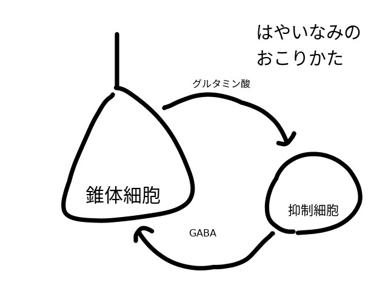
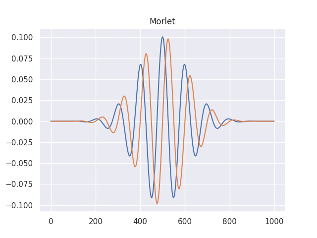
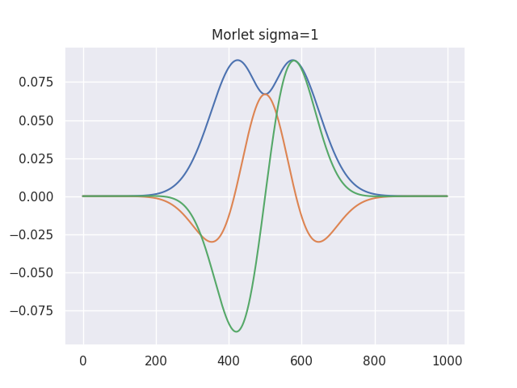
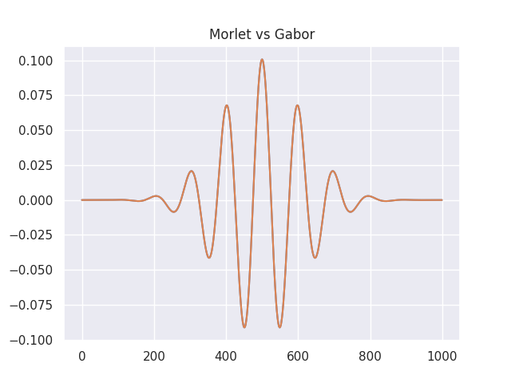
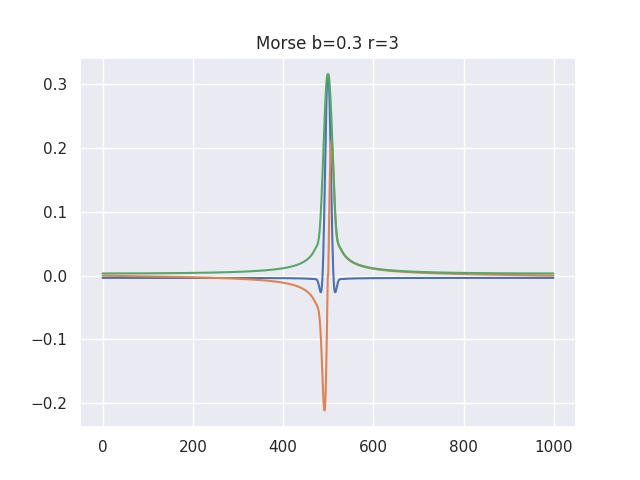
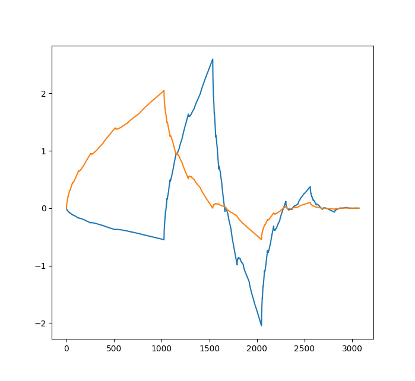
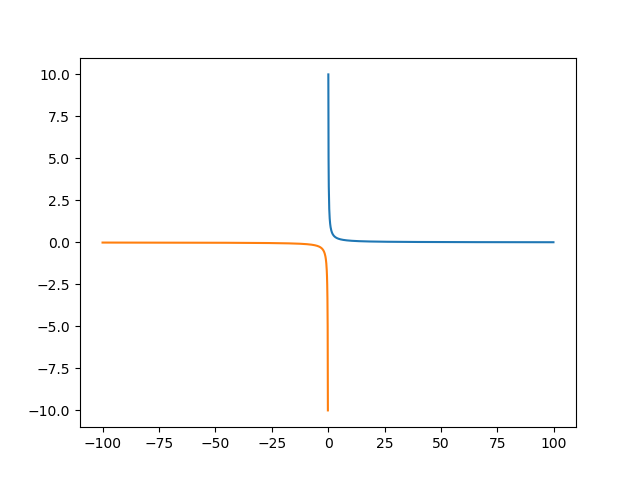

紹介編ではこれから何をしていくのか、何が出来るのかを語ります。
まぁ、適当です。
現代では脳は電気で動いている、と信じられています。
しかし、どのような挙動なのかはまだまだ分かっていません。
だから、貴方は研究をしたくなります。(それは火を見るより明らかです)
しかし、脳の解析は難しく、技術的な入門書、特に和書に乏しい現状があります。
だから同人誌を書くことにしました。
本書では脳磁図、脳波、MRI解析を「体で覚える」べく実践していきます。
さぁ、MNE/python、freesurferの世界で良い生活を送りましょう！
MNE/python12やfreesurfer3を用いて脳内の電源推定…特にソースベース解析を行うための
解析環境の構築と解析の基礎を概説します。可能な限り効率的な解析環境を構築し、楽をします。
僕が個人的に考えている事もちょくちょく書きます。なぜなら同人誌だから。
僕は脳波計も脳磁計も使用経験があるのですが、脳磁計はレアです。
僕はelekta社のMEGを使っていたので脳磁計はelekta前提で書きますが、
MNE-pythonは大抵の脳波計に対応しているので、
実験用脳波計さえあればなんとかなるでしょう。
本書の限界は僕のリソース不足4と、これが同人誌であること、
MNE自体の進化のスピードが光の速さであることです。
不確実なものとして、疑って読んで下さい。
この同人誌は不完全なため、更新があります。
内容は結構多いので、辞書的に使うのもいいでしょう。
本書の対象者は以下のとおりです
また、前提条件としてターミナルやプログラミングを怖がらないことがあります。
黒い画面を見たら怯える君！君は本書の対象外だから出ていきなさい！5
黒い画面を触ったことないけど、やる気はある君！君は歓迎します。
プログラミング未経験者の質問にも出来るだけ答えたいと思います。
脳研究の経験者はMNE/pythonとはから読んでいけばいいです。
MNE/freesurfer経験者ならOSの準備から読めばいいです。
コンピュータは自転車みたいなもので、基本は体で覚えていくしかないと思っています。
分からなければググることが大事です。qiita6等で検索するのも良いでしょう。
脳の中の電気信号を調べる方法としては脳波や脳磁図7が有名です。
脳波や脳磁図のセンサーで捉えた信号を直接解析する方法を
センサーレベルの解析と言います。これは伝統的なやり方であり、
今でも多くの論文がこの方法で出ている確実な方法です。
しかし、脳波や脳磁図は頭蓋骨を外して直接電極をつけないと
発生源(僕達はソースと呼びます)での電気活動はわかりません8。
普段計測している脳波・脳磁図は所詮は
「神経から頭蓋骨を通り抜けて漏れでた信号」に過ぎないのです。
では、一体どうすれば脳内の電気信号を非侵襲的に観察できるのでしょうか？
方法は残念ながらない9のですが、推定する方法ならあります。
その中の一つの方法として、脳磁図とMRIを組み合わせ、
MNEというpythonパッケージを使って自ら解析用スクリプトを実装する方法があります。
ソースベース解析というのはあくまで推定であり、
先進的である一方でまだまだ確実性には劣るやり方との指摘もあります。
ちなみに、脳波のソースベース解析はあるにはあるのですが、
脳波は電流であるため磁力と違って抵抗を避けて流れます。
実際、脳波でのソースベース解析とセンサーベース解析の結果が
不一致であったという研究が発表されています。10
脳波でやるならば、40チャンネル以上の脳波計を用意しましょう！
まぁ、後述しますが、脳波と脳磁計じゃ他にも得意分野の違いがあります。
本書では下記の言葉を使っています。伝統的なスラングを含みます。
適宜読み替えていってください。それ以外にも色々スラングあるかもです…。
何故スラングをそのまま書いているかって？
お前は同人誌にまで正しい日本語を求めるのですか？そういう人は回れ右。
僕は怖いおじさんなのです。
本書で「インストールにはこうします」とか言ってコマンドを示した場合は
文脈上特に何もない場合、ターミナルでそれを叩いてくださいという意味です。
pythonの文脈になったらpythonです。この辺りは見慣れれば判別できます。
それぞれの研究の、僕の感想を述べます。
安価で普及していますが、まだ多くの謎が眠っている分野です。
脳回や深部の信号に強いですが、脳脊髄液や頭蓋骨を伝わって行くうちに
信号が拡散してしまうため、空間分解能が低いです。
ポータブル脳波計とかあって、BMIとか出来る夢のある分野ですね。
ノイズに弱く、脳の深部に弱く、莫大な資金が必要な希少な機器です。
ソース推定しないならあまり面白みはないかな。
まず、脳波と違って脳溝・浅い部分をよく見れるという特徴があります。
脳内の水分子に磁場を与えて画像化する凄い機械です。
画像なのでゆるふわかと思いきや、量子力学の知識を要求します。
莫大な資金が必要ですが、それなりに普及しています。
血流を見ることが出来るので「脳機能」というか
「血が流れているから働いてるんじゃね？」的な事も大まかに見れます。
ネタが尽きようとも、新たな理論を持ち出してくる根性の分野です。
MEGとMRIを組み合わせて脳の電気活動を見るやつです。
本書の本題です。MRIの空間分解能と脳磁図の時間分解能を備えた
まさに †最強の解析†
…のはずなんですが、どうなんでしょうね？
脳波の場合はそこまで空間分解能は高くないっす。モワッとしてます。
脳磁計を使った場合は空間分解能と時間分解能が合わさり、なかなか凄いです。
EEGとMRIを同時に計測するという究極の方法です。
ただし、MRIのノイズは凄まじく、ノイズを取るのが困難です。
専門家でなくては施行できず、本書では取り扱いません。
脳磁図を解析するためのpython11用numpy,scipyベースのパッケージです。
自由度が非常に高いです。(引き換えに難易度が高いです。)
ソース推定をするためのパッケージなのですが、
Wavelet変換とかICAとかPermutation検定とか、その他あらゆる事が出来ます。
出来るのですが…使いこなすためには生理学、数学、工学の知識が必要です。
ちなみに元来脳磁図用なのですが、脳波を解析することも出来ます。
というか、脳磁計なんて値段がおかしい割に使い道が狭いので、実質脳波用。
C言語で実装されたMNE/Cというのもありますが、古いバージョンと考えていいです。12
開発は活発です。MNE/pythonです。
あと、freesurferについても導入と紹介を書いていこうと思います。
https://surfer.nmr.mgh.harvard.edu/
python2はマジでオワコンなので特別な理由がない限り使わないように。いいね？
頭部MRIを解析する為のソフトです。自動で皮質の厚さやボリュームを測れるだけでなく最近は
fMRIでコネクティビティの算出が出来るようになるなど、かなり賢いです。特に厚さに強いです。
反面、計算激重な上にサイズが大きくターミナル使う必要があります。
Unix系OSじゃないと動きません。
その上、違うCPU使ったら結果が変わる仕様があり、正しく扱わないとジャジャ馬と化します。
とはいえ、最近はWSL2がでたのでwindowsでも動きます。
最近頭部MRI研究で勢力を伸ばしつつあり、最早スタンダードの一つだそうです。フリーウェアです。
実は、以前人に教えようとした時、
いきなりMNEpythonと言われても初心者にはよくわからないと言われました。
unix系もコンピュータ言語も触ったことない人には例え話のほうが良いかもしれないので、
初心者のために、登場するソフトの名前を例え話で話してみます。
凄く乱暴な例えではあります。
| MNE | 役割 | オフィスに例えると？ |
|---|---|---|
| anaconda,pip,homebrew | ソフトをインストールするソフト | app store, google play, 人事部 |
| spyder,jupyter | 実際に色々書いたりするソフト | word, excel, 筆記用具 |
| python | 言語 | 日本語, 命令書の書式, 社内文書 |
| MNE | 言語で動く命令セット | excelの関数, 社内文書に従って動く部下 |
| mricron/mricrogl | 変換・表示用ソフト | 画像変換ソフト, 通訳 |
| freefurfer/freeview | MRI画像処理ソフト | Photoshop, 絵の具, MNEと違う部署の部下 |
君は、ここまで読んで「何やら難しそうだが、それで何かできるん？」
と思ったかも知れない。なので、ここで超簡単なレビューを書いてみます。
僕は精神病の脳の生理学が専門なので、精神病の誘発γ波についてすごーく簡単に書いてみます。
もちろん、他にもMMNとかrestingとか色々あるんですが、とりあえず雰囲気だけね。
参考になれば。
脳には実際に演算をする装置である灰白質と、演算結果を伝える白質という部分があって、
脳の表が灰白質、内側が白質であります。で、今回は灰白質の方を見たいと思います。
理由ですか？脳の電気活動を見るときは表面のほうが見やすいのです！
で、γ波(30Hz以上)を見ます。
理由ですか？皮質活動で発生する波はγだからです！
このγ波の事をカッコつけてγオシレーションとか言ったりします。
脳内には以下の細胞があるのです。
興奮性のやつはグルタミン酸[^ajinomoto]を放出するし、抑制性のやつはGABAを放出します。
興奮細胞と抑制細胞は互いに接続しています。
図に示すと、下記の様な感じです。
で、細胞の興奮というのは一度「ピコーン！」と興奮すると暫く休む性質があります。
暫く休む性質があるために、神経細胞は興奮の頻度が決まってきます。
そのピコピコ神経細胞が興奮する速度がだいたい30Hz以上ってわけです。

![^ajinomoto]: これは味の素です！
統合失調症を見てみましょう。理由ですか？
その分野はいっぱい研究されてて同人誌を書くのに都合が良いからです！
さて、顕微鏡を使った研究があります。
- 聴覚野(脳において聴覚を司る部位)の錐体細胞に異常がある13
- 軸索(神経細胞から伸びる枝)の密度が低い14
等が統合失調症で報告されています。
実際は神経の密度とかより先にγ波のおかしさのほうが発見されたんです。
そして、この神経細胞の異常がγ波のおかしさの原因だろうと言われています。
挙げるの？数限りないぞ！
面倒だからもう書かないけど、実は凄くいっぱいある。18
で、先のリストを見て君はあることに気づいたはずだ。γ波は誘発できる。
って事は、いろんな刺激をして、その刺激中の脳波を見れば
それで論文書けるんじゃねえの？ヒャッホウ！博士号ゲットだぜ！
(言うほど簡単じゃないけどな…)
というわけで、顕微鏡を見るだけが能じゃなくて、
生きている人間の脳活動を直に見ることが出来るということです。
さて、40Hzの音を聞かせた時に40Hzの脳波が出るとか、結構ずるい感じがしますが、
不思議なことにもっと低い周波数ではあまり差が出なかったり、
健常者やうつ病では差が出なかったり19と、確かにそういうのあるらしい。
おっ、統合失調症と鬱を分けられる…って思うじゃん？
躁鬱病でも差が出るらしい20。チッ、特異的じゃないじゃん。
でもまぁ、医者21としては考える材料が増えるのは嬉しいんですよね。
ま、そういう風な分野のことが出来ます。
他にも色々出来るでしょうね。
では、実験について色々書こうと思います。
研究するならもちろん厳密な実験が良いに決まっています。
というか、最低限の実験の綺麗さを担保しなければ成立しません。
しかし、実験というものは苦しみに満ちています。
実験を立ち上げる時に考慮すべき苦しみを
出来れば対処法とともに順不同で列挙します。
言い過ぎに見える所もあるかも知れませんが、マジで苦しみに満ちています。
君は生き残ることができるか？
被験者が実験に参加しているのは当たり前だと思われるでしょうが、
そんなことはないです。
「目をつぶって音を聞く実験」に参加した被験者が
居眠りをしていないと誰が言えましょうか？
「画像をみる実験」でちゃんと画像を見ていると保証できますか？
まずは、その辺りをちゃんと説明して、協力できないと駄目です。
そのあたりの協力関係を築く事がとても大事です。
「は？そんな事が問題になる事があるのか？」って
貴方はなったかも知れませんが、あるんだなこれが。
人間というものは楽してお金を貰いたい。だから割と被験者はサボるのです。
MEGもEEGもノイズに弱いです。
どこからノイズが飛んできているのかちっともわからないことがあります。
Wifiが電子レンジに弱いなんてやわなもんじゃない。
もっと深刻なものを体験できます。
そんな時はEEG用のシールドルームを用いますが…
シールドによって得意なノイズが違っていたり、
シールドルーム自体がやはり高額だったりします。
EEGに比べてMEGだと事態は深刻です。
地球の核から飛んでくる磁場は人間の頭から放出される磁場の1000倍程度。
シールドルームは必須です。
近くに地下鉄が通っているとそこから出る強力な磁場は
シールドを一部貫通します。
当然のことながら、MEGのシールドルームに
視覚刺激提示用の画面を置くと物凄いノイズが乗って酷くなります。
視覚実験苦しい！
ノイズの出にくい画面というのがあるのですが、これがまたお高いです。
というか、ノイズの出にくい画面からもノイズでます！
音の場合はMEGの部屋の外からパイプで伝える事でなんとかなりはします。
あと、単に金属が近くにあるだけでノイズになったりします。
ベルトは外して貰いましょう。
メガネは視覚実験の場合は検討が必要ですので後述します。
入れ歯も外させて下さい。銀歯は抜。。。
被験者の銀歯は抜きたいですが抜くと次の実験に来てくれなくなります。
この場合、金属に強力な磁場を当てることでノイズを散らす方法も
MEGの場合にはあるのですが、どちらにしろ辛いです。
被験者は、実験以上に拘束時間が長いです。
なぜかって？EEGやMEGを装着する時間はそれなりに掛かるからです。
お爺さんとかなら「腰が痛い、動いていいかの？」ってなりますよね。
赤ちゃんなら「オギャー！バブーーーー！」ってなります。
体が動くと、ものすごいノイズになります。
被験者に耐えられるような実験を組まねばなりません。
眼球が動くと脳波・脳磁図に大きな影響が出ます。
眼球運動のノイズは脳波などよりずっと大きいです。
眼球自体が強く帯電していて、目自体が結構ピクピク動くからです。
本来は、瞼なんか全部切り取って、片目を潰して、
眼球運動の筋肉を全て切除して、視神経の一部も一部切除したいくらいです。22
ほぼ全ての脳波・脳磁図実験に於いて眼球運動は大敵です。
実はそれをソフトウェアによって取り除くことは出来るのですが、
そもそもノイズいっぱいのデータは良くないです。
データは確実に劣化するでしょう。
被験者には出来るだけ視線を動かさないように教示しましょう。
あとはfixationを使う方法があります。
fixationは「実験中はここを注目しておいてね！」という小さな印です。
色んな実験の前に、そこに視点を合わせておいて、消してから刺激提示です。
問題点としては、その印自体が脳に影響するかもということ、
本当にそれを見ているかも保証できない事、
視覚実験の最中は出来ないこと…つまり、端的に言うとショボいです。
しかし、デメリットの少ない方法で有力なので、よく使われる方法ですね。
貴方は被検者さんに画像とかを見せることになりますが
貴方の提示した画面を被験者さんは本当に見ているでしょうか？
見ているとして、本当に真正面から見ているんでしょうか？
視野が少しでもずれたら大きく結果が変わるんじゃないかと厳しい人は言います。23
視覚実験の場合は眼球運動に加えて
「この人はちゃんと画像を見ているのか」が問題になります。
サボって目を閉じて眠っているかも知れない。
刺激が眩しかったり、嫌な画像から目をそらすかも知れない。
そこで、下記の二つが有力な方法です。
Web Cameraは要するにWeb Cameraで被験者の顔を観察して、
目で見て「お前目をそらしただろ！不合格！」と判定するやり方です。
しかし、どうでしょうか？「貴方はWeb
Camera越しにその人の見ている物が
分かるのですか？恣意的な要素が入っていませんか？」
というツッコミが来たらの終わりです。要するにショボいです。
もう一つは眼球運動を監視する為の専用のカメラで眼球を監視して、
ちゃんと使えるデータだけ使うというやり方です。
なんと、こいつぁショボくないのです！やったね！
トビーとかが販売していますが、実験用は値段が高いです。
もちろんですが、目の悪い人は視覚実験は辛いです。
メガネをつける事になりますが眼鏡の金具がノイズ源になりますので
木のメガネをかけさせてあげる必要があります。
ただ、貴方は多分眼鏡屋さんじゃない(眼鏡屋さんの読者さん、ゴメン！)ので
乱視とかには対応できません。MEGによる視覚実験では乱視は辛いんですね！
EEGの場合はそこまで酷くはないですが、それでも金属は帯電するので気にはなりますね。
Eye Trackerを併用する時にメガネって気になりませんか？
Eye Trackerの性能は100%引き出せないかも知れませんね。
下記を気にする必要があります。
前半3つは巻き尺とかを駆使する必要があります。
後半二つは光センサー等を駆使する必要があります。
あとでオシロスコープを使ってそれらを測定する方法を書きます。
MRIと脳波の同時測定ですか？
そりゃ、やっている人は居るけれど、本書の著者には無理です。
MRIの磁力と人間の脳から出る磁力は、だいたい10の15乗以上の差があります。
MRIの部屋は磁気カードは壊れるし、ボールペンは空を舞う世界です。
そんな酷い環境で脳波を測定するのは…まさに深淵です。
専門知識が必要です。
まず初めに、辛いことを言います。ヘッドホンではダメです。
聴覚実験の場合、音の大きさが重要になるからです。
音の大きさは音圧計という機械で測ります。
音の大きさが不揃いだと実験になりませんが、
音は反射したり、干渉したりする性質があることはご存知でしょう。
そして、耳の形は人によって全然違います！
ヘッドホンを付けたときのズレも毎回変わります！
耳の形やズレを無視できるデバイスが求められますね。
耳の中に入れるタイプのインサートイヤホンが最適解です。
インサートイヤホンの先っぽを鼓膜の所まで差し込むのです。
これならズレとか耳の形には関係ないですね！
それから、音の大きさはきちんと測っておく必要があります。
音圧計でインサートイヤホンから出る音の大きさを
測定する必要があります。
インサートイヤホンはビニールのケーブルで音を伝えるのですが、
でもインサートイヤホンってゴムのチューブみたいなもので出来ています。
つまり、途中がビヨンビヨンです。
なんと、このケーブルを通すことで音が劣化するのです！
さらに、イヤホンから出た音の大きさを、耳の中と同じ条件で
測ることって出来るでしょうか？これ、超絶難しい問題です。
耳の中にインサートイヤホンとマイクを一緒に入れるなんて出来ません。
実は無理じゃないらしいんですが、かなり値の張る音圧測定器が
必要になります。
この世は苦しみに満ちています。
ジッターとはブレですね。貴方は音を聞かせたり画像を見せたりします。
音が出はじめたタイミングを記録しておかなきゃなりません。
この記録が地味に面倒なのです。
まずは、音を出したタイミングで脳波測定装置に同時に
「音を出したよ！」と入力するのですが、これを同時に
こなす事が実は大変です。ミリ秒単位の誤差がでる事があります。
presentationという刺激提示ソフトウェアを使えば1ミリ秒程度の
誤差になってくれます。
ちなみに、80Hzの脳波においては1ミリ秒の誤差は28.8度であるようです。
苦しくないですか？
一番良いのは刺激提示装置を使う事です。stim trackerとか。
ただ、高いです！苦しい！
何も刺激をせずにすればいいじゃないかとなりそうですが、
これもこれで色々考える所があります。
まず、MRIのRestingはRestingじゃないと僕は思っています。
(MRIのResting研究の人にブチ殺される発言)
MRIなんか、ガンガン音がするんだから絶対純粋なrestingじゃないですよね…
閉所恐怖症の人なら変な感じの脳活動が出てるかも知れません。
なら、脳波って結構Resting出来るんじゃね？って思いますよね？
ですが、問います。貴方は心を無にすることが出来ますか？
脳波をつけられて、何も考えるなと言われてじっとしている時、
貴方は今日の献立や彼氏との喧嘩が頭に浮かんだりしているかもしれない。
「いけないわ！私は今、彼氏との喧嘩を思い出しちゃいけない！」
そう必死になって心を「無」にしようと足掻く。
その時に出ている脳波は「無」ではなく「足掻く」脳波かも知れない。
ま、それは実験的には仕方ないのですけれども、
気に留める必要はあるのではないでしょうか？
汗はノイズになります。震えもノイズになります。
空調がちゃんとなっていないと難しいのです。
それだけではなく、湿度の管理も大事ですね。
冷や汗や鳥肌もいけません。
特にLPPという指標は汗とすごく似ています。
LPPでは絶対に汗をかかせないようにしましょう！
というわけで、温度と湿度の管理は大事です。
老人やパーキンソン病の人の実験をする場合、
体が震えるため、脳波が揺れ動くように見えることがあります。
そんなの止めることはできないのでこの手の人は限界がありますね。
ハゲは脳波用のゲルが流れていきやすい性質があります。
それによって、脳波計によっては短絡のリスクがつきまといます。
さらに、ハゲ頭は皮が分厚いです。
だから、電流が通りにくいです。脳波的には不利です。
キャップ型とかだと中々しんどいです。
デブは首もデブです。
心臓は心電図が出ますが、首が細ければ＋とーがぶつかりあってノイズが消えます。
デブの場合は心電図のノイズが消えないのです！
心電図はソフトウェアによってあとで取り除くことは出来ますが、
それでもノイズが入ること自体が罪です。
頭の血管もまた、脈打ちます。
この、血管にセンサーがちょうど当たったらノイズになります。
この脈波は心電図に比べてソフトで外しにくいです。
歳をとると脳波は変化します。若い人も脳波が幼いです。
20歳とかでも幼い脳波が出る人は居るし、歳をとるだけで
脳波のα波は遅くなります。
だから、実験の時点で年齢をある程度合わせねばなりません。
永遠の18歳？関係ないね！
確かに全部致命的だけれど避けにくいのはある。
そういうのがあるって事を理解した上で、説得力を出すことが大事なんだよ。
厳格すぎる実験で結果が出ても
そんな厳格な実験でしか出ない結果なんて微々たる差だし臨床応用できなくね？
私からは以上です。
被験者に何かを見せたり聞かせたりしてその反応を脳波や脳磁図で拾ってくる実験をしたいとします。
脳はかなりの性能なので、30ms後には反応が始まります。
さて…ここで困ったことが起こります。実はコンピュータから画面やスピーカへ信号を送る時、
一瞬で届いてくれないことがあります。理由は、現代的なコンピュータは様々なタスクを
同時進行でやっていたり、性能を確保するために様々な工夫をしますが、それが仇になるのです。
実験中に他の処理が割って入ってきたり、刺激に沢山の演算が必要だったりして
時間を取られたりすると信号が一瞬で届きません。
実はパラレルポートで出した信号は時間がブレる事が結構あります。
なので、どのくらいの時間で出来るかを測定しておく必要があります。
ここでは僕がどうやったかを書いておきます。
僕がやったのは被験者の目の前の画面に図が表示されるまでと、
「画面提示」の信号が脳磁図計に届くまでの差を調べることです。
オシロスコープ本体
picoscope2000というのを使いました。windowsで動きます。かなり可愛いオシロスコープですが、
入力2チャンネル、トリガー出力1チャンネル、μs単位の反応速度を持っています。
25000円くらいですが、家電量販店には売ってないです。
センサー
これは明るくなると抵抗が減るダイオードです。
光センサがRPM22PBで200円くらいです。amazonで買ったあと品切れになりました。
今買うならRPT-37PB3Fのほうが在庫が多そうです。頑張って探しましょう。
スペック上10μs前後の反応速度のようです。
乾電池
上記センサは5Vくらいの電圧では全然問題ないため、
乾電池二本直列程度なら回路の途中に抵抗は要らないようでした。
ていうか、2本じゃ足りないかも。3本あったがいいかも。
この辺りは、スペック表とにらめっこして下さい。
ヒートシュリンクチューブ
ドライヤーを当てると縮むチューブです。
光センサーが壊れたら嫌なのでヒートシュリンクチューブで守りました。
あとはジャンパー線、鰐口クリップ付BNC同軸ケーブル、
半田と半田ごて、電池入れが必要でした。BNC同軸ケーブル周りはやや入手難度が高かった印象です。
どのようにしたかというと、光センサーを電池につなげてオシロスコープに繋ぎます。
オシロスコープには2つの入力チャンネルがあるので、もう一方を刺激提示用コンピュータに繋ぎます。
さらに、ディレイ測定用コンピュータにも繋ぎます。
それで、刺激提示させた刺激を光センサーで捉え、差分を測定用コンピュータで受け取ります。
図にするとこうでしょうか…
もちろん、聴覚実験のときはまた違います。
直接イヤホンジャックからの信号をオシロスコープにブチ込んで測れるので簡単です。
ただし、聴覚実験の時は音圧計で音圧を測ったり、その時に耳の形の
模型できちんと耳に音が入るかを確認する必要があります。
必要ですが †億単位の金† が必要なので本書では割愛します。
読者の中で個人的に買える人が居るなら買うと良いんじゃないかな。
脳波研究は気軽で良いですね。これは脳磁図研究ほどお金はかかりません。
臨床応用されている脳波計は †千万単位の金†
くらいしか要りません。
もしお金がなくても、病院にはそれなりにある機械です。
読者の中で個人的に買える人が居るなら買うと良いんじゃないかな。
あと、最近は10万円くらいで買える脳波計もありますね。openBCI24とか。
性能はまぁ…？
必要な性能はどこまでやるかにもよります。
センサーベース脳波解析なら普通の市販のノートでも十分です。
MRIやソースベース解析やるなら高性能なのがいいです。
また、高性能でも24時間計算し続けるような場合ノートではダメです。
ゲーミングノートで数時間の処理とかならありかな、とは思います。
一日以上やる場合は…小さくてもデスクトップ機を使って下さい。
ノートは性能に限界があるだけでなく、排熱機構が弱いので
数日計算し続けると火災が発生する可能性があります。25
メモリいっぱい、CPUは多コアがいいです。今時ブランド選ばなければ割と安いです。
どの程度のものが必要かは実験系によります。
GPUは基本「あまり効かない」と思っていて下さい。(効く場面もありますが限定的です。)
入れるならnVidia製にして下さい。AMDも頑張ってますが、まだまだ科学計算に弱いです。
メモリが大量に必要で、GPUよりCPU使う場面が多いです。
freesurferはOSやCPUが変わったら結果が変わるという仕様がありますから
「このコンピュータを使う」と固定する必要があります。
本書は脳波解析の本です。解析のためにはコンピュータを使います。
貴方のコンピュータを脳波を解析できるようにしなければなりません。
ここからはコンピュータと解析ソフトの導入をします。
OSというか、コンピュータ自体ですけれども。
OSはLinux, MAC OS, Windowsどれでもいけます。
MRIをいじるならばUnix系が必要になりますが、Windowsでもいけます。
それぞれ各論を言いますが、僕個人としてはLinuxが好みです。
Windowsを知らない人はいないでしょう。
昔はWindowsは辛かったのですが、最近はWSLというWindows上でLinuxを
動かす仕組みが整っていて、一応こなせます。
MRIをやる時には性能面では劣るかも？
機種を選べばお金が減りにくいというメリットがあります。
言わずと知れたオシャレ系OSです。何かとお財布に優しくないのが玉に瑕。
Unix系の中でもBSDの系譜であり、MRI研究に素の状態で使用できるのです。
Unix系の中でもLinuxの系譜に当たるLinuxです。
貧乏でMacを調達できない人はこれを使うと良いです。
さて、Linuxは単体では使用できません。
Linux単体だと、マジで黒い画面が表示されるだけで何も出来ません。
なので、ソフトの寄せ集めであるディストリビューションが必要です。
生肉に対する定食みたいなものですね。
この定食的なものが無料で配布されていたりします。
この中でも王手としてDebian系とRedhat系があります。Debian系が無難と思います。
というわけで、僕は新しめのdebian系linuxディストリビューションである
UBUNTU26を使います。
…今、玄人の君は「何故Arch linuxじゃだめなん？」と思ったよね？
あれはローリングリリースだから、ソフトのバージョンに敏感な
Freesurferの結果がぶれるので、MRIやるなら非推奨。
Linuxでも新しめのメジャーなLinuxディストリビューションがいいです。
CUDA等の技術に対応していたり、ユーザーが難しいことを考えなくて良いことが多いからです。
debian系を使う理由はパッケージ管理ソフトのaptが優秀でユーザーが多いことです。
MACの場合はaptの代わりに homebrew
https://brew.sh/index_ja.html を用いることになります。
UBUNTUは下記サイトから無料でダウンロードできます。
Ubuntu https://www.ubuntulinux.jp/ubuntu
プログラミング得意な人はこのセクションは見なくていいです。
開発環境はMNE使うなら必要です。
MNEはpythonで動くため、まずはpythonの環境を用意してあげないといけないのです。
pythonの環境は構築の方法がいくらでもあるのですが、それぞれ一長一短です。
詳しい人からは「docker27じゃダメなん？」という質問が
来そうですが、セットアップは自分でできなければ困ることもありましょう。
普通はanaconda28を使います。何故ならMNE公式がanaconda推しだからです。
anacondaもいい所悪い所色々あってエンジニアの中には毛嫌いする向きもあります。
僕はよりpythonistaっぽくvenv29を使っています。
uv30やpoetry31を使う方法もあります。
venvとpoetryはpython本体までは用意してくれないので、
pyenvと併用する必要があります。
Anaconda https://www.continuum.io/downloads
このサイトからインストールプログラムをダウンロードします。
anacondaにjupyterというrepl32とspyderというIDE33が付いてきます。
これらを使うのもまたいいと思います。
あとは、自分の好きな開発環境を調達するといいでしょう。
開発環境は色々あるので軽く紹介します。
vscodeは現代的なテキストエディタです。
python用ではありませんが、プラグインを入れてpythonのIDEとして使うことが出来ます。
Microsoft製ですので圧倒的な安心感があります。
とても素直な挙動のIDEでipythonの補完機能も手伝って使いやすいです。
ただし、動作が重めなのと、企業のバックアップがなくなって今後が辛いかもです。
オススメ度は将来性を考慮するとやや低いです。
replというか、shellと言うかちょっと珍しい開発環境です。
これだけで完結することも出来なくはないレベルの開発環境です。強みとしては
弱みもあります
これだけでやろうとするのはやめたほうが良いです。
弱みが割と致命的になりがちで、初学者がこれだけに慣れると
コーディング技術が伸び悩みます。
使うなら、必ず他のテキストエディタと併用しましょう。
初心者の場合
- anaconda
- vscode
- jupyter
という組み合わせです。mneのインストールはanacondaに任せちゃいます。
基本はvscodeでスクリプトを書きますが、状況に応じてjupyterでチェックしたりします。
pythonを書いたことは無いけれど他の言語の玄人の人にはこうです。
- venvまたはpoetryとpyenv
- 好みのテキストエディタ
Windowsのnotepad.exeはお勧めしません！
力不足です！
Macのテキストエディットは最悪です！
勝手に貴方の書いた文字列を書き換えてしまいます！
jupyter一本で挑むのはやめて下さい！
初心者はjupyter依存症になって伸び悩みます！
では、上記の初心者用環境を整える為の準備をしていきましょう。
vscodeはまぁ、導入するのは楽勝なのでググって下さい。


MACはanacondaのインストーラーをダウンロードしてクリックしていけばどうにかなります。
linuxではanacondaはダウンロード後、ターミナルで以下のようにコマンドを叩いて
インストールします。bashです。ただのshじゃインストールできません。
bash Anaconda3-hoge-Linux-x86_64.shインストール先はホームフォルダでいいかとか、色々質問が出てきますが、
そのままホームフォルダにインストールするのが気持ち悪くてもスムーズに行くかと思います。
気持ち悪くて死ぬ人はpipenvでも使って下さい。
jupyter notebookすると、ブラウザが起動し、画面が表示されるはずです。
起動しなければ、下記URLにアクセスしてください。
http://localhost:8888
jupyterはブラウザで動かすものですが、別にネットに繋がるものじゃないです。
ちなみに、下記の様にして起動すると、lan内で別のjupyterに接続できます。
jupyter notebook --ip hogeipは、多分ターミナルに表示されていると思います。
そうじゃないなら、例えばUbuntuなら
ip addrで表示されます。
jupyterはターミナルでctr-cを二回叩けば終了できます。
では、左上のnewボタンからpythonを起動しましょう。
jupyterを使うなら、折角なので拡張しておきましょう。ターミナルで下記を叩いてください。
conda install -c conda-forge jupyter_contrib_nbextensions
jupyter contrib nbextension install --user
ipcluster nbextension enable --userこれでextensionが使えるようになります。
jupyterはplotの方法を指定できます。
表示したい場合は、予め下記コードをjupyter上に書いておいてください。
jupyter上に直接出力したい時
%matplotlib inlinepython3環境下で別ウィンドウで表示したい時python3とpython2は使うqtのバージョンが違うので
qt5が必要になります。
%matplotlib qt5三次元画像をグリグリ動かしながら見たい時
(mayavi使用)
%gui qtこれについては後でまた詳しく記載します。
anacondaは仮想環境を作れます。仮想環境はガンガン使いましょう。
何故かって？mneのバージョンが上がることがあります。
バージョンが上がるときに困るのは、バージョンを上げると
過去の解析環境が失われてしまい、再現性が損なわれることです。
そこで、大事なのは仮想環境を作り、その環境の中でやっていくことです。
MNEはanacondaを推奨しています。
anacondaはpythonの仮想環境34を作ることが出来ますのでそれを利用するのが楽です。
では、ipythonからやっていきましょう。
ここでは、hogeという名前のpython3.6環境をjupyter上に作ってみましょう。
ipython kernel install --user --name py3
conda create -n hoge python=3.6 anaconda
conda activate hoge
ipython kernel install --user --name hoge
conda info -e1行目から順に何をやっているか述べます。
conda activateコマンドでpythonの環境を切り替えられます。
これでjupyterで色んな環境を切り替えられると思います。
ちなみに間違って環境を作った場合は以下のコマンドで消せます。
conda remove -n python3 --allanacondaを使っているなら下記でRがインストールできます。
conda install libiconv
conda install -c r r-essentials
conda install -c r rpy2これによりRが動くようになり、貴方は少しだけ楽になります。
何故なら、実験結果を同じ環境で動くRに吸い込ませられるので、
「実験結果を入力するだけでワンクリックで統計解析結果まで出る」35ような
スクリプトが実現できるからです。具体的にはjupyter上で
%load_ext rpy2.ipythonとした後
%%R -i input -o output
hogehogeという風に記述すればhogehogeがRとして動きます。plotも出来るし、引数、返り値も
上述のとおり直感的です。さて、この-iですが、通常の数字や一次元配列は普通に入りますが、
Rならデータフレームからやりたいものです。その場合はpandasというモジュールを使って
受け渡しをします。例えばこのような感じです。
import pandas as pd
data=pd.Dataframe([二次元配列])%%R -i data
print(summary(data))pythonとRをシームレスに使いこなすことがこれで出来るようになります。
CUDAをご存知でしょうか？
GPUを科学計算に用いる方法の1つで、Nvidia社が開発しているものです。
GPGPUと呼ばれる技術の一種ですね。これはMNEpythonでも使うことが出来るので、やってみましょう。
つっても、今の所フィルター関連だけなんですけどね…
しかもあまり速くない上に、ドライバ入れるのが結構面倒いとか
そういうツラミが出てきていてあまりおすすめではないです。
あと、ついにMacでNvidiaがサポートされなくなったりしています。
これのインストールも詰まるとそれなりに面倒です。
結構環境によるので「頑張ってね」としか…。
まずは、Nvidiaのサイトからインストーラーをダウンロードします。
Nvidia https://developer.nvidia.com/cuda-downloads
このサイトには色々なOSに対応したCUDAが置いてあります。
僕はubuntuならdeb(network)をお勧めします。面倒臭さが低いです。
インストーラーをダウンロードしてダブルクリックするだけではダメで、
ダウンロードのリンクの下にある説明文を刮目して読みましょう。
こんな感じに書いてあります(バージョンによって違います)
sudo dpkg -i cuda-repo-ubuntu1604_9.1.85-1_amd64.deb
sudo apt-key adv --fetch-keys http://hogehoge.pub
sudo apt-get update
sudo apt-get install cudaこんな感じのがあるはずなので、実行して下さい。もちろん、バージョンとかは読み替えるべし。
そして、これが大事なのですが、bashrcにパスを通す必要があります。
これはCUDAのインストールガイドに書いてあります。
インストールガイドへのリンクは先程の説明の下に小さく書いてあります。
具体的には下記のような感じです。
export PATH=/usr/local/cuda-9.1/bin${PATH:+:${PATH}}
export LD_LIBRARY_PATH=/usr/local/cuda-9.1/lib64\
${LD_LIBRARY_PATH:+:${LD_LIBRARY_PATH}}これでCUDAへのリンクが貼れたはずです。bashを再起動しましょう。
MNEpythonのCUDAインストールのページに従ってコマンドを叩きます。
http://martinos.org/mne/stable/advanced_setup.html#advanced-setup
sudo apt-get install nvidia-cuda-dev nvidia-modprobe
git clone http://git.tiker.net/trees/pycuda.git
cd pycuda
./configure.py --cuda-enable-gl
git submodule update --init
make -j 4
python setup.py install
cd ..
git clone https://github.com/lebedov/scikit-cuda.git
cd scikit-cuda
python setup.py installこれでインストールできてたら成功です。pythonで
import mne
mne.cuda.init_cuda()としたらEnabling CUDA with 1.55 GB available memory…
的なメッセージが出たりします。そして、一番確実なのはMNEpythonに付属した
テストツールを回してみることです。
pytest test_filter.pyこのテストツールはMNEpythonの中にあります。
場所的にはanacondaの中のlib/python3/site-package/mne/tests
的な場所にあると思うのですが、環境によって違うかもです。
このテストがエラーを吐かなければ…おめでとうございます！
貴方はMNEpythonをCUDAで回すことが出来ます！つっても、今の所フィルター関連だけなんですけどね…
バージョン管理を知っているでしょうか？
貴方はスクリプトを書くことになるのですが、ちょっとしたミスでスクリプトは動かなくなります。
そんなリスクを軽減するために、貴方はスクリプトのコピーを取ります。
コピーを取り続けるうちに、貴方のコンピュータはスクリプトで埋め尽くされ、収集つかなくなります。
さらに、他の人がスクリプトを手直しする時、引き継ぎとかも大変です。
そんな貴方はgitを使うと幸せに成れます。
gitを知らない人は、とりあえずgithub desktopとかsource
treeをダウンロードして
体でそれを知ってください。詳しくはgitでググってください。
こことか参考になります。
git-guide
http://www.backlog.jp/git-guide/
git単体でもいけるのですが、gitサーバーというのもあります。
最近Microsoftが気前よくgithubのプライベートリポジトリを無料化したので、
それを使うのもいいでしょうね。
自分の研究用スクリプトをアップしたくないなら自前で鯖立てするのもいいし、
そもそも鯖立てなくても十分便利です。
ただ、一つ言えるのは、これ間違ってpublicとして個人情報を
githubに上げちゃったりすると捕まりますので、これだけは注意しましょう。
普段はgitサーバーは要らないと思うよ。
jupyterのファイルはgitしにくい上にすっごい散らかるので
きちんとコーディングする場合はオススメしません。
普通にテキストエディタ使いましょう。
あくまでサブとして使う事をおすすめします。
重いしね…
jupyter notebook --generate-configこのコマンドでjupyterのコンフィグファイルが作成されます。
場所は/home/user/.jupyterです。
その上で、下記URLに記載されている通りに書き加えます。
http://jupyter-notebook.readthedocs.io/en/latest/extending/savehooks.html
すると、jupyterで編集したファイルがpythonのスクリプトとしても保存されます。
あとはgit36などで管理すればいいです。
ただし、この方法は計算結果がファイル内に残りません。
しかも散らかりますし、面倒くさいです。
gitを使いますが、git側の設定だけでもどうにかなります。
まず、jqをインストールします。.gitattibuteに書きを書き加えます。無ければ作ってください。
*.ipynb diff=ipynbそして、下記を.git/configに
[diff "ipynb"]
textconv=jq -r .cells[] |{source,cell_type}
prompt = false下記を.gitignoreに
.ipynb_checkpoints/これでjupyter notebookのファイルをgitで管理しやすくなります。
色んな理由でおすすめはしませんけどね…
maxfilterというフィルタがMEG研究ではほぼ必須です。
これは外から飛んでくるノイズを数学的に除去するフィルタです。
これについてはMNEpythonにもあるのですが、elekta社のmaxfilterもあります。
一長一短ですが、何も考えずに使うならelekta社でしょうか…。
僕は以前はelektaのを使っていましたが、最近MNEに移行しました。MNEのは後で解説します。
それぞれの特徴としては
Elekta版
MNE版
ELEKTA社のを使いたい場合はDANAというソフトと
maxfilterというソフトをELEKTA社から貰う必要があります。
また、環境はRedhat5またはCentOs5の64bit版を使うことになっています。
えっ、linuxはUbuntuを使うんじゃなかったの？と思ったでしょう？
ELEKTA社のソフトはredhat linux系が前提なのです。
あとは企業の人に聞いたほうが良いです。細則があります。
…正直、よく分かんないし、あんまり語れないんですよね、
オープンソースじゃないものですしね。
freesurferをインストールしましょう。
下記のurlからダウンロードできます。
https://surfer.nmr.mgh.harvard.edu/fswiki/rel7downloads
Ubuntu、CentOS、MACOSがありますね！
Windows版？ハッw そんなものはない。
もしどうしても君がWindowsを使わねばならぬなら
WSL(Windows Subsystem for Linux)を使えばいいかもしれないです。
というか、僕の手元では動いたので動くと思います。
Macなら下記のソフトも必要です。Xwindowシステムですね。
https://www.xquartz.org/
素でXwindowシステムが動くのがLinuxディストリビューションなので、
ここが僕がLinuxディストリビューションを気に入っている理由です。
Ubuntuなら
sudo dpkg -i hogeでパッケージをインストールできます。
MacならGUIのインストーラーあります！
ね、簡単でしょう？でも、まだ終わっていません。このままでは動きません。
もしかすると、追加で下記が必要かも分かりません。Ubuntuなら
sudo apt install tcsh cshMacなら
sudo brew install tcsh cshあとは、設定をしないといけないのです。
設定ファイルはホームディレクトリにある隠しファイルです。
テキストエディタは何でも良いですが、とにかく編集しましょう。
「隠しファイルなにそれ」な人は、unix系の勉強をしましょう！
僕はとても優しいので教えますが、「.」で始まるファイル名は隠しファイルになります。
freesurferのダウンロードページに、Setup &
Configurationという所があります。
四角で囲んである部分をコピーして、隠しファイルの.bash_profileに追記しましょう。
場合によっては.bashrcのこともあるかも知れませんね。
貴方が使っているシェルに応じてどれをどんな風にコピペするかが決まるのですが
大抵はbashかzshと思います。
linuxなら
https://surfer.nmr.mgh.harvard.edu/fswiki//FS7_linux
Macなら
https://surfer.nmr.mgh.harvard.edu/fswiki//FS7_mac
を見て下さい。
要するにこんなふうなのを設定ファイルに書き加えるんですね。
export FREESURFER_HOME=$HOME/hoge
source $FREESURFER_HOME/SetUpFreeSurfer.sh1行目を見て下さい。
これはFreesurferがホームディレクトリの’hoge’にインストール
されている場合ですね。
で、コピペし終わったら、保存して閉じるんですが、MRIの解析結果の
保存先(subject_dir)を決めてあげたい場合は下記のようにします。
export SUBJECTS_DIR=fugaこれは決めてあげたほうが良いです。何故なら、標準のsubject_dirは
読み書きに管理者権限が必要だったりするからです。
あと、毎回同じMRI研究をするわけでもないので、プロトコルが変わるなら
場所も変えてあげたいですよね！
最後にライセンスキーを入れましょう。
freesurferの公式サイトに登録して、ライセンスキーをメールでもらい、
freesurferのディレクトリに突っ込みます。
面倒いので、あとはfreesurferのサイトを読んで下さい。
こちらはMNEの公式ではanacondaの存在下でやるようになっています。
Windowsならanacondaが良いらしいですね。
anacondaが嫌いでuvを使っている君は…もしかして自称玄人だな！
例えば、下記の意味が分かる人にはこのセクションは不要です。
あとはその都度必要になったものを適当に入れます。
python -m venv env
source env/bin/activate
pip install mne h5io matplotlib numpy mne-connectivityちなみに、意味的には
「envって名前の仮想環境を作って、その仮想環境に行って、
色々インストールするよー」という意味です。
実は僕はいつもこの方法をとっています。
ま、pythonは何通りも導入方法あるので。
あと、最近mneからコネクティビティ解析関連が
mne-connectivityとして独立したので、
使いたいならば入れて下さい。
長くmne-pythonをヲチしているけれど、
mne-pythonのインストール方法、変わりすぎて草。
バージョン変わる毎にインストール方法変わるので注意です。
現行バージョンは1.4。
現時点で公式サイトではanacondaを使うことになっています。
理由は…よく分かりませんが、多分「どこでも動くから説明が楽」なんだと思います。
インストール方法はここにあります。
https://mne.tools/stable/install/manual_install.html
ちなみにこういうゆるふわ簡易版なのもあります。
https://mne.tools/stable/install/installers.html#installers
さて、上記の簡単版を使わないなら、下記のようにします。
conda install --channel=conda-forge --name=base mamba
mamba create --override-channels --channel=conda-forge --name=mne mneこれで新しい’mne’という仮想環境が出来るようです。
そう、仮想環境で構築することになります。
このやり方のメリットは、いつでも同じ環境を整える事ができるので、
ソフトのバージョンが変わっても対応しやすいということです。
反面、毎回仮想環境に入らないといけないという小さなデメリットがあります。
だけど、バージョン揃えるのは貴方の責任です。
つまり、使いましょう。(圧力)
公式サイトをみながら頑張りましょう。
conda create\
--strict-channel-priority\
--channel=conda-forge\
--name=mne\
mne-base h5io h5py pymatreader–name=mneってありますよね？
これでmneという名前の仮想環境が整います。
下記のコマンドでmneの環境に入れます。
conda activate mne今後はmneを使うときは必ず上記のコマンドを打って下さい。37
面倒くさい？どうしても打ちたくないです？
それならば、.bashrcや.bash_profileに下記を追記してください。
conda activate mne大まかにはこれで完結です。
仮想環境は複数作っておくほうが良いと思います。
hogeって環境作りますね。
conda create\
--strict-channel-priority\
--channel=conda-forge\
--name=hoge\
mne-base h5io h5py pymatreaderhogeの環境に入るには
conda activate hogeです。ちなみに、出るのは
conda deactivatemacなら下記も必要です。
多分今のMNE-pythonはMAYAVIは必要ないと思います。
僕の見た限りですが。昔は大変だったんだ。
時間周波数解析をする場合は、
HF5をインストールする必要が出ることがあります。
上記のanacondaの方法なら全部入りますが、pipとかでやると
入らないので一応言います。
pip install h5ioでおｋです。
jupyterという開発環境があります。これは初心者にはオススメしません。
理由はコードが汚くなるからで、初心者はきちんと基礎的なコーディングをするのが
僕のオススメです。
jupyterを使うのであれば、上記の環境をjupyterに登録する必要があります。
まずは、仮想環境に入って下さい。
conda activate mneでは、登録しましょう。下記は「今いる環境をjupyterに登録する」やつです。
userというのは「コンピュータ全体向けじゃなくて、僕向けにやるよ」
nameは仮想環境の名前ですね。
jupyter kernel install --user --name hogeもし、要らなくなったら
jupyter kernelspec uninstall hogeですね。
CUDA38(GPGPU)についてもそのサイトに記載があります。
CUDAはnvidiaのGPUしか動きません。インストールについてはnvidiaのサイトも参照して下さい。
まぁ、各種波形フィルタでしか使えない上にさほど性能よくないです。
正直、CPUだけで十分です。39
僕の環境では下記二行のコマンドを予め入れていないと動かないです。
.bash_profileや.bashrcに書き加えておけばいいでしょう。
export LD_PRELOAD='/usr/$LIB/libstdc++.so.6'
export DISPLAY=:0さらに、jupyter内で下記を実行しないといけません。
%gui qtこれはmne-pythonを普通に使うなら不要です。
つまり、レガシィな物を使いたい人が使うやつです。
要するに不要です。
残念ながらMNE/Cを使ったことがないので僕には何もわからないのです…。
下記サイトにメールアドレスを登録し、ダウンロードさせていただきましょう。
MNE-C
http://www.nmr.mgh.harvard.edu/martinos/userInfo/data/MNE_register/index.php
ダウンロードしたものについてはこのサイトの通りにすればインストールできます。
MNE-C
http://martinos.org/mne/stable/install_mne_c.html
僕はホームディレクトリに入れました。
tar zxvf MNE-hogehoge
mv MNE-hogehoge MNE-C
cd MNE-C
export MNE_ROOT=/home/fuga/MNE-C
. $MNE_ROOT/bin/mne_setup_shこれでMNE-Cも動くようになるはずです。
皆さんはSNSはしていますか？SNSには様々な効能と副作用があります。
時に炎上する人だって居ます。廃人になる人も居ます。
しかし、最先端の科学にとって、SNSは大変有用なのです。
twitterでMEGやMRIの研究者をフォローしてみてください。
いい情報、最新の情報がピックアップされ、エキサイティングです。
僕は新着情報はtwitterで研究者、開発者、有名科学雑誌のアカウントを
フォローしてアンテナはってたこともありました。
(筆者の脳の疾患が増悪して今はしてない)
ちなみに、若いエンジニアはよくするらしいです。ターミナル使える人のためのTLDR;
インストールしたら以下で終わり。
recon-all -i ./hoge.nii -subject (被験者番号) -allちなみに、recon-allというのは複数のコマンドを束ねたコマンドです。
その複数のコマンド群は下記に記載されています。
https://surfer.nmr.mgh.harvard.edu/fswiki/ReconAllDevTable
つまり、上記の細かいやつを参照すれば自分が何をしているのか分かるのですが、
ユーザーが難しいことを考えなくてもソフトの作者が
「デフォルトではこうだから全部並べとくね」ってやって下さってる。
昔だったら自分でこれを実装しないといけなかったらしい。
凄い親切！recon-allってなんて楽ちんなコマンドなんだ！
圧倒的感謝！謝々！カムサハムニダ！現場からは以上です。
とはいえ、ソフト自体はものすごく正確というわけではありません。
塗り損ないが出来ることがあります。トラブルシュートは後で書きます。
ちなみに、並列計算出来るんですが、公式曰く「バグがあるから使うな」とのこと。
(なのに何故か無効化されていない。何故だ…)
さて、俺は優しいのでターミナル使ったことのない人への解説も書きます。
下記はターミナルを操るための必要最低限のbashのコマンドです。
まず、ターミナルを開きMRIの画像データがある場所まで移動します。
例えばフォルダの名前がDATAなら下記のようにします。
cd DATA辿っていって、目的のファイルを見つけたならば、freesurferで解析します。
例えばファイルの名前がhoge.niiなら下記です。
recon-all -i ./hoge.nii -subject (患者番号) -allこのコマンドを走らせると、完遂するのにおよそ丸１日かかります。
で、やっている事は、頭蓋骨を取り除き、皮質の厚さやボリュームの測定、標準脳への置き換え、
皮質の機能別の色分け等、色々な事をしてます。詳しくはfreesurferのサイトを見て下さい。
recon-allはマルチスレッドで処理をすることができます。
しかし、効率はあまり良くないし40、公式が使うなって言っています。
つまり、マルチコア機なら一例ずつマルチスレッドでかけるより、
同時多数症例をシングルプロセスで掛かける方が速く済みます。
ターミナルを沢山開いて処理させたりすると速いですが煩雑です。
なので、スクリプトを書いて自動化することをおすすめします。
MNEpythonを使う人はプログラミングの習得は必須なので良いとして、
freesurferしか使わない人でもスクリプトは書けるようになる方が便利です。
僕のおすすめはpython、shのいずれかです。41
下記はshの一例です。
recon-all -i ./hoge1.nii -subject hoge1 -all &
recon-all -i ./hoge2.nii -subject hoge2 -all &
recon-all -i ./hoge3.nii -subject hoge3 -all &
recon-all -i ./hoge4.nii -subject hoge4 -all こんな感じでテキストファイルにして、’hoge.sh’とでも名付けます。
で、以下のとおりです。
sh hoge.sh「シェルで並列するならxargsコマンドを使えよ」という声が
聞こえてきそうですが、本当はそれが王道です。やりましょうか。
SUBJECTS='1
2
3
4'
echo "$SUBJECTS" |\
xargs -P 4 -I{} recon-all ./hoge{}1.nii -subject hoge{} -allこれで、CPU4つを使って同時に解析できます。
freeviewというコマンドで解析済みの画像を表示できます。
上から解剖的に分けたデータを乗せることで部位別の表示ができます。
コマンドラインでは以下のようにすればいいですが、freeviewと叩いてから
画面上からやっていってもいいと思います。
(多くの人は普通の画面上からしたほうが分かりやすいでしょう)
freeview -v <subj>/mri/orig.mgz \
hoge/mri/aparc+aseg.mgz:colormap=lut:opacity=0.4 orig.mgzというのはオリジナル画像。グレイスケールで読みこみましょう。
aparc+aseg.mgzは部位別データ。部位別データには色を付けて読み込みましょう。
画面左側に表示されているのは読み込んだ画像一覧です。
上に半透明の画像を重ねあわせていって上から見ています。
色々できますので、遊んで体で覚えるのが良いと思います。
recon-allが終わった時点で、下記コマンドを入力しましょう。
asegstats2table --subjects hoge1 hoge2 hoge3 ...\
--segno hoge1 hoge2 hoge3 ... --tablefile hoge.csvsubjectにはsubject(つまり解析済みデータの通し番号)を入れます。
segnoには見たい位置を入力します。その位置というのは
$FREESURFER_HOME/FreeSurferColorLUT.txtに書かれていますので参照しましょう。
これでhoge.csvというファイルが出力されます。
このファイルの中には既に脳の各部位のボリュームや皮質の厚さ等、
知りたい情報が詰まっています。しかし、このまま使うのは危険です。
freesurferは時にエラーを起こしますので、クオリティチェックと修正が必要です。
個別な修正はfreeviewを用いてすることになります。下記を参照して下さい。
Tutorials
http://freesurfer.net/fswiki/Tutorials
このfreesurferのサイトには、説明用のスライドと動画があり、とてもいいです。
以下、要約です。
これは、問題にぶつかった時に上記サイトのスライドでも見ながら頑張るのが良いと思います。
皮髄境界などはfreesurferは苦手としているそうです。

Freesurferは脳だけを解析するためにSkull
Stripという作業をします。要するに、頭蓋骨を
外してしまうわけです。この時にwatershedmethod42という方法を使うのですが、頭蓋骨を
切り取ろうとして脳まで取ったり逆に眼球や脈絡叢まで脳と間違うことがあるので修正が必要です。
脈絡叢(血管の束とか)を巻き込んでいる場合はbrainmask.mgzを編集します。
Brush value を255、Eraser valueを1にしてRecon editing
shiftキーを押しながらマウスをクリックして脈絡叢を消していきます。編集がおわったら
recon-all -s <subject> -autorecon-pialとします。
上記と同様にして、編集がおわったら
recon-all -s <subject> -autorecon2-wm -autorecon3頭蓋骨と間違って脳実質まで取られた画像が得られた場合は
recon-all -skullstrip -wsthresh 35 -clean-bm -no-wsgcaatlas -s <subj>で調整します。この-wsthreshがwatershedmethodの閾値です。
標準は25なのですが、ここではあまり削り過ぎないように35にしてます。
時々、白質の中の低吸収域を灰白質とか脳溝と間違えることがあります。これもfreeviewで編集します。
wm.mgzを開いて色を付け、半透明にし、T1強調画像に重ねます。
Brush value を255、Eraser valueを1にして
Recon editingをチェックして編集します。
recon-all -autorecon2-wm -autorecon3 -subjid <hoge>実は、freesurferはbrainmask.mgzで白質を全部110という色の濃さに統一します。
しかし、時々これに合わない脳があります。
そんな時はbrainmask.mgzにコントロールポイントをつけてrecon-allをします。
File -> New Point Setを選びます。
Control pointsを選んでOKして、選ばれるべきだった白質を
クリックしていきます。そして下記でいいそうです。
recon-all -s <subject> -autorecon2-cp -autorecon3「ああ！もう！シェルスクリプト作っちまえ！」と思いましたので、一筆。
recon-me () {
recon-all -s $1 -autorecon2-wm -autorecon3
}
recon-myaku () {
recon-all -s $1 -autorecon-pial
}
recon-hone () {
recon-all -skullstrip -wsthresh $2 -clean-bm -no-wsgcaatlas -s $1
}
recon-gray () {
recon-all -autorecon2-wm -autorecon3 -subjid $1
}
recon-gray () {
recon-all -s $1 -autorecon2-cp -autorecon3
}これらをbashrcにでもぶち込んでおけば良いんじゃないかな？
MRIの形式って色々あります。例えば誰かの脳の画像を手に入れて、
それを解析できなければ悲しいですね？
そこで、変換ソフトが必要になります。
ここではmricronとmricroglを紹介しますが、
僕は後者のほうが新しいしトラブルも少ないのでいいと思います。
実は他にMRIconverterとか言うのもあるらしいですが、
僕はMRIの専門ではないのでよく分かりません…。
mricronはUBUNTUなら
sudo apt install mricronMACならhttp://www.mccauslandcenter.sc.edu/crnl/mricron/から
インストーラーをダウンロードします。このmricronファミリーの中にあるdcm2niiというソフトが
MRIの形式の変換に大変有用です。
さて、新しいmricroglですが、ここからダウンロード出来ます。
http://www.mccauslandcenter.sc.edu/mricrogl/
これはたまにmricronでは変換できないものを変換することが出来ます。
ちなみに、Debian系Linuxは神なので、Ubuntuなら下記で大丈夫です。
sudo apt install dcm2niix以上でfreesurfer/MNE/pythonのインストールは終了しました。
これでゴリゴリ計算していくことができます。
mricronもmricroglもmriの画像の閲覧が出来るソフトです。
ちゃんと変換の前に内容を見ましょう。
MRIって結構撮り損ないがあるものです。
この中にdcm2niiというソフトがあるはずなので、そのソフトを起動します。
mricronならdcm2niigui、mricroglならメニューからimport辺りを探して下さい。


例えば手元にあるMRIの形式がdicomならば、方言を吸収するためにNIFTI形式に直した方が
僕の環境では安定していました。dcm2niiguiの画面にdicomのフォルダをドラッグしてください。
ファイルが出力されるはずです。
さて、出力されたファイルですが、3つあるはずです
となります。どれを使っても構わないと思います。
でも、大事なことがあります。使うソフトや変換の方法は合わせて下さい
なにやら、それぞれが微妙に違うのだそうです。MRIに詳しい人が言ってた。
いよいよ解析の準備に入ります。以下、MNEの公式サイトのチュートリアルなのですが…
初心者が見るには敷居が高目です。要らない部分が結構あるし。
一回はそれをなぞろうと思いますが、その後は噛み砕いてシンプルに紹介します。
https://mne.tools/stable/auto_tutorials/index.html
いきなり応用は無理だよ、という人に対する補習を行います。
自称玄人は読み飛ばして下さい。
とりあえず、pythonとnumpy43の基礎を学ばねばなりません。
これは最低限のことです。これが書けないのであればmne/pythonは無理です。
他に学んでおくべきパッケージはmatplotlibでしょう。
scikit-learnもググってください。
初心者は毎日何らかの課題に向けてpythonスクリプトを書きましょう。
毎日書いて下さい。大事なことなので2回言いました。
指が覚えます。適当にググって良いサイトを見つければいいでしょう。
Python入門から応用までの学習サイト
http://www.python-izm.com/
プログラミング出来る人には釈迦に説法ですが、初心者の人に伝えたいことがあります。
pythonに限らずプログラミングは中々奥が深いので、
ある程度指が覚えたところで「綺麗なコード」を書かねばなりません。
なぜなら、3ヶ月後に自分の書いたコードを読めなくなるからです。44
僕のおすすめを書きます。
この辺りはエディタによって導入方法が違うので書きません。
詳しくはググって下さい。numpyは本書では語りつくせるわけがありません。以上です。
…ではあんまりなので、ほんのさわりだけ紹介しておきます。
numpyとは行列計算のためのpython用パッケージです。
行列計算とは、高校数学の旧カリキュラムにおける数IIICの行列です。
大学数学で皆に憎まれている、あの行列です。
目を逸しそうになった人は、行列の意味を知らねばなりません。
行列の意味は色々ありますが、ここでは
「連立方程式とは四則演算である」という意味であります。
本書に「割り算を極める」というセクションを書きましたので読むと良いでしょう。
Pythonの数値計算ライブラリ NumPy入門
http://rest-term.com/archives/2999/
初心者の君は今思ったでしょう。「pythonならlistがあるから良くね？」
ダメです！numpyはCやFORTRANで実装されており、超高速です。
多分、100倍くらい。さらに、様々な数学的手法が実装されており、お得です。
それ以前に、MNE-python自体がnumpyで実装されているので必須です。
import numpy as np
a = np.array([5, 6])
b = np.array([7, 8])解説します。
1行目はnumpyを使うけれども長いからnpと略して使うよ、という意味です。
ここはほぼほぼ慣習です。
二行目と三行目で、aとbに5, 6と7,
8を代入しました。ここから下記を入力します。
print(a+b)結果
[12, 14]このように計算できます。
ちなみに、numpyの配列と素のpythonのリストは違うものであり、素のpythonならこうなります。
a = [5, 6]
b = [7, 8]
print(a + b)結果
[5, 6, 7, 8]numpyと普通のlistはlist関数やnumpy.array関数で相互に変換できます。
他にnumpy.arange等非常に有用です。
import numpy as np
np.arange(5, 13, 2)結果
array([5, 7, 9, 11])これは5〜13までの間、2刻みの数列を作るという意味です。
そのほか、多くの機能がありMNEpythonのベースとなっています。
出力結果がnumpy配列で出てくるので、MNEがあるとはいえ使い方は覚える必要があります。
numpyは多次元配列を表現できますが、その次元は
shapeというメンバー変数に入っています。
import numpy as np
data = np.arange(5, 13, 2)
print(data.shape)結果は敢えて書きません。手を動かさなければ
君は決してnumpyを使いこなせるようになりません。
ここまでは単なるunix系の知識だけで済んでいましたが、この辺りからは数学の知識、
pythonを流暢に書く技術、脳波脳磁図のデータ解析の常識等、色々必要です。
pythonを書くのは本気でやればすぐ出来ますが、
微分だとか行列計算を全部理解して応用するのはかなり面倒くさいです。
時に、mne-pythonのソースコードを読む必要にかられます。45
同人誌で完璧に説明するのは無理なので、一寸だけしかしません。
また、データ解析の常識は進化が速いうえにその手の論文を
読めていないと正確なところは書けません。
僕の知能はチンパンジーレベルなのでここからは不正確な部分が交じるでしょう。
本書は純粋な技術書であることに留意し、最新の知識を入れ続けましょう。
このへんのおまじないは素のpython使っているならいりませんが、
jupyterやipythonのときは必要でしょう。
下記はjupyter/ipythonのコマンド
%matplotlib inline
%gui qt%matplotlib
inlineについては、この設定ならjupyter上に表示されます。
もし、別窓46を作りたいなら、inlineを変えてください。
python3の場合
%matplotlib qt5python2の場合
%matplotlib qtとなります。
下の%gui qtはmayaviによる3D表示のためのものです。
mayaviがpython3で動くかどうかは僕はまだ確認してないです。
他に、こういうのもあります。
import seaborn as snsmatplotlibの図を自動で可愛くしてくれるゆるふわパッケージです。
ついに MNEを使い始めます。まずは下記リンクを開けてください。
http://martinos.org/mne/stable/auto_tutorials/plot_artifacts_correction_filtering.html
ちょっと小難しい文法を使っているように見えます。
小難しい部分は初心者は混乱するだけなので無視してください。
難しいなら読み飛ばして、次に移ってください。簡単にまとめています。
公式サイトでは脳磁図前提としていますが、ここではついでに脳波の読み込みの解説もやります。
是非脳波、脳磁図のファイルを手元において、読み込んだり
フィルタを掛けてみてください。(でないと、覚えられません)
ここでは
をしています。
はじめのパラグラフ48で大事な関数は以下です。
読み込みの詳細は後で書きます。
- mne.read_selection:脳磁図の一部を取り出しています。
- mne.pick_types:データの中から欲しいデータだけ取り出します。
- plot.psd:psdプロットを行います。
基本は体で慣れるしかありませんが、大抵のエディタでは
tabキーとかを押せば補完してくれるので、入力自体は楽です。
例えば「raw.」と書いてtabを押せば、plot関数だけでも色々出てきます。
だから、色々プロットして遊んでみてください。
次のcellではnotch filterをかけています。
次にlow pass filterをかけます。
最後にサンプリングレートを変えています。
理由は今後処理がかなりのものになるので負担を軽くしたいからです。
以上…MNEの公式サイトは一寸詳しいです。初心者にはちょっとつらかったですね…。
よしよし。
公式サイトはpythonをバリバリ書ける上に生理学をきちんと理解できている人向けに感じます。
本書はあくまで初心者向けです。
先ずは大雑把に理解して体を動かすべきと思うので、以下は極めて乱暴な僕なりのまとめです。
大まかに理解した上で公式サイトに取り組めば良いのではないでしょうか？
極めて乱暴にまとめると、ノイズ取りの第一段階はこうです。
raw = mne.io.read_raw_fif('hoge',preload=True) #読み込み
raw.filter(1,100) #0.1~100Hzの波だけ残すバンドパスフィルタ
raw.notch_filter([60,100]) #この場合、60と100Hzを消してる
raw.save('fuga')…ていうか、このくらい雑な例のほうが良いと思う。
ちなみに、第0段階があります。それはbadchannnelの指定、interpolation、maxfilter等ですが、
とりあえず読めなきゃ話にならないので。
あとは、plotを色々してみてください。
以下、本書ではこのような乱暴な解説をしてとりあえず手で覚えた後、
理屈を覚えていくスタイルにしていきます。
脳波はすんなり読み込めたでしょうか？そうでもないかもしれないですね。
なにしろ、脳磁図と違って脳波は沢山の形式があるのです。
例えば、ヘッダーファイルを要求する形式があったりもしますし、
モンタージュや眼球運動チャンネルの設定を追加せねばならぬ場合もあります。
このセクションは試行錯誤が要求されます。
ちなみに、mneはmne.io.read_raw_hogeって感じで色々なデータに対応しています。
やたら対応できるのは多いので適当に見て下さい。
さて…脳波は色々な企業が参入していますが、
脳波のファイルには以下の情報が入ってたり入ってなかったりです。
このあたりは脳波計のユーザーが設定できる所もあったりするので、
脳波計の管理者に聞いたりするのが早いかもしれません。
また、モンタージュ(センサーの空間情報)を指定せねばならぬ事もあります。
例えばbiosemiの場合は下記のように書きます。
raw = mne.io.read_raw_edf(
filename,
preload=True,
montage='biosemi64',
eog=['eye-l','eye-r'],
exclude=['X1','X2','X3','X4']
)解説します…。
最近mneでは日本光電の形式を読めるようになりました。
これで病院づとめの人も脳波解析が出来ますね！
mne.io.read_nihon関数です。
なんか、日本国を呼んでいる感じがして名前がデカいですね！
EDF形式はかなりメジャーな脳波の形式です。
event情報が文字列として入ってたりします。
そんな時はMNEpythonでは読めません。なので、別のソフトを使います。
使うソフトはpyedflibです。インストールしましょう。
pip install pyedflibそして、コードを書くのですが、たいへん面倒いです。
import pyedflib
edf = pyedflib.EdfReader('hoge.edf')
annot = edf.read_annotation()これでannot(list形式)にイベント情報が入ります。
しかし、annotの中を覗くと分かると思いますが、たまーにこのannotの中に
2行で1つのイベントとかが入ってたりして、そいつを1つのイベントとして
書き直すスクリプトを書かないといけなかったりするので面倒臭いです。
頑張って書いて下さい。
EDF形式はメジャーなのですが、そんな中にも色々な形式があります。
EDF+CだとかEDF+Dだとか。EDF+Dは凄く読み込みにくいです。
pyedflibはEDF+Dを読めません。しかし、万事休すではありません。
open sourceのいいソフトがあります。edfbrowserというソフトです。
https://www.teuniz.net/edfbrowser/
このサイトにはwindows版が公開されていますね。
このソフトはtoolsメニューからEDF+DをEDF+Cに変換する事ができます。
macやlinuxの人はコンパイルしてください。
このサイトにはmacのコンパイルの仕方が書いてありませんが、
それはこのようにします。
まず、xcodeをapp_storeからインストールします。
そして、homebrewをインストールします。ググってください。
その上で、下記のようにしてgitとqtをインストールします。
brew install qt
brew install gitそして、ソースコードをダウンロードします。
ソースコードのフォルダの中で、
qmake
makeとすると、バイナリが出来上がります。
さて…montageの話をします。montageは要するにセンサーの空間情報です。
この世には色々な脳波の取り付け方があります。「は？10-20法しかねえよ！」
と言われそうですが、あるものは仕方ないのです。センサーの数の違いもありますし。
MNEpythonでは出来合いのモンタージュセットがあります。
10-20法ならだいたいセンサーはこの辺だよ、というやつですね。
それは上記のように文字列で指定できます。大抵はこれで事足ります。
しかし、時々凄くニッチなセンサー配置の脳波計があったりします。
そういうのはMNEpythonで対応できないこともしばしばです。
そんな時には文字列じゃなくてモンタージュ情報を別途読み込んで、
montage変数に入れなきゃなりません。めんどいです。
詳しくはmne.ioの解説記事をみて下さい。形式ごとの解説記事があります。
ちなみに下記のようにrawを読み込んだ後で指定する事も可能です。
from mne.channels import read_montage
mont = read_montage('standard_1020')
raw.set_montage(mont)これについては大きな声では言いたくないのですが、出来ます。
ちょっと捻ったやり方が必要です。
ただし、脳波のセンサーを位置情報としたソースベース解析が
どの程度の精度を持っているかは…お察しください。
まず、上記のraw.set_montage(mont)に一つオプションを入れます。
raw.set_montage(mont, set_dig=True)これをすると、raw.infoの中にraw.info[‘dig’]という項目が入ります。
このdigの中に位置情報が入りますから、これを使って位置合わせが出来ます。
さて、これを僕がやってみた時に、
どういうわけかmegのmontage情報に比べて縮尺がやたら大きかったです。
僕がやったときはなんと千倍のサイズでした()
この大きさになると無理感が出てくるので、ちっちゃくしちゃいました。
for n in raw.info['dig']:
n['r']=n['r']/1000無理矢理感あふれるやり方ですね…。
こうすることにより、MEGと同じ様にmne
coregが出来るようになりました。
皆さんは皆さんの条件に合わせて格闘して下さい。
mne coregについては後述します。ソースベース解析の所を御覧ください。
もう一つかなり面倒くさい問題があります。
MNEpythonはチャンネルの位置情報を自動で設定する時に
ファイルの中に記述されているチャンネルの名前を参照して
位置情報を当てはめていきます。これの何が困るのでしょうか？
脳波計がmontageの’Fp1’という風な普通の名前で出力してたら良いのですが、
例えば’EEG-Fp1’という風な名前だったら名前を変えてあげないと読めないのです。
名前は大事なのです。
変える方法としては、raw.rename_channels関数を使う方法があります。
mne.channels.read_montageの解説記事を開いてみて下さい。
まず、チャンネルの名前を表示しましょう。
いっぱいモンタージュ情報が書いてありますが、ここでは10-20法を見てみます。
mont = mne.channels.read_montage('standard_1020')
print(mont.ch_names)
mont.plot()凄くたくさんのチャンネル名と図が出てきましたね？
次に、読み込んだ脳波のチャンネルリストを見てみましょう。
print(raw.ch_names)チャンネル名が同じ名前になっているでしょうか？
なっていなかったら書き換えていかねばなりません。
書き換えるには、pythonの辞書形式を利用します。
2つのチャンネル名をよーく見比べて変えていって下さい。
下記のような辞書を作っていきます。
channel_list = {
"EEG Fp1-Ref": "Fp1", "EEG Fp2-Ref": "Fp2",
"EEG F3-Ref": "F3", "EEG F4-Ref": "F4",
"EEG C3-Ref": "C3", "EEG C4-Ref": "C4",
"EEG P3-Ref": "P3", "EEG P4-Ref": "P4",
"EEG O1-Ref": "O1", "EEG O2-Ref": "O2",
"EEG F7-Ref": "F7", "EEG F8-Ref": "F8",
"EEG T3-Ref": "T3", "EEG T4-Ref": "T4",
"EEG T5-Ref": "T5", "EEG T6-Ref": "T6",
"EEG Fz-Ref": "Fz", "EEG Cz-Ref": "Cz",
"EEG Pz-Ref": "Pz","EEG A1-Ref":"A1",
"EEG A2-Ref":"A2"}脳波の基準電極や眼球運動や心電図もこんな風に辞書にして下さい。
では、この辞書を使ってチャンネル名を変えましょう。
raw.rename_channels(channel_list)これで、脳波のチャンネルの名前を変え終わりました。
最後に、用意したmontageと脳波をくっつけます。
mont=mne.channels.read_montage('standard_1020')
raw.set_montage(mont)これで上手くいけば普通にMNEpythonで解析できます。
基準電極の設定は下記のような感じでできます。
raw = mne.set_eeg_reference(
raw, ref_channels=['LMASTOID'])[0]が、普通脳は研究では全体の平均で設定することが多いようですから、下記のようなのが普通でしょうか。
raw2=mne.set_eeg_reference(raw)[0]ちなみに、初期設定では全体の平均を基準電極としていますから、この設定は実は不要です。
末尾の[0]はこの関数がlist形式で結果を出してくるから必要です。
詳細は
http://martinos.org/mne/stable/python_reference.html
を見て、各自読み替えてください。
このようなスクリプトははじめは面倒ですが、
一度書いてしまえば後は使いまわしたり自動化出来ます。
もう一つの鬼門がトリガーチャンネルです。つまり、刺激提示の時刻を記録したものです。
これは通常下記で表示できます。
mne.find_events(raw)rawの中の刺激提示チャンネルが読めない場合はどうにかしてテキスト形式とかで書き出してください。
そこからは…貴方はもちろんpythonistaなので書けるはずです。
例えば、pandasを使って
import pandas as pd
shigeki=pd.read_csv('hoge.csv')後はゴリゴリスクリプト書いてください。
僕もこのようなトリガーチャンネルについて苦労しました。
僕の場合はトリガーが脳波と同じように波形として記録されていたのです。脳波の波形は
raw.get_data()で出力することが出来ます。内容はチャンネルごとのnumpy形式の数列です。
サンプリング周波数を鑑みてがんばってください。
トリガーチャンネルは信号が入ったら波形が跳ね上がっていたので、
僕はその跳ね上がりを検知するようなスクリプトを書くことで解決しました。
苦行その1です。次にダメなチャンネルの設定や眼球運動の除去を行います。
http://martinos.org/mne/stable/auto_tutorials/plot_artifacts_correction_rejection.html
これには2つのやり方があります。
raw.plot()でデータを見ながらひたすら下記のように
badchannelを設定していってください。それだけです。
raw.info['bads'] = ['MEG 2443']badchannelは、例えば明らかに一個だけ滅茶苦茶な波形…
振幅が大きくて他のとぜんぜん違う動きしているとか、
物凄い周波数になっているとか、毛虫っぽいとか、そういうやつを選んでください。
raw.plot()をした上で、画面上でポチポチクリックしていけば、rawにbadが
入っていくように出来ています。便利ですね！
もちろん、あとで保存しないとちゃんと残りません。
raw.save('hoge.fif')pythonの対話モードを使って毎回一々やっていくのは超絶面倒なのでスクリプトにしたいかと思います。
しかし、その場合plotし終わったらすぐpythonが終了して図が即消えます。
それを防ぐには以下の一行を入れましょう。
input()選び終わったら、badchannelを補正します。
隣接するチャンネルを平均したようなやつで置き換えることになります。
それには下記を走らせるだけでいいです。
raw.interpolate_bads()後でbadchannelを無視したICAを掛けるとか、色々出来るわけです。
ここはEEGには不要です。
しかし、MEGはEEGと違ってノイズがのりやすいです。
何故なら、地球の磁力は脳みその磁力の1000倍だからです！
MEG使う人はmaxfilterを使ってノイズを除去することが出来ます。
maxfilterはelekta製のとmne製のがあります。
ここではmne製のを紹介します。
https://mne-tools.github.io/stable/generated/mne.preprocessing.maxwell_filter.html
さて、maxfilterには2つファイルが必要です。
この2つのファイルは、それぞれの施設によって違うものです。
一つはcalibration用のdatファイル、一つはcrosstalk用のfifファイルです。
これについてはelektaの機械ならあるはずなので、そこから抜き出すといいでしょう。
ここについては僕は詳しくないので、周囲の賢者に聞いて下さい。
もう一つ、MNEのmaxfilterには特徴があって、badchannelを設定してあげないとうまく動きません。
因みに、elektaのは自動でbadchannelを設定しちゃうそうです。
from mne.preprocessing import maxwell_filter
cal = 'hoge.dat'
cross = 'fuga.fif'
raw = maxwell_filter(raw,calibration=cal,
cross_talk=cross, st_duration=10)このmaxwell_filter関数で行います。
calibrationとcross_talkは見てのとおりと思いますが、st_durationも大事なやつです。
MNEpythonの標準の設定ではst_durationはNoneなのですが、
実際は数値を設定しないと酷いことになります。
公式サイトには「俺たちのMEGはキレイだからNoneで良いんだ」と
ドヤ顔していましたが、町中のMEGだと地下鉄通るだけで酷いことになるので、
大草原の小さなラボとかでないなら設定してあげましょう。
元祖elekta maxfilterではここが10になっています。
このst_durationの数字は実はhighpass
filterの役割も果たします。だから、注意が必要です。
1/st_duration以下の周波数がカットされるので、遅い周波数を見たい人は気をつけて下さい。
その他、いろいろな理由でst_durationは出来れば大きな値が良いそうですが、
計算コストが上がるという欠点がありますので、程々に。
苦行その2です。
ICAは日本語で言うと独立成分分析と言い、古典的機械学習の一種です。
つっても、波形に関する機械学習でいえば大変有用です。53
10個の耳で聞いた一つの音を、10個の「有効っぽい成分」に分けちゃう方法です。
何故ICAをするかというと、ノイズ取りです。
前回やったノイズとは違うノイズを取ります。
例えば眼球運動や心電図、場合によっては筋電図です。
眼球運動や心電図は特徴があるので、ICAで分けた時分かれてくれるのですね！
順を追って内容を説明します。
from mne.preprocessing import ICA
from mne.preprocessing import create_eog_epochs, create_ecg_epochsまずは、ICAのモジュールをインポートします。
picks_meg = mne.pick_types(raw.info, meg=True,
eeg=False, eog=False,
stim=False, exclude='bads')次に、どのような波にICAをかけるか選びます。基本、解析したい脳磁図(脳波)に
ICAをかけるので、それをTrueにします。badchannelも弾きます。
n_components = 25
method = 'fastica'
decim = 4
random_state = 9n_componentsはICAが分ける波の数です。
ICAで分ける波の数は何個が良いのか僕にはよく分かりませんが、
あまり少なすぎないほうがいいでしょう。
ここではひとまず適当に25個にしています。
methodはicaの方法です。方法は三種類選べます。API解説ページをご参照ください。
decimはどの程度詳しくICAをかけるかの値です。
数字が大きくなるほど沢山かけますが、数字を入力しなければ最大限にかけます。
random_stateは乱数発生器の番号指定です。
pythonでは乱数テーブルを指定することが出来ます。
そうすると、再現可能な乱数(厳密には乱数ではない)が生成できるようになります。
実はICAは乱数を使うので、結果に再現性がないのですが、
この擬似乱数テーブルを用いることにより再現性を確保しつつ乱数っぽく出来るのです。
(狡いけど)便利ですね！
ica = ICA(n_components=n_components,
method=method, random_state=random_state)
raw = raw.filter(1, 100)
ica.fit(raw, picks=picks_meg, decim=decim,reject = dict( grad=4000e-13))ここで、rawに周波数フィルタをかけています。これはICAが低周波の影響を
受けやすく、ノイズをとることに失敗してしまうのを防ぐためです。
icaで特徴を抽出し、データに適用しています。
この時点ではまだ何も起こっていません。下記を実行してください。
jupyterなら先に%matplotlib qtと入力した上でです。
分離した波(特徴)が表示されます。
ica.plot_sources(raw)
チャンネル名のところをクリックするとtopomapが表示されます。
個人的には生波形を見るのが明快で好きです。
ちなみに、これを凄く詳しく見るには下記のようになります。重いですが、これも結構良いです。
ica.plot_properties(raw, picks=0)
最後に、0番目と10番目の波をrawデータから取り除きます。
filtered_raw=ica.apply(raw,exclude=[0,10])ここでのrawはフィルタを掛けていないraw…で良いのか僕はよく分かりません。
ともかく、これでicaは終わりです。
上記の出力結果や取り除いたチャンネル、random_stateは保存しておきましょう。
random_stateを保存しておくことでICAに再現性が生まれます。
(狡いんですけどね)
実際に上記を手動でやるのは恣意的になったり、再現性が無かったり、
面倒臭すぎたりして、なにより面倒くさいので僕は大嫌いです！
(大事なことなので二回言いました)
それはともかく、抜く波が恣意的になるのはいただけません。
例えば病人だけに出る波が欲しい時に健常者から波を抜きまくってしまう
姑息な事をする輩が居るかも知れません。それはいただけません。
そこで、もっとクールなやり方が2つあります。
眼球運動チャンネルや心電図をとっていたら、それに似てるやつを
自動判定してくれる機能がMNE-pythonにはあります、やったね！やり方は以下のとおりです。
まずは、眼球運動がある場所を眼球運動によってepochを作ります。
from mne.preprocessing import create_eog_epochs
eog_epochs = create_eog_epochs(raw, reject=reject)
eog_inds, scores = ica.find_bads_eog(eog_epochs)簡単ですね！eog_indsは眼球運動に超似ているチャンネルの番号リストです。
scoresはどれだけ似ているかの度合いです。とりあえず、plotしましょう。
ica.plot_scores(scores, exclude=eog_inds)どれが悪いコンポーネントかがplotされたかと思います。
では、どの程度浮き立っているか確認しましょう。
ica.plot_sources(eog_epochs.average(), exclude=eog_inds)浮き立っている度合いがわかったかと思います。では、詳しく見てみましょう。
ica.plot_properties(eog_epochs, picks=eog_inds)詳しいですね！いい感じであれば一網打尽にしてしまいましょう。
ica.exclude = eog_inds
ica.apply()心電図については殆どこいつがecgになっただけだから、もう解説はしません。
眼球運動チャンネルや心電図をそもそも取っていない時はどうするのでしょう？
その時は一部のコンポーネントを「根本的なノイズだよ」と指定して、
それに似ているコンポーネントを一網打尽にすることが出来ます。では、やっていきましょう。
まずは、ICAのオブジェクトをいっぱい作ります。上記のICA.fit()で出来るやつですね！
で、それらを沢山並べてリストにします。
リストにしたものを作る時、きっと時間がかかるので、ICA.saveで保存してから
読み込むほうが良いでしょうね。
超絶面倒なのでmap関数を使います。(沢山の物に同じ関数を適用する関数)
from mne.preprocessing import read_ica
ica_paths = ['hoge.fif', 'fuga.fif', 'piyo.fif']
icas = list(map(read_ica, ica_paths))で、このicaのリストの中から典型的なノイズを選んできます。
例えば5番目のicaの3番目のコンポーネントがノイズっぽい場合はこうします。
template = (5, 3)で、corrmapという関数にぶち込みます。
from mne.preprocessing import corrmap
corrmap(icas, template, threshold='auto', label=None,
ch_type='eeg', plot=True, show=True,
verbose=None, outlines='head',
layout=None, sensors=True, contours=6, cmap=None)だいたい、そんな感じです。corrmapをplot=Trueの条件でかけると、
いっぱい似てるやつが引っかかってきます。
labelに何か入れていれば、icaにラベルがつきます。
ica.labels_に格納されており、labelの情報は辞書形式です。
{'eog': [1], 'ecg': [2]}この例では、labelを’eog’と’ecg’の二回分corrmapをまわしたときの結果みたいなもんですな！
どの程度の閾値にすれば適切か分かんないので試行錯誤しましょう。
corrmapは違うラベルでやれば、違うラベルがどんどん追加されていきます。
ところで、ラベルに情報が入っても、print(ica.labels_)みたいに
しないと貴方はそれを見れません。
plotしてくれないのです…これでは実際のsourcesがどんな感じか分かりませんね？
raw = Raw('hoge.fif') # ダメな例
icas[0].plot_sources(raw)labelに情報が入るだけなのでこのままではダメです。
ica.excludeはList形式なのでこれをどうにかしたいですね。
まぁ、せいぜい工夫して下さい。僕ならこうします。
from operator import add
from functools reduce
ica.exclude = list(set(reduce(add, ica.labels_.values())))setは重複のない値を格納するオブジェクト、reduceは調べて下さい。
python初学者は面食らうやり方ですね。こういう風にベタにかいてもいいですね。
for n in ica.labels_.values():
if n not in ica.exclude:
ica.exclude += nこうしてやればplot_sourcesしたときに悪いコンポーネントは赤く表示できるようになります。
いい感じであればicaを保存するといいでしょう。
良くない感じなら閾値を変えたりチャンネル変えたりしてやり直しです。
このやり方をする時のコツとしては、「こいつこそが典型的な眼球運動だ！」という奴を選ぶことと、
HighpassFilterを掛けた上で作業を行うことです。
初心者にはなんのことやら分かりにくい単語ですが、波形解析には重要な用語です。
Epochsはぶつ切りのデータそのものです。Evokedは「誘発された波」です。
元データ(raw)に「ここで刺激したよ！」という印を付けておいて、
後からその印が入っているところだけ切り出してきます。
切り出してきたものがEpochsですね。
Evokedは切り出したものを加算平均して算出します。
例えば元データ(raw)に刺激提示したタイミングを記録しているならば、
下記のコードでその一覧を取得できます。
events=mne.find_events(raw)このevents情報からほしいものを抜き出してきて、epochやevokedを作ります。
上記eventsの内容は例えばこうなります。
221 events found
Events id: [1 2 4 7 8]
Out[205]:
array([[ 15628, 0, 2],
[ 18053, 0, 2],
[ 20666, 0, 4],
[ 23131, 0, 1],
[ 25597, 0, 8],この場合刺激チャンネルには1, 2, 4, 8という刺激が入っています。
このうち、刺激情報1を使って切り出したいときは下記です。
epochs = mne.Epochs(raw, event_id=[1], events=events)先程のeventsを使っています。
event_idは配列にしてください。ここは[1, 2]とかも出来るのでしょう。
evokedを作るのはとても簡単で、下記のとおりです。
evoked = epochs.average()是非自らplotしてみてください。何をやっているのか理解が早まると思います。
epochs.plot()
evoked.plot()

epochsやrawをプロットしたとき、どうなったでしょうか？
jupyterではどのように表示するかを選ぶことが出来ます。
jupyterにそのまま表示したい場合は下記を先にjupyter上で実行してください。
%matolotlib inline別のwindowに表示したいときは下記のようにしてください。
%matplotlib qtまた、3D画像を表示したい場合は
%gui qtjupyterに表示するメリットはjupyter自体を実験ノート風に使えること、
別ウィンドウに表示するメリットはrawやepoch等大きなデータを表示する時に
スクロールさせることが出来ることです。
(反面、バージョン管理がしんどい)
実はjupyter上でスクロール出来る表示もあるのですが、重くてあまり良くないです。
詳しくはqiitaで検索してください。親切な記事がいくらでもあります。
また、PySurferについては例えば下記のような感じです。
これはmacの場合ですが、ubuntuも同じ感じです。
subjectやsubjects_dirはfreesurferの設定で読み替えてください。
jupyterで下記の呪文を唱えましょう。
import surfer
%gui qtそしてこうです。この場合ブロードマン１を赤く塗っています。
brain = surfer.Brain(subject, "lh", "inflated",
subjects_dir=subjects_dir)
brain.add_label("BA1.thresh", color="red")注意すべき点として、拡張子や左右半球にかんしてはadd_label関数では
省略して入力する必要があります。

ちなみに、labelファイルはそれぞれのsubjectの中のlabelフォルダの中にあります。
このlabelについてはブロードマンの脳磁図ベースの古典的なものが多いですね。
新しい系はannotファイルの中に多いです。
brain = surfer.Brain(subject, "lh", "inflated",
subjects_dir = subjects_dir)
brain.add_annotation('aparc.a2009s')沢山表示されていますね。僕はちょっと気持ち悪いなぁと思いました。
一つだけ表示すればいいなら以下のようにします。
labels = read_labels_from_annot(hoge, 'aparc')
labels = list(filter(lambda x: label_name in x.name, labels))
b.add_label(label)hogeにはSubjectを入れてください。
さて、実は脳みそだけでなく、脳みその中の活動の動画も撮ることが出来ます。
それについてはソース推定のセクションで書こうと思います。
これ、結構面倒くさいです。では、表示していきましょう。numpyの情報をdataとします。
しかし、例えばwavelet変換をした情報なんかなら、
時間軸、周波数軸、チャンネルというふうに、多次元です。
二次元のほうが皆さん見やすくて好きですよね？では、二次元にします。
data_mean = data.mean(axis=0)mneでは三次元配列を多用しますが、とりあえずaxis=0でうまくいくことが多いですね。
ここは適当ですが、いい感じに調整して下さい。
import matplotlib.pyplot as plt
def make_and_save_fig(data, fname)-> None:
fig, ax = plt.addsubplot()
ax = plt.imshow(data, vmax=0.25, cmap='rainbow')
ax.set_yticks(np.arange(85, 0, -5))
ax.set_yticklabels(np.arange(15, 100, 5))
ax.set_xticks(np.arange(0, 1000, 100))
ax.set_xticklabels(np.arange(-300, 700, 100))
ax.invert_yaxis()
plt.savefig(fname)
plt.clf()二次元の画像データをplotするやつですね。
set_yticksはデータのどの部分に目盛りをつけるかを指定したもの。
set_yticklabelsはデータの目盛りに書き込む内容です。
ここでは、15から100Hzの周波数について解析して、5Hzずつ目盛りをつけていったのですね。
matplotlibは突然pltとして出てきていますが、これは仕様です。
axに吐き出したものはpltで色々するんですね。詳しくはググって下さい。
もし、多チャンネルのevokedを平均したものを割り出したいなら貴方はnumpyを使うことになります。
ここでは脳波のevokedを例にしておきます。他のデータでも応用ききます。
下記のチャンネルを選択したいとします。
channels = ['Fz', 'FCz', 'FC1', 'FC2',
'Cz', 'C1', 'C2', 'F1', 'F2']pythonの配列では、中の項目を逆引きで探し出す.index()関数があります。
加工した波形データは.data変数の中に格納されています。その一番初めの情報が
チャンネル別なので、1チャンネル…例えば’Fz’なら下記のようにすれば割り出せます。
evoked.data[evoked.info['ch_names'].index('Fz')]この’Fz’をfor文で書きかえていけば良いのです。
data = []
for channel in channels:
wave = evoked.data[evoked.info['ch_names'].index(ch)]
data.append(wave)これは解析のゴールの一つと言えましょう。
特定の周波数の波の強さとか、揃い具合を数字に出来れば論文が
書けるってわけです！ヒャッホゥ！
波形解析の方法です。画像変換にも使えます。
ここでは特定の周波数の波の強さや位相を計算する方法として使います。
フーリエ変換という言葉をご存知でしょうか？
フーリエ変換は全ての波をsin波の合算として解釈することで波を一つの式として表す方法です。
余程ヤバイ波じゃなければ、ほぼ全ての波はフーリエ変換によって近似的に変換できるのです。
凄いですね！しかし、これには欠点があります。不規則な波の変化に対応できないのです。
何故なら、sin波は未来永劫減衰しない波だからです。
フーリエ変換において、波は未来永劫つづくのが前提なのです。
(擬似的に切り取ることは出来るし、普通にそれだけでも研究は成立する)
そこで、減衰する波を使って波を表す方法を使います。これが非直交Waveletです。54
そのため、減衰する波を単純な数式で表現する必要があります。
これを理解するためには高校数学を理解する必要があります。55
なんと！この同人誌は高校を卒業した人向けの同人誌であったのか！？
まぁ、中卒の人でも高校数学の特定の数学を勉強すれば十分いけます。勉強するべきなのは
と、このあたりです。詳しくは後半の「初心者のための波形解析」を御覧ください。


波の強さや揃い具合を測れると言っても、まずは用語がないとどうしようもありません。
脳活動に関する用語としては以下のようなものがあります。(ただし、コネクティビティ系は除く)
| 単語 | 内容 |
|---|---|
| total power | 何らかの刺激を受けて出てくるpower |
| evoked power | 何らかの刺激を受けた直後に同期して出るpower |
| induced power | 何らかの刺激を受けて刺激に同期せずに出るpower |
| phase locking factor | 同一部位での位相同期性 |
どういうことでしょう？
つまり、何か刺激を受けた時に「受け取った直後にすぐ起こる」のがevoked
何か刺激を受けた後「なんかよく分からんけど生じる不規則な波」がinduced
上記の合算がtotalです。
total powerは簡単に計算できます。単にwavelet変換して
結果の絶対値を二乗すればそれで終わりであります。
evoked
powerは二種類の出し方があります。まぁ、流派みたいなものでしょうか。
induced powerもまた、二種類の出し方があります。
これは後で書きます。
このなかで、Phase Locking Factorは別名 Inter Trial
Coherence(itc)といいます。
MNEpythonではitcという言い方しています。56
それぞれ生理学的には違うものを見ているらしいです。
本書ではitcという言い方にしておきましょうか…。
MNEpythonではセンサーベースならどれも実装されています。
ソースベースではinduced powerとitcの計算方法が実装されています。57
ではEvoked Power,Induced Power,Inter Trial Coherenceについて解析を行いましょう。
InducedPowerの計算の仕方に2つの流儀があります。
名前については適当につけました。どっちが正しいとかはない。
生波形を合算していくと、そのうちキレイにEvokedの波形が出ます。
この波形を生波形から引き算します。しかる後、Wavelet変換して、これをInducedPowerとします。
その上で、TotalPowerからInducedPowerを引き算します。
生波形をまずWavelet変換して、TotalPowerを出します。
そして、生波形の合算もWavelet変換してEvokedPowerを出します。
TotalPowerからEvokedPowerを引き算してInducedPowerを計算します。
2024年4月19日のアップデートで下記の方法は古くなりました。
全員が最新版を使ってるとはかぎらないから、古いほうから書きます。
morletのやり方は臨床研究的にメジャーなやり方と僕は思っています。
まずはEvokedPowerからやりましょう。下記のスクリプトで実行できます。
この場合は合算の後にWavelet変換ですね。
from mne.time_frequency import tfr_morlet
freqs=np.arange(30,100,1)
n_cycles = 6
evoked_power = tfr_morlet(evoked, n_jobs=4, freqs=freqs,
n_cycles=n_cycles, use_fft=True,
return_itc=False, decim=1)この関数はevokedもepochsも引数として取ることが出来ます。
return_itcがTrueかFalseかで大きく挙動が違います。
挙動の組み合わせについてですが、下記のとおりです。
| return_itc | 引数 | 返り値1つ目 | 返り値2つ目 |
|---|---|---|---|
| False | evoked | EvokedPower | なし |
| False | epochs | TotalPower | なし |
| True | epochs | TotalPower | InterTrialCoherence |
Inducedが無いじゃないか！ってなりましたね？
Inducedを計算したければ、Epochsのオブジェクトで以下のようにします。
epochs.subtract_evoked()これをすると波形からEvokedが引かれて計算できるようになります。または、
itcを計算したい時は返り値が2つになりますから、下記の通りです。
freqs=np.arange(30,100,1)
n_cycles = 6
total_power, itc = tfr_morlet(epochs, n_jobs=4, freqs=freqs,
n_cycles=n_cycles, use_fft=True,
return_itc=True, decim=1)ここで一つ注意点があります。
wavelet変換は基準になる波を実際の波に掛け算して行うのですが、
波の始まりと終わりのところだけは切れちゃうはずです。そこは十分注意して下さい。
どの程度のwaveletの波の長さなのかについては、勉強して適当に計算して下さい。
波の切れ端に近いところは結果がおおきく歪みます。
MNEの人達はこれ使えって言ってます。
mne.time_frequency.tfr_morlet(
inst, freqs, n_cycles, use_fft=False,
return_itc=True, decim=1, n_jobs=None, picks=None,
zero_mean=True, average=True, output='power', verbose=None)これ、epochsにも入っています。
epochs.compute_tfr('morlet', np.arange(10, 100, 1))細かいところは古いのと考えかたは同じ。気軽に使っていこう。
データの集計についてですが…実は結構面倒くさいです。
MNEは個人個人のデータを解析するモジュールだからです。
それぞれのデータはMNEのオブジェクトの中に入っています。
貴方は個人個人のデータをMNEで解析した後、
そのデータを自分で集計する必要があります。numpyを使う必要性はここで出てきます。
MNEのオブジェクト(itc, power, evoked, epochs, raw等)は
ユーザーがいじることが出来るようになっています。
中の実データはそれぞれのオブジェクトの中のdataという変数か、
またはget_data関数で抽出してくることになります。
powerならpower.dataに、rawならraw.get_data()に入っています。
こうして出してきた配列はnumpy形式の配列です。
ピックアップした情報は多次元配列ですから、内容は膨大です。直接見ても整理つきません。
そこで便利な変数がnumpyにはあります。例えばevokedのデータを作ったならば
evoked.data.shapeとすればデータの構造が確認できます。
この場合は[チャンネル、時間]になろうかと思います。
データの構造としてはこんな感じのようです。括弧がついているのはオブジェクト内の関数です
| 形式 | データ | 1次元目 | 2次元目 | 3次元目 |
|---|---|---|---|---|
| raw | raw.get_data() | チャンネル | 波形 | |
| epochs | epochs.get_data() | チャンネル | 波形 | |
| evoked | evoked.data | チャンネル | 波形 | |
| itc | itc.data | チャンネル | 周波数 | 波形 |
| power | power.data | チャンネル | 周波数 | 波形 |
揃っていませんね…。
(どうせ使うのはevoked以下くらいなので大して困りません。)
まぁ、itcやpowerは波形データじゃないので揃ってなくてもいいですが。
それぞれのオブジェクトは
object.save(filename)
とすれば保存できます。
読み込みは多くの形式に対応する必要があってか一寸複雑です。
| 形式 | 読み込み関数 | 備考 |
|---|---|---|
| raw | mne.io.Raw() | 脳磁図の場合。脳波とかは公式サイトAPI参照 |
| raw | mne.io.read_raw_hoge() | 様々な形式のがある。hogeは読み替えてね。 |
| epochs | mne.read_epochs() | |
| evoked | mne.read_evoked() | 条件によってlistで返されることあり |
| itc | mne.time_frequency.read_tfrs() | 条件によってlistで返されることあり |
| power | mne.time_frequency.read_tfrs() | 条件によってlistで返されることあり |
例えば
itc = mne.time_frequency.read_tfrs('/home/hoge/piyo')[0]という感じで読み込みます。行の最後についている[0]は上記のごとく
条件によってlistで返されることがある関数だからです。
そうじゃない関数の場合は[0]は不要です。実際に手を動かして練習すればわかると思います。
さて、実データのみではサンプリング周波数やチャンネルの名前が分からず
困ったことになりますが、mne/pythonではこれらは
それぞれのobjectの中のinfoというpython辞書形式変数に入っています。
例えばprint(itc.info)とかprint(itc.info[‘ch_names’])とかで
読めたりしますから確認してみてください。僕はこのinfoを使ってチャンネルを抽出したりします。
ここまでの知識で、自分でnumpy形式で脳波脳磁図を扱えるようになります。
あとは下記のようにすれば良いと思います。
例えばhogeチャンネルのfugaHzからpiyoHz、
foo番目からbar番目(秒×サンプリング周波数)の反応までの
実データを抽出したいなら、
itc.data[hoge, huga:piyo, foo:bar]何番目ってアレですね…なら、fooとbarを秒単位にして、こうしましょう。
sfreq = 1000
itc.data[hoge, huga: piyo, foo / sfreq: bar / sfreq]です。ちなみに、wavelet変換時にdecimの値を設定している場合は
(秒×サンプリング周波数/wavelet変換のdecimの値)となります。
APIページでtime_frequency.tfr_morlet()関数をご参照ください。
2はnumpyのmean等で実現します。
import numpy as npの後
np.mean(itc.data[hoge, huga:piyo, foo:bar])などとすれば良いと思います。
3はpythonの基本構文通りなので解説しません。
4はどのようにしたいかは人によって違うかと思います。
最近は僕は単純にcsv形式に書き出しています。pandasなんかはとても素敵です。
numpyでも普通のlistでもcsvに変換してくれます。こうすればいいです。
from pandas import DataFrame
DataFrame(hoge).to_csv(filename)pythonのscipyでの統計もいいのですが「なんで統計ソフト使わないん？舐めてるん？」
とrejectを食らう可能性もありますから辞めましょう。
どうせ多重検定することになるんですから、それについて一寸。
だいたいANOVAを用います。aovがRのANOVA関数です。
これをsummary関数に読ませることで結果を簡単にまとめます。
さらに、cat文を使うことで画面上に表示します。
中の式は、データフレーム内の掛け算になっています。
ANOVA詳しい人は知っていると思いますが、これは相互作用を算出するものです。
相互作用を計算しない場合は’+’演算子を使ってください。結果が算出されると思います。
あとはANOVAの本でも読んで下さい。本書では割愛します。
Rによるやさしい統計学という本が僕のおすすめです。
出落ちですが、この論文を読めば、だいたい何をすれば良いのか分かります。
https://www.sciencedirect.com/science/article/pii/S2451902221002925
Connectivityを脳波でやってみましょう。Connectivityは要するに、
脳のあちこちの繋がり具合を調べる指標です。MRIとかでよくされている手法ですね。
と、その前に、センサースペースで計算する場合には
Current source densityを計算する必要があります。
詳しくは理論編を読んでね。
from mne.preprocessing import compute_current_source_density
epochs = compute_current_source_density(epochs)ソースベースの場合にはこれは要らないはずだよ。
mne-connectivityでは脳波と脳磁図でこれを計算することが出来ます。
実装されている計算方法を列挙してみます。
まずは、何はなくても計算しやすくする変換をせねば始まりません。
変換方法は下記の3つが提供されています。
フーリエ変換やwavelet変換をした上で、それぞれの値を比較するのです。
比較の方法は下記のとおりです。
…多すぎですね(´・ω・｀)
このうち、CoherenceとPhaseLockingValueは敢えて言おう、カスであると。
それ以外のどれが良いとかは…よくわかりません。
色々やってみたり先行研究を見るのが良いかも？
これらの詳細については波形解析の理屈編に一応書きました。
とりあえず、計算方法を書いておきます。まずは、epochを作ります。作り方は前述のとおりです。
眼球運動や心電図のデータは要らない58ので、
pick_channelやdrop_channelで要らないのを外していきます。
epochs.pick_channels(['hoge'])
epochs.drop_channels(['fuga'])では、始めましょう。
from mne_connectivity import spectral_connectivity_epochs
cons = spectral_connectivity_epochs(
epochs, method=’coh’, indices=None,
sfreq=500, mode=’multitaper’, fmin=35, fmax=45, fskip=0,
faverage=False, tmin=0, tmax=0.5, mt_bandwidth=None,
mt_adaptive=False, mt_low_bias=True,
cwt_frequencies=None, cwt_n_cycles=7,
block_size=1000, n_jobs=1)
…基本、我流の僕はソースコードが汚いんですが、今回はあまりにも
一行あたりが長すぎて一ページに収めにくかったんです…。
やむを得ず圧縮のためにscと短縮しました…。では、解説いきます。
この関数は、中々多機能な関数です。(引数多すぎだろ…)
なんと、上記の沢山のmethodを全部できます。出来るがゆえの大変さもあります。
conは三角行列です。
三角行列というのは、行列の対角より上か下が全部0で出来ている行列です。

fourierやmultitaperは時間軸がないです。その辺がmorlet
waveletと違うところです。
conの内容は[チャンネル数 X チャンネル数 X
周波数]という三次元配列になります。
この内、チャンネル数 X チャンネル数 の部分が三角行列になります。
周波数は、関数が勝手に「これがいいよ」と言って抜き出してきた
離散的な周波数になります。
ここで、幾つかの周波数について個別にやりたいなら話は違うのですが、
加算平均したいなら下記のコードで十分です。
conmat = con.get_data(output='dense').mean(2)これで、conmatに三角行列が入りました。
morlet waveletは乱暴に言うとfourierに時間軸を与える拡張版です。
[チャンネル数 X チャンネル数 X 周波数 X
時間]という4次元になります。
この場合は下記のコードで三角行列を作りましょう。
conmat = con.get_data(output='dense').mean((2,3))三角行列が出来ました。
さっきの2つは三角行列を作るモードでした。
三角行列を正方行列にしましょうか。
conmat = conmat + conmat.Tここは使う手法にもよりますね。
方向が大事な場合にはこのようなことはしないかも知れません。
では、plotしましょう。
from mne_connectivity.viz import plot_connectivity_circle
plot_connectivity_circle(conmat, epochs.ch_names)plot_connectivity_circleは内容的に単にplotするだけなので、解説見ればいいですが、
n_linesで大きいコネクティビティだけをplotしてくれたりするので嬉しいです。
三角行列関連は、要するに全部入りな感じの計算でした。
indicesというところに引数を入れると、特定のconnectivityだけ計算してくれます。
indices = (np.array([0, 0, 0]),
np.array([2, 3, 4]))このようにnumpy配列を作ります。1列目は何番目のチャンネルとそれぞれを見比べたいか。
2列目はそれぞれのチャンネルです。ここでは
0 → 2 , 0 → 3 , 0 → 4 番目のチャンネルを比べています。
で、このindicesを引数として入れるとどうなるかというと、
fourier/multitaperモードなら[見比べたチャンネルの数 X
周波数]となります。
morlet waveletモードなら[見比べたチャンネルの数 X 周波数 X
時間]となります。
ついにソースレベルの解析を行います。これがMNE/pythonの真髄です。
すこし難しいのです。頑張りましょう。
数学分かる人向けにいいますと、こいつはMAP推定です。
という手順です。
数学わからない人に適当に言うと
という感じ。
ソースレベル解析の性質や仕組みは他の所を見ていただくとして、
早速MRIとMEGをくっつけていきます。
(MRIがない場合は標準脳を使えるけど、あまり感心しない)
目標は「脳内の信号を算出するための式を作る」事です。
式さえできればなんとか計算できるわけです。
必要物品は以下の通り
このなかで、MRIについては標準脳を使うのでなければ
freesurferでrecon-allをしたデータが必要です。
前述しましたので、頑張って下さい。一晩かかります。
これらを使って何をするかと言うと、
脳の中の活動と、センサーで捉えた結果で連立方程式を解いてあげるのです。
さて、これは理工系の人は知っているのですが、
実は連立方程式を解くという行為は割り算に他ならないのです。
(ここで文系や医学部の人はびっくりする)
大学数学を習ってなかった人やサボっていた人はあとの方に書いた
「鶴亀算とは割り算である」をご参照ください。
さて、脳の中の電気の活動量をX、センサーで捉える磁場とか電場とかをYとすると
AX = Yという形式に落とし込めるはずです。
Aは適当な定数です。距離とか抵抗で計算できます。電磁気学です。
これは高校物理をちゃんと勉強した人は直感的に分かるはず。
このAを求めることをForwardSolutionという感じに言います。掛け算を求めるのですね！
ここからX = A−1Yという風に変えればXを計算できます。
これをInverseSolutionと言い、A−1のことを
InverseOperatorと言います。割り算ですね！このInverseOperatorを求めることが当面の目標です。
手順としては以下のとおりです。
まずは、掛け算を作るために、脳の中の位置情報、センサーの位置情報、そして、
その両者がどのように重なっているかの位置関係を求める必要があります。
必要なのは
これだけあれば掛け算を作れます。具体的には、下記です。
次に割り算を作ります。MNEやsLORETAやdSPMといった何やら難しげな手法は、
この割り算を作るときのやり方の違いなのです。
本当にこれだけ。なんと、現時点での脳の電気活動のソース推定とは割り算なのであった！
簡単に言いましたが、これが割り算である事を数学的にちゃんと理解するには
ラグランジュの未定乗数法によって導かれる行列の微分方程式を
解かねばなりません。あとでかるーく触れます。
その後は色々なストーリーがあるでしょう。
などなど。でははじめましょう。
脳画像を解析したと思いますが、その脳画像のチェックはしてください。
ダメダメなやつになっていることもありますので。
ダメダメだったらトラブルシュートしなければなりません。
無いなら標準脳でも出来なくはないです。
まず、脳とセンサーの位置をすり合わせておきましょう。
GUIでの操作となります。2通りの動かし方があります。
下記のコードを実行すると画面が立ち上がります。
pythonで
from mne.gui import coregistration
coregistration()bashで
mne coregmne coregコマンド簡単ですね！公式でもmne
coregがオヌヌメと書いてありました。
あんま変わらないとは思いますが。
subjectとかのpathを指定しない場合は、GUI上で指定することになります。
もし0から立ち上げた場合、山のようにあるMRIのsubjectから該当の
subjectを探さねばならなくなります。重いので指定してあげたほうが楽です。
pythonの関数に色々入れてから起動すれば、既にデータが読み込まれているので、楽です。
coregistration(subject = 'hoge',
subjects_dir = 'MRI_DIRECTORY',
inst = 'eeg_file.fif')instはeegやmegデータ…rawでもepochでも良いらしいですが、どれかを指定して下さい。
mne coregの場合は、mne coreg -hとでもやってhelpを見てください。

手順はこうです。
あとで、保存したtransを
from mne import read_trans
trans = read_trans('/Users/hoge/fuga/trans.fif')みたいな感じで読み込んで使います。
右上のボタンを押した場合は黄土色の生首の大きさが変わってしまうので、
freesurferのsubjectに別名をつけて保存する必要があります。
ほかに注意点として、脳波とかの場合は表示が
projectionモードになっていたりして見にくかったりするかもです。
色々調整してみてください。
脳からセンサーまでの抵抗を計算せねばなりますまい。
この式を作るためにモデルを作ります。
BEMとは境界要素法というもので、ある点を周囲の代表として計算する方法です。
脳は100億以上の細胞がありますから仕方ないですね。
MRIから抽出してくる形データからBEMモデルを作ります。
BEMは脳の全体を包み込むサランラップみたいなデータになります。59
頭蓋骨とか皮とか、そういう抵抗が強いものを考慮するために、BEMは三枚一組で
出力されます。実装上は3枚あるということを意識しなくても大丈夫です。
ちなみに、サランラップみたいなものを使わない方法もあります。
球形を想定してやる方法ですね。今回は書きません。
作るためにはfreesurferによる解析データが必要となります。
freesurferを既に使っているならSubject関連は既に馴染んだ言葉でしょうか？
もちろんSUBJECTやSUBJECTS_DIRは読み替えてください。
mne watershed_bem -s subject -d subjects_dirこれにより、freesurferのサブジェクトの中にBEMが作成されました。
再びpythonに戻り、下記を入力してみてください。
from mne.viz import plot_bem
plot_bem(subject='hoge',
subjects_dir=subjects_dir,
brain_surfaces='white',
orientation='coronal')これでBEMが表示されるはずです。

もし、標準脳を使うなら、以下のコマンドをターミナルから叩いて下さい。
mne coregguiの画面が現れると思います。
’fsaverage→SUBJECTS_DIR’というボタンを押して下さい。
freesurferの標準脳であるfsaverageが現れます。
以降、subjectにはfsaverageを入れると標準脳を使うことになります。
脳内の位置情報を作りましょう。
脳磁図で見れる空間のうち、どの部分の電源を推定するかを設定する必要があります。
その設定がソーススペースです。subjects_dirは環境変数に設定していれば要らないです。
環境変数ってのはbashrcとかbash_profileとかに書くやつです。一応前述しています。
from mne import setup_source_space
src = setup_source_space(subject='hoge',
spacing='oct6',
subjects_dir=subjects_dir)もちろん、標準脳が欲しい場合は黙ってfsaverage。暫く待ちます。
これで、srcという変数にソーススペースが入りました。
さて、見慣れぬ単語が出てきました。oct6とは何でしょうか？それはここに書いてあります。
http://martinos.org/mne/stable/manual/cookbook.html#setting-up-source-space
ソーススペースを作るためには計算上正十二面体や正八面体で
区画分けするので、その設定ですね。
やり方によってソーススペースの数も変わるみたいです。
臨床的に意味があるかはわかりません。
標準脳を使う場合は’fsaverage’をsubjectに指定して下さい。
ない場合は手順2のmne.gui.coregistration()でボタンを押して下さい。

まずは掛け算を作ります。
先程作ったBEMは3枚あります。EEGの場合は3枚必要です。何故なら、磁力と違って電力は
脳脊髄液と頭蓋骨と頭皮を素通りしにくいからです。だから、BEMを三枚仮定するのです。
MEGの場合は一枚だけで十分だそうです。
では、BEMで順問題を解く準備をしましょう。
from mne import make_bem_model, make_bem_solution
conductivity = (0.3,)
model = make_bem_model(subject='hoge',
ico=4,
conductivity=conductivity,
subjects_dir=subjects_dir)
bem = make_bem_solution(model)これにより、BEMを読み込み、順問題解きモードに入りました。
icoはどの程度細かく順問題を解くかの数値です。icoの数字が高いほうが詳しいです。
conductivityは電気や磁力の伝導性のパラメータです。
EEGの場合はこれが(0.3, 0.006, 0.3)とかになったりします。
では、先程作った色々なものと組み合わせて順問題を解きます。
from mne import read_trans, make_forward_solution
trans = read_trans('/hoge/fuga')
mindist = 5
fwd = make_forward_solution(raw.info,
trans=trans,
src=src,
bem=bem,
meg=True,
eeg=False,
mindist=mindist,
n_jobs=4)ここまでやった方にとって、上記のパラメータはだいたい分かるでしょう。
mindistは頭蓋骨から脳までの距離です。単位はmm。
ここで使うのはraw.infoです。epochs.infoでもいいかも。
MNEによる推定にはcovariance
matrixというものを使って割り算を綺麗にやります。
数学分かる人向けに書きますと、
「MNEはベイズのMAP推定の一種で、事後分布に脳波の分散共分散行列を使う」
ってことです。
これにはMEGを空撮りした空データや、刺激提示されてないときのデータなどを使います。
下記で計算します。
from mne import compute_covariance
cov = compute_raw_covariance(raw_empty_room,
tmin=0,
tmax=None)ちなみに、刺激提示されてないときの計算は下記のとおりです。
from mne import compute_covariance
cov = compute_covariance(epochs,
tmax=0.,
method='auto')ちなみに、このmethod=autoというのはMNEに実装された新しいやり方だそうです。
tmax=0にしているので、刺激が入る前までの波を取り除きます。
つまりベースラインコレクションみたいな感じになるのです。
ちなみに、epochsでcovariance…特にautoですると結構重いです。
autoの場合、クロスバリデーションまでやってくれて凄いみたいですね。
その代わり、計算の重さが酷いです。
最終段階、割り算です。順問題とcovariance
matrixを組み合わせて割り算の形にしましょう。
下記のとおりです。
from mne.inverse import make_inverse_operator
inverse_operator = make_inverse_operator(epochs.info,
fwd,
cov,
loose=0.2,
depth=0.8)inverse_operatorと言うのは何かというと、逆問題を算出するための式です。
このinverse_operatorを作るために頑張ってきたと言っても過言なしです。
ここで、第一引数にepochs.infoを入れていますが、infoなら
rawでもevokedでも良いはずです。
さて、ここでlooseとdepthという耳慣れぬ物が出てきました。一寸大事なパラメータです。
脳内の電流源推定と言っても、電流の向きを考慮しなくてはならないわけです。
looseはその向きがどのくらいゆるゆるかの指標です。
脳磁図はコイルで磁場を測る関係上、脳の表面と水平な方向の成分を捉えやすいように出来ています。
でも、脳波複雑だから完全な水平ってないよね？どのくらいのを想定する？
という風なパラメータです。looseは0〜1の値をとりますが、looseが1というのは超ユルユル、
どの方向でも良いですよということです。
ちなみに、looseが0の時は一緒にfixedをTrueにする必要があります。
fixedがTrueの時は、MNEpythonが脳の形に沿って自動調整してくれます。
depthは何かというと、どのくらい深い部分を見たいか、です。
MNEという計算手法は脳の表面の情報を拾いやすい偏った計算方法です。
故に、深い部分に対して有利になるようにする計算方法があります。
depthを設定すると、脳の深い所を探れるわけです。
depthをNoneに設定すると、ほぼ脳の表面だけ見ることになります。
他にlimit_depth_chsというパラメータもあります。これをTrueにすると、完全に脳の表面だけ見ます。
即ち、マグネトメータをやめて、グラディオメータだけで見るのです。
ここまで長かったので保存しておきましょう！
from mne.inverse import write_inverse_operator
write_inverse_operator('/home/hoge/fuga', inverse_operator)このinverse_operatorが作れたら、あとは色々出来ます。
まずは、ソース推定をやってみましょう。
from mne.minimum_norm import apply_inverse
source = apply_inverse(evoked, inverse_operator, 1 / 9)ちなみに、ここではevokedを使っていますが、
epochsならapply_inverse_epochs、rawならapply_inverse_rawです。
from mne.minimum_norm import apply_inverse_epochs
source = apply_inverse_epochs(evoked, inverse_operator, 1 / 9)from mne.minimum_norm import apply_inverse_raw
source = apply_inverse_raw(evoked, inverse_operator, 1 / 9)ちなみに、epochsの場合はlistを返します。
listの内容はSourceEstimate , VectorSourceEstimate ,
VolSourceEstimateです。
SourceEstimateがBemベースの結果ですね。
一旦、これを図示してみましょう。
source[0].plot(time_viewer=True)やりました！これぞ、MNE-pythonの真髄、割り算であります！
このtime_viewer=Trueは時間を追って見ていきたい時につけると良いオプションです。
さて、これで出てきたsourceの中にdataという変数があります。
まさに膨大な数です。脳内の膨大な場所について電流源推定したのです。
これは、一つ一つが脳内で起こった電流と考えて良さそうです。細かい所は公式サイト見てください。
こんな膨大な数列があっても困りますよね？脳のどこの部位なのかわかりませんし。
そこで、freesurferのラベルデータを使います。
それによって、脳のどの部分なのか印をつけてやるのです。
freesurferにはいくつかのアトラスがあります。アトラスとは、地図みたいなものですね。
詳しくはここをみて下さい。
https://surfer.nmr.mgh.harvard.edu/fswiki/CorticalParcellation
desikan atlasとかDestrieux Atlasとか色々ありますよね。
こういうのを読み込まねばなりません。ターミナルでこのように打ってみて下さい。
ls $SUBJECT_DIRもしfreesurferを既に動かしているならば、解析済みのMRIが沢山あるはずです。
サブジェクトの中身にはlabelというディレクトリがあります。
この中にいっぱいそういうfreesurferのアトラスが入っています。
ファイルの形式には二種類あり、annot形式とlabel形式があります。
annot形式は新しく開発されたアトラスが入っていて、label形式はブロードマンと思います。
annot形式の内容はこのように読みます。
from mne import read_labels_from_annot
labels = read_labels_from_annot(subject, parc='aparc')詳しくは公式サイト(ry
この関数はラベルのリストを読んできます。
parcは一応aparcとaparc.a2009sというに種類のものがあって、
このうち後者のほうが新しい分け方らしいです。どっちがいいとかはない。
こうして読んだら、labelのリストが出てきます。単体のlabelは下記で。
from mne import read_label
label = read_label(filename, subject = None)これでlabelを読み込めたら、次はそれを当てはめることになります。
Labelオブジェクトにはnameというメンバー変数があるので、自分がどれを見ているのかは確認できます。
が、nameだけでは実際はイマイチわかりません。
freesurferの元論文を見てからどこかを見つけていきましょう。
ここ、どのラベルがそれなのかサクッと調べたいですよね？
filter関数やリスト内包表記でも使うのがいいかと思います。
# filter関数
print(list(filter(lambda label: 'transv' in label.name, labels)))
# List内包表記
print([label.name for label in labels if 'transv' in label.name])では、labelをベースにデータを抜き出しましょう。
from mne import extract_label_time_course
source_label = extract_label_time_course(source,
labels,
src,
mode='mean_flip')ここではsourceがソースのデータ、srcが左右半球のソーススペースのリストです。
modeはいくつかあります。
mean: それぞれのラベルの平均です。これを使うのが普通でしょうか…
mean_flip: 特異値分解を使ってベクトルが違うやつも取り出すのです。
pca_flip: PCAを使って取り出してくるのです。
max: ラベルの中で最大の信号が出てきます
これで脳内の波形が取り出せたわけです。
これで、色々出来ます。なにしろ、今までwavelet等していたわけですから。
でも、これだけじゃダメですね。きちんと見てみないと実感がない。
ここで、mayaviとpysurferが登場します。mayaviは三次元を表示するパッケージ、
pysurferはfreesurferをmayaviを使って表示するパッケージですね。
下記はhoge番目のLabelを見ています。
from mne.minimum_norm import apply_inverse_epochs
hoge = 4
source = apply_inverse_epochs(evoked, inverse_operator, 1 / 9)
brain = source[0].plot(subjects_dir=subjects_dir, time_viewer=True)
labels = read_labels_from_annot('fsaverage', subjects_dir=subjects_dir)
brain.add_label(labels[hoge])これにより、きちんと脳の部位にラベルをつけたまま脳活動を表示できます。
でも、実はこの方法だけじゃラベルつけたまま時系列表示できません。
時系列表示します。
from mayavi import mlab
import surfer
hoge = 4
scene = mlab.figure()
source = apply_inverse(evoked, inverse_operator, 1 / 9)
labels = read_labels_from_annot('fsaverage',
subjects_dir=subjects_dir)
brain = surfer.Brain('fsaverage',
'lh',
'inflated',
subjects_dir=subjects_dir,
figure=scene)
brain.add_label(labels[hoge])
source.plot(subjects_dir=subjects_dir,
time_viewer=True,
figure=scene)何やってるかと言うと、mayaviで一旦canvas的なものを作って、
そこに一寸ずつ書き加えているイメージです。
まず、適当にソース推定します。そして、その推定をplot…の前に、
先にsurfer.Brainで脳の画像を作って、add_labelsで脳の特定部位に色を塗ります。
手順前後はいけません！最後にソース推定をplotして終わり。
三次元で表示したものを動画として保存してドヤ顔しましょう。
先程のスクリプトにsceneというのがありましたね？それを使います。
それを該当の箇所に入力してsave_movieだけです。
surf = source_estimate.plot(subject['mri'],
surface='inflated',
hemi='both',
figure=scene)
surf.save_movie('hoge.gif')ね、簡単でしょ？今回はgifにしてみました。
すげーヌルヌル動くんですが、同人誌の前の君に見せられなくて残念です。
ソースベースでwaveletやりたいなら、特別に楽ちんな関数が実装されています。
induced powerとinter trial coherenceを算出する関数は下記です。
※labelを選ばなければ激重注意！60
from mne.minimum_norm import source_induced_power
induced_power, itc=source_induced_power(epochs,
inverse_operator,
frequencies,
label,
baseline=(-0.1, 0),
baseline_mode='zscore',
n_cycles=n_cycles,
n_jobs=4)基本は以前wavelet変換で行った事に、いくつか追記するだけです。
やり方は色々あります。labelはfreesurferのラベルデータです。
これで算出されたwavelet変換の結果の取扱は、前に書いたwavelet変換の結果と同じです。
この関数は、割り算のあとwavelet変換してるのではなくて、
wavelet変換したあと割り算してるっぽいです。61
これ、コネクティビティを計算する時と手順が逆なんですよね。
なんだかよく分かりませんね…
あと、InducedPowerと言いながら、多分TotalPowerを見ていたりするので、
これを計算する前にepochsに関して以下をやっておく必要があったりします。
epochs.subtract_evoked()これやると、多分itcはおかしくなっちゃうので、上記は実は2つ同時に計算は出来てない。
ソースベースでコネクティビティ出来ます。
mne_connectivityというパッケージを使います。
これ、元々mneと同じパッケージだったのが別になったやつです。
from mne_connectivity import spectral_connectivity_epochs
con = spectral_connectivity(
source_label, method='coh', mode='multitaper',
sfreq=500, fmin=30,
fmax=50, faverage=True, mt_adaptive=True)使い方はセンサーベースコネクティビティと同じです。
この場合、さっき計算して出したラベルごとのデータと、
ラベルリストを放り込めば、先述の5つの変数が出てくるので楽ちんです。
皆さんもこのような科学系同人誌書きたいですよね？
書いてコミケにサークル参加したいですよね？
**難しいLaTexなんて覚えなくても大丈夫。そう、markdownならね！**
LaTeXは添えるだけ。手順は下記。
macならmactexとpandocをインストールします。
ubuntuやwindowsならTeXliveをインストールします。
mactexはググれば出てきます。pandocは
brew install pandoc
ubuntuなら
sudo apt install texlive-lang-japanese
sudo apt install texlive-xetex
sudo apt install pandoc
これでpandocでmarkdownからpdfに変換できるようになります。
例えばDoujinshi.mdというmarkdownファイルを作って
pandoc Doujinshi.md -o out.pdf \
-V documentclass = ltjarticle --toc --latex-engine = lualatex\
-V geometry:margin=1in -f markdown+hard_line_breaks --listings
四角で囲われているところはコードの引用の書式に従って書いた後、
コードの上の```の末尾に{frame=single}と書き加えてください。
これで同人誌に出来るPDFになります。詳しくはググってください。
何故僕が同人誌を書くかって？
君達が同人誌を書いてくれなかったからだ！
今度はぜひ君の素晴らしい同人誌を僕に見せてくれよな！ここまで実践を行ってきましたが、ブラックボックスでした。
でも、理解する努力はすべきでしょう。ここから理論編に入ります。
内容は高校数学でギリギリやれますし工学部二年生は大抵理解しています62が、
初心者には結構難しいです。また、本書はあんま頭のいい人が書いてるわけじゃないです。
だから、ここでは物凄くざっくり(やや不正確な)解説をします。
脳波には波形解析が必須でしょう。波だからね。
波形解析としては下記を行います。
実は他にもあるのですが、今の所はこれだけ。必要な知識は高校数学。
高校を卒業していない人と忘れた人は下記辺りを参考にすればよいかと。
https://manabitimes.jp/math
脳波や脳磁図を解析して貴方は何を得たいでしょうか？
脳波や脳磁図の特定の波長…例えばα波、β波、γ波等の強さを求めたいですね！それもミリ秒単位で！
また、どのくらい位相が揃っているかとかも見たいです。波と波の関係性とかもみたいですね。
なので、必要なのは下記を兼ね備えたデータです。
波というものは位相があります。出っ張りもあれば凹みもあって、しかもいろいろな波が
重なっていたりして定量化しにくいです。特定の周波数の波の出っ張りと凹みを
両方同じように評価するにはどうすればいいでしょう？
これらを実現するのが周波数解析です。本当は色々な種類の周波数解析があるのですが、
ここでは以下の3つの解析を解説しようと思います。
調べたい波を、全てsinとcosだけで表してしまうやりかたです。
周波数ごとに長いsin,cos波を大きくしたり小さくしたりしながら当てはめます。
要するに、周波数ごとに
Acosx + Bsinx
という形に直していきますが、実はもう一寸スマートなやり方があって
Acosx + Bisinx
という複素数の形式(!?)に落とし込んでいくのを目指します。
理由は波の強さ、位相を観察するためには複素数のほうが都合がいいからです。
sinやcosは未来永劫続く波です。そして、実際の波は未来永劫続く波ではないです。
無限に続く波と有限の波を掛け算するのは厳しいですよね？
そこで、有限の波を「この波は実は繰り返し起こってて、実は無限なんだ！」
と嘘こくのがShortTimeフーリエ変換です。
有限の波の最初と最後がブツンと切れると凄く都合が悪いので、
そこは緩やかに減衰させておいて(Taper)その波が続くものと仮定して変換していきます。
要するに、嘘っぱちですが、大まかな振幅とかは解ると思います。
sinもcosも未来永劫絶対に減衰しない波であるため、不規則な波のフーリエ変換は元来きついです。
「一部を無理やり切り取ってきて、切り取った波が永遠に続く波と
想定した上で変換すること」は一応可能でも、実は解析結果が凄く荒くなります。63
そこで、フーリエ変換にほんの少しの細工を施して時間軸を加味したのが
Wavelet変換です。
実は、これにも色々種類があって、主だった所は
非直交連続Wavelet変換と、直交多重解像度解析です。
まず、非直交の話をします。
理解するためにはフーリエ級数を理解する必要があります。
上記とはちょっと違った風な解析ですが、実用上の性質や使い方はwavelet変換によくにています。
wavelet変換は一つの波から「実数部分と虚数部分を抽出してくる変換」
と言えますが、ヒルベルト変換は「元の波から架空の虚数軸部分を作っちゃう変換」みたいなイメージです。
架空の虚軸を出してくればパワーも位相も出し放題ですね。
内容的には逆フーリエ変換を足し算とすると、ヒルベルト変換は引き算みたいなものです。
計算の方法は簡単で、中学校の頃に習う1/xという風な双曲線を元の波に掛け算してあげるだけです。
この理屈に関しては後で述べます。
早速ですが、フーリエ変換の時、元の波は下記のように表します。
$$f(x)=a_0+\sum_{k=1}^{\infty}(a_n\cos{\frac{2\pi nt}{T}}+b_n\sin{{\frac{2\pi nt}{T}}})$$
これは何かというと、波を変換している式です。解説します。それぞれ…
かなり複雑な式っぽいですが、∑の中を御覧ください。
解析したい周波数が変数として与えられてます。これは、特定の周波数だけにしか対応しないのです。
大抵の波はこの単純な波の足し算で説明することが出来るのです。
実はこの方程式を積分したりして解けば、各nに対するaもbも算出することが出来ます。
右辺全体をフーリエ級数、aとbをフーリエ係数と言います。
この式によって規則的なほとんど全ての波を別形式に書き換えられます。
凄いですね！ですが、それだけでは面白くありません。
波をこのように別の式に書き換えた所で僕達がほしい
「波の強さ」「波の位相同期性」「波の位置」の情報がないからです。
なので、上の式を複素数を使って変換して公式を求めます。
高校数学の複素数平面を覚えているでしょうか？全ての二次元の座標は
複素数平面上で下記の式によって表現できます。
r(cosθ + isinθ)
高校時代に習った極座標みたいな何かですね！おぼろげに覚えているかも知れません。
最終的にはこの様な形に成れば、波の強さも位相も分かるはずです。
さて、貴方はオイラーの公式をご存知でしょうか？
この世で最も美しく偉大な公式の一つです。(実際人気が高い)
高校数学でギリギリ出てきます。下記です。
eiθ = cosθ + isinθ
何度見ても美しい公式ですね。64崇めて下さい。証明はググってください。
これは美しいだけでなく役に立ちます。まずはこのオイラーの公式による変換を考えます。
端折りますが、オイラーの公式を変形するとsinとcosをeとiで表現することが可能です。
$$cos \theta = \frac{e^{i\theta} +
e^{-i\theta}}{2}$$
三角関数なんかいらんかったんや。
というわけで、フーリエ級数の式からsinとcosを排除できます。式を弄くり倒すと、
$$f(x)=\sum_{n=-\infty}^{\infty}C_ne^{i\pi
t/T}$$
と変形できます。Cnは変換a,bを複素数でまとめたものです。
この式の右辺を複素フーリエ級数といいます。
フーリエ変換とはフーリエ係数を求める計算のことです。
f(x)は元の波、eiπt/Tはオイラーの公式を見ると…半径1の円ですね。
ここで知りたいのはCnです。Cnを求めるにはやはり高校数学によって下記のように書き換えられます。
$$C_n=\frac{1}{T}\int_{-T/2}^{T/2}x(t)e^{-2\pi
nt/T}$$
f(x)は脳波や脳磁図の結果ですので、フーリエ変換は
脳波や脳磁図に絶対値1の複素数を掛け算して積分する操作といえそうです。
plotすると勉強になるかも知れません。i乗とか実際に計算するのはアレなので、実際の計算をする時も
オイラーの公式で展開…と言いたいところなのですが、
python3なんかは複素数の演算ができるので、eiを計算できたりします。凄いですね！！！
というわけで、上の式をそのままpython3流に書けばフーリエ変換は
自分でコーディングすることが出来るわけです。でも、僕は自分ではしないです。
既にそれをする為の最適化されたパッケージは開発されているからです。65
ところで、フーリエ変換にはFFTという超速いアルゴリズムがあります。
これは畳み込みの定理を組み合わせることでwavelet変換にも応用できます。
結果は変わらないので実際の計算をする時は使うといいでしょう。
要するに
波 = 特定の周波数の波1 + 特定の周波数の波2 + 特定の周波数の波3...
特定の周波数の波 = 複素数の定数 * 基準の波
という感じに変えていくだけの計算です。各周波数の数列さえわかれば波が表せます。
で、この定数を複素数にしたものが複素数版フーリエ級数。
複素数だから「定数」の絶対値や位相が計算しやすい、ということです。
さて、今あなたは周波数ごとに
A + Bi
または (r, θ)
という形の複素数を得ることが出来ています。
これをどう料理していくかが次の問題です。
ここまでくれば高校の複素数です。
得たかったものは何だったか思い出しましょう。複素数から「絶対値、位相」が分かるというのは
高校時代に数学をしたことのある人は明らかでしょう。
では、脳波の強さとは何でしょうか？それはエネルギーみたいなものです。
即ち、絶対値の二乗に他なりません！
(物理の人に怒られる表現。実際はそう簡単でもない。)
脳波の位相はもちろん、上記の複素数の位相成分ですね。
フーリエ変換で出て来る数値(フーリエなら係数に相当するやつ)は
スペクトルと業界(脳波以外でも波を使う業界なら全て)で呼ばれています。
特に、自分自身に自分自身を掛け算したものの積分は「パワースペクトル」といいます。
f(ω)の絶対値の二乗が力(パワー)、そして位相がそのまま位相です。
この、パワースペクトルの時間単位の平均値が
パワースペクトル密度(PSD)と言われ、脳波解析の結果の一つです。
では、位相についてはどうするでしょうか？
一つの脳波の位相を取り出したところで意味はありません。
位相の良いところは他の波とリズムが揃っているか調べられる所にあります。
「毎回同じ位相を取り続けるかどうか」であったり、
「他の場所の位相とどのくらい差があるか」であったり、色々わかります。
毎回同じかどうかはPhaseLockingFactorとかInterTrialCoherenceと呼ばれ、
それぞれPLF、ITCと略されます。(意味は同じです)
他の場所の位相とどのくらい差があるかはPhaseLockingValueと呼ばれ、
PLVと略されます。(後で書きますが、PLVは頑健ではないので別の指標を使います)
さて、実際の計算は大したことはありません。複素数 A + iB
について考えてみましょう。
これの絶対値は $ (A + iB)(A - iB) $であることは自明です。
すなわち、複素共役同士を掛け算したものです。
これ、自分自身をかけ合わせると位相が0になりますが、
他の波の複素共役と掛け合わせると位相の引き算になるのです。
コネクティビティはこういうのを使っていきます。
さて、これまで「複素共役を掛け算して積分したもの」がいっぱい出てきました。
長いので、よく下記のように略されます。
Sxx (xとx、つまり自分と自分の関係、パワースペクトル)
Sxy (xとy、つまり自分と他人の関係、クロススペクトル)
以下、このように書いていきます。
一旦話を戻し、まずはPowerを考えます。
フーリエ変換の時点では周波数ごとの複素数が一つづつありました。
これでは時間の次元が失われていますね。いつそのPowerだったんだよと思います。
この理由は、フーリエ変換に使うsinとcosが永遠に続く波であるからです。
永遠に続く波を使えば、そりゃ時間軸は表現できるわけ無いです。
それを解決するのがwavelet変換です。
時間軸を表現するためにものさしに使うものは減衰する波の必要があります。
減衰させるには色々あるのですが、Gabor
Waveletでは以下のようにします。
$$c\sigma
\pi^{\frac{-1}{4}}e{\frac{-1}{2}t^2}e^{i\sigma t}$$
この、左側がフーリエ変換のためのやつ、右に付け加えたのが減衰するやつ。
こんな感じの式に色々と定数を付けたのがGabor Waveletです。
何故定数をつけるかというと、掛け算するときに掛け合わせるものの
絶対値が1じゃないとエネルギーを計算するのが超面倒だからです。
くるくる回りながら減衰する波です。
実際は、これはWaveletとしては結構お粗末なんだそうです。
こいつに引き算を付け加えてスケールしても歪まないようにしたのが
かの有名なMorletWaveletです。
$$c\sigma \pi^{\frac{-1}{4}}e{\frac{-1}{2}t^2}(e^{i\sigma t}-\kappa \sigma)$$
κはσから導かれる定数です。詳しくはググれ。
ちなみに、これは他にも色々あるやり方の一つです。
Wavelet変換も計算結果が複素数平面として出てきますから、
さっきと同じようにPowerと位相が分かるはずです。しかも、時間別に！
初めてフーリエ級数とか聞いた人はここまで読んで意味がわからなかったと思います。
そんな人には高校数学の美しい物語の複素フーリエ級数関連の記事をお勧めします。
上記のようにwavelet変換は数値を出すのに応用できるのですが、
これは実はbandpass filterモドキにも応用することが出来ます。
何故なら、周波数を分けちゃう事ができるのと、Wavelet変換は逆変換が出来るからです。
手順としては、Wavelet変換したものの中から欲しい周波数帯域を選んで、
Wavelet逆変換を行えばbandpass filterの一種みたいなものになります。
だから、意外とバンドパスフィルタを先にかけないと駄目ということもないわけです。
ちなみに、これは世間でよく用いられているbandpass
filterとはちょっと違います。
$$\Psi(t) = c\sigma \pi^{-\frac{1}{4}}e^{\frac{-1}{2}t^2}(e^{i\sigma t}-\kappa \sigma)$$

青が実軸、橙が虚軸です。
括弧の中に引き算が入りました。Morlet Waveletです。[^morlet]
でも、これ、図は綺麗でも式の見た目的に凄く気持ち悪いですよね？
実際にσを小さい値にしてみるとガウシアンな曲線がグチャッと潰れて
実軸小さすぎで虚軸が大きすぎな実に気持ち悪い状態になります。
その結果、パラメータによっては波の真ん中よりも周辺の方が過大評価されてしまいます。

青が絶対値、橙が実軸、緑が虚軸です。
フーリエ変換に時間軸にガウシアンな関数を畳み込んで時間軸を加え、
歪みを取り除いたのに こうなってしまっては何のために
ガウシアンにしたのかさっぱりわからないですね🤔
σを大きく取ればMorletWaveletとGaborWaveletは近似され、ほぼ重なります。
下のプロットを見ても明らかでしょう。
時間解像度を犠牲にすれば全然問題ないね！
実際、僕もσ = 7のMorletWaveletを愛用しており、実用上全く問題ないです。
良かったね！解散！
↓σが7のGaborとMorletの比較。

重なって線が一本しか見えない！
…でも、根本的な解決になっていませんね。
そもそもσが小さい場合はどうすれば良いのでしょうか…。
この場合は我慢してMorletWaveletを使うか、そうでなければ別のガウシアンに依存しない
Waveletを用いるところだと思います。
この世には他にも色々なWaveletがあります。
実は、フーリエ逆変換すると算出されるWaveletというのが数種類発見されています。
なんて変態的な導出の仕方なんでしょう！と思います。
これらの利点は挙げろと言われると難しいのですが、
Morletと比べて真ん中が凹まないやつが発見されていますから、そこが利点かも？
例えば2000年に入ってから知られるようになった一般モールスWavelet[^morse]というWaveletがあります。
(Morseはモールスっていう読み方で正しいのかどうかは分からないので詳しい人教えて下さい)
既にこれを脳波解析に応用している論文もあります。定義は
Ψ̂(w) = sign(ω)αβγωβe−ωγ
という式…ではなく、これのフーリエ逆変換が一般モールスWaveletです。
計算上はFFTやるならフーリエ変換の手間が省けてお得ですね！

MorletWaveletとそっくりです。(パラメータいじって似せました)
ちなみに、このwaveletはβとγで調整するんですが、
βが低かったらちびまる子ちゃんの永沢君みたいに
真ん中が尖った波になります。

永沢君みたいなwaveletが欲しかった人には朗報なんですかね？
(周波数解像度は超絶悪くなります)
んで、直交Waveletの話がまだだったんですが…マジレス、脳波解析に向きません。
向きませんが多用されています。
主に、リアルタイム解析に於いて。
何故かって？多分、計算コストが小さいのと端の問題が深刻じゃないからと思います…多分。
一応、ウェーブレット10講というガチな本に書いてありますので、
知りたい人は読んで下さい。下手な解説書よりもこれ読んだがいいです。
名著です…役に立つかは分からんけど。
直交Waveletって、すっごいギザギザしていて、普通じゃないです。
図をご覧ください。

こいつがどういうものかというと、上記のWavelet変換が
時間軸に於いて無限であることを辞められなかったのに対して、
なんと、このWaveletは時間軸に於いて有限です！
これって凄いことなんです。
wavelet変換は1つの実数の波から実軸と虚軸を分離しました。
でも、そもそも元々の波は実軸に存在します。おかしいですね？
ということは、もしかして波って本来実軸と虚軸があるのか？ってなります。
そう、実はそうなのです！
男と女、ウサギとカメ、sinとcos、実軸と虚軸の様に、
一つの波があればその相方が存在するのです！
そう、今君は相方の波を探しに行きたくなりました。
元々の実軸をそのまま実軸にして、新たな虚軸を生み出す変換が
ヒルベルト変換です。導出の仕方は、フーリエ変換と似ています。
ヒルベルト変換の結果は、元の波をcosとするとsin。
つまり、まるでWavelet変換のように波の振幅を計算できるのです。
凄いですね！
Wavelet変換は掛け算をして積分をして算出していましたがヒルベルト変換では双曲線を掛け算します。
ここについて数学を理解するためにはコーシー主値だとか
ディラックのデルタ関数を使う必要があります。
デルタ関数とかコーシー主値の解説は出来るけど超絶めんどいのでしません！
というか、この本で読むより別にいい本がいくらでもあります。
それらの出ないところだけ解説します！
一部無限大が出てきて気持ち悪さが残りますが、仕様です。

これについては、既にwavelet変換と同等の性能を持っていることが
分かっている…らしいですが、実際どうなんでしょうね？
なお、このセクションは数学者がブチ切れると思うので、恐恐書いています。
波とは、時間軸と振幅の軸がある二次元のデータです。
とりあえず、フーリエ変換の式を書いてみましょう。
f(t)が元の波、f̂(w)がフーリエ変換結果、tが時間、wが周波数として、
細かい所を省いてこんな感じです。
f̂(w) = ∫−∞∞f(t)e−iwtdt
波というのは時間と振幅の二次元データですね。
それを−∞ ~ ∞の周波数に変換しちゃうのがフーリエ変換でした。
こんな感じです。
振幅 * 時間 → 周波数 * 周波数ごとの複素数そんで、フーリエ逆変換はこんな感じでした。
f(t) = ∫−∞∞f̂(w)eiwtdw
周波数 * 周波数ごとの複素数 → 振幅 * 時間さて、このフーリエ逆変換は複素フーリエ級数の書き方で書くとこう書けます。
$$f(t) = \sum_{n=-\infty}^{\infty}{C_n
e^{iwt}}$$
これは、単に∫をΣに、$\hat{f(w)}$をCnにそれぞれの書き換えただけです。
つまり、各周波数nについて、−∞ ~ ∞までを全部足し算するのがフーリエ逆変換です。
ちなみに、Cnは複素数です。
フーリエ逆変換はこの無限のCnで出来た複素数の級数から実際の波を求める計算といえます。
さて、$\hat{f(w)}$のwは−∞ ~ ∞の周波数(スカラー値)なのですが、
ここで複素数f̂(w)とf̂(−w)について
$$\hat{f}(w) =
\overline{\hat{f}(-w)}$$
と、複素共役になるという事が知られています。
ぱっと言われて「ん？」となった人はフーリエ変換の導出を復習してみてください。
さて、f̂(w)というのは複素数です。a(cos θ + isin θ)という形をしています。
つまり、
$$\hat{f}(w)+\overline{\hat{f}(-w)} =
a(\cos\theta + i\sin\theta) + a(cos\theta - isin\theta)$$
となりますね。だから
$$\hat{f}(w)+\overline{\hat{f}(-w)} =
2a\cos\theta$$
これは実軸のcos波です。フーリエ逆変換はこのように共役な複素数を全部を足し合わせていく変換で、
正と負の周波数は複素共役の関係であったわけですから、実数が出てくるのは感覚的には普通でしょう。
では、虚軸だとかsin波はどうでしょう？こうすればいいだけです！
$$\hat{f}(w)-\overline{\hat{f}(-w)} =
2ai\sin\theta$$
相方が出てきました！フーリエ逆変換を足し算とすれば、ヒルベルト変換は引き算なのかもしれない！
全ての正の周波数のフーリエ級数から、負の周波数のフーリエ級数を引き算することで
sin波が出るのですが、これをきちんと式で表してみましょう。sgn関数を使います。
sgn関数とはsgn(x)のxが正のときは1、負のときは-1を吐き出す関数で、sinに似てますが関係ないです。
sgn(w)f̂(w)
という感じにすると、正の成分から負の成分を引いていったことになりますね。
では、こいつを元に、フーリエ逆変換のf̂(w)を全部引き算にしてやりましょう。
ただ、これだけでは虚数になっちゃうので-iを掛け算してあげます。
ヒルベルト変換の結果…つまり、欲しかった虚軸の波をH(t)とすると
H(t) = ∫−∞∞ − isgn(w)f̂(w)eiwtdw
となります。やりました！ヒルベルト変換です！
上の式からフーリエ変換の成分を駆逐してやります。
sgn関数をフーリエ変換すると−iπ/tになることが知られています。
(これを示すためにはデルタ関数のフーリエ変換について書くことになり、超絶めんどいので書きません)
では、加工するまえにフーリエ変換の畳み込みの復習をしていきましょう。
フーリエ変換やラプラス変換において以下のような公式があります。
Fをフーリエ変換やラプラス変換とすると以下が成立します。
F(a * b) = F(a)F(b)
a*bというのは畳み込みを表します。掛け算したうえで積分するというやつですね。
これを使ってヒルベルト変換っぽく作ってみます。ここで、畳み込みの公式を示しておきます。
F(a * b) = ∫−∞∞a(x)b(t − x)dx
ヒルベルト変換をフーリエ変換してみます。
F(H(t)) = sgn(w)f̂(w) = −isgn(w)F(f(t))
これは畳み込みにすごーく近くないですか？ここで、仮にsgnのフーリエ逆変換の結果をGとします。
= F(G)F(f(t)) = F(G * f())
で、両辺のフーリエ変換を解除します。
H(t) = G * f(t)
理由を話し出すとちょっと終わらないので今回は言いませんが、実はGは1/tであることが知られています。
H(t) = 1/t * f(t)
凄いですね！これやこの、ヒルベルト変換です！
うん、数学者は見ていないね？…窓に！窓に！
コネクティビティについては色んなmethodがあります。なので、スペクトルとは章を分けてみました。
ここではコネクティビティそれぞれのmethodについて僕の考えを述べます。間違ってたらごめんね。
コネクティビティをやりたいとして…気をつけるべきことがあります。
センサー同士について考える時に顕著です。
結論から言うと、センサー同士のコネクティビティを直で計算してはいけません。
下記のいずれかをして下さい。
何故か？
センサーというのは脳から伝わってきたものを捉えるものです。
二つのセンサーを見る時、ある脳部位Aから飛んできた成分を両方見ています。
つまり、センサー同士を見ても変なことになるのです。
ソースベース解析をした場合にそれが無くなるのは当然のことでしょう。
もう一つのラプラシアンとはなんぞや？
これはセンサーの周囲に関して微分とかしちゃって、
センサー周囲とセンサーそれ自身の差みたいなものを計算したものです。
つまり？どういうことかって？
センサー自身をソース推定しちゃって、センサーの場所の活動という
仮の数値を作り、それによって両方の成分が含まれる的な事を
防いでいるのですね。これは脳の界隈ではCurrent source
densityといいます。
そんで、それをやった上でラグを見るコネクティビティ指標をやるのが良いです。
残念ながら、僕の知識は偏っています。
本来、Connectivityには角度ベースのものと、振幅ベースのものがあります。
ここでは角度ベースの話をしましょう。
…と、その前に重要なことがあります。角度ベースのConnectivityに有名な指標として
PLVとCoherenceというのがあります。これまでしばしば使われてきました。
しかし、一つの個体の中でコネクティビティを語る場合、
PLVとCoherenceという指標は最早形骸である。敢えて言おうカスであると！
理由はラグが考慮されていないからです。
さて、フーリエ変換のところでコネクティビティについてちらりと書きました。
位相の差をとっていけばPLVという「どのくらい波が関連しているか」という
指標になると書きました。式で表すと
$$PLV = |\overline{\frac{Sxy}{|Sxy|}}|$$
という感じです。この指標は正しいです。が、大きな欠点があります。
脳波にしろ、脳磁図にしろ、脳内に電極をブチ込むやり方ではなく、
漏れて拡散してきた物を捉えることになります。
ということは、何らかの大きな震源が近くにある場合、
影響を受けて似たような波が出た全てのチャンネルは
コネクティビティが「ある」と間違った結果が出てきてしまうのです。
図に沿って言うと、2つの青い点(センサー)で、一つの赤い波を同時に測定すると、
繋がっていると勘違いするのです。常識的におかしい。
さて、PLVについて語ってきましたが、Coherenceという計算の方法もあります。
以下のように計算します。これもまた、違和感のない計算方法ですが、
PLVと同様に拡散やノイズの影響が大きいです。
$$Coherence = \frac{\overline{|Sxy|}}{\sqrt{\overline{|Sxx|} * \overline{|Syy|}}}$$
ちなみに、Coherenceに位相情報を残したものがCoherencyです。
$$Coherence =
\frac{\overline{Sxy}}{\sqrt{\overline{|Sxx|} *
\overline{|Syy|}}}$$
こいつの使いみちは僕はあまり知らないです…
mne-connectivityに実装されている有名所として、PLIとWPLIを紹介します。
PhaseLagIndexという指標があります。こいつは上記の拡散をキャンセルしてしまう方法で、
MNEではspectral_connectivity関数に実装されています。式は下記
$$PLI = \overline{|sign(Im(Sxy))|}$$
ここで、signは内容が正なら1、0なら0、負ならｰ1を返す関数。
Imは虚軸だけを返す関数です。
位相が常にxより進んでいたり、遅れている奴だけ加算していき、
位相のズレが0付近をウロウロしてるやつやバラバラなやつは消すメソッドですね。
確かにこれならばさっき挙げた偽のコネクティビティは出ないでしょう。
とはいえ、結構荒っぽいやり方なので、僕は初見「マジカヨ…」って思いました。
これでConnectivityをPlotしたら、隣同士ばかり繋がるような図じゃなくなります。
つまり、成功しているということですかね。
上記で、正なら1、負ならｰ1というのについてマジカヨ感が漂うのですが、
そこをもう少しスムーズにしたのがWeightedPhaseLagIndexです。
これは位相のズレがπ/2に近ければ近いほど大きな値を、
−π/2に近ければ近いほど小さな値を入れ込みます。
そうすることによって、ノイズに強くなった…らしいです。
そりゃそうですよね。PLIは一寸ノイズがあったら1か-1に振り切れますもの。
式は以下。
$$WPLI = \frac{|\overline{Sxy}|}{\overline{|Sxy|}}$$
見にくい記法ですみません…
まぁ、それでも「マジカヨ…」感はありますけどね。
さて、PLI系は同一の電流源からのラグをとっていたわけですが、
同様のやり方がImaginaryCoherenceです。
これはCoherence虚軸のみを加算平均したものです。
虚軸を加算平均するということは、位相がπ/2ずれたら最大になりますね。
式は下記のような感じです。
$$Coherence = \frac{\overline{Im(Sxy)}}{\sqrt{\overline{|Sxx|} * \overline{|Syy|}}}$$
ここまでは角度によるコネクティビティをやっていましたが、
Envelope系のコネクティビティもあります。
例えば、ヒルベルト変換をすればEnvelopeを出してくる事ができますね。
つまり、Envelopeが同時に高まれば小さな高い周波数であっても
コネクティビティが成立している可能性があるわけです。
mne-connectivityではmne_connectivity.envelope_correlationとして実装されています。
これならラグ問題として処理するのが難しいですね。
というわけで、直交成分のみを抜きだしてきます。
その時に二つの波同士について直交する様に波を弄るのですが、
一方の波を改変して直交させる方法と両方の波を改変して直交させる方法があります。
両方改変するのをpairwiseと言います。こんな感じですね。
mne_connectivity.envelope_correlation(
data, names=None, orthogonalize='pairwise'
)分からない…僕には何もわからないんです…実際にコネクティビティを計算してみればいいです。
各方法で計算した所、全く違う結果になることはよくあるんです。悲しくなりますね。
さらなる解析として、グラフ理論があります。
これは「互いにどんな風に繋がっているかな？」というのを
考えていく理論です。色々なやり方があります。
例えば、一筆書きでどんな風に繋ぐか、ループを作らずにどんな風に繋ぐかとか、
そういうノリのやつです。
グラフ理論に慣れ親しみたいならこの記事見て色々遊んでもいいかもですね。
https://qiita.com/maskot1977/items/e1819b7a1053eb9f7d61
かなり面倒いので丁寧にはかけません。ここからは線形代数の範囲になります。
分かる人に言うと、疑似逆行列を正規化した方法がMNEです。
以下、二行目で「は？」ってなったそこの君、PRMLを読んで下さい。
PRMLを読めないそこの君。君のために解説を書きます。
誤解を恐れずに脳内の活動を推定する方法を超簡単に言いますと、
ソース推定とは鶴亀算であり、割り算です。
「鶴亀算と割り算は別のものじゃんｗｗｗ」と思った人は頑張らねばなりません。
なので、そういう人のために、割り算については後述します。
さて、MNEはそんなふうに割り算をしてあげた上で、答えをもうちょっと
スムーズにしてあげる為に正規化という処理を施して上げるものです。
つまり、MNEとはスムージング入りの割り算である！
と初心者には伝えたいです(怒られそう…)
数学得意な人のために一言で言うと下記の表のとおりです。
| Method | 内容 |
|---|---|
| MNE | 脳全体のノルム関する重み付き最小ノルム解 |
| dSPM/sLORETA | 分散で補正したMNE |
| eLORETA | 事前確率分布を事後確率分布で補正するMNE |
| beamformer法 | 波のノルム関する重み付き最小ノルム解 |
まず、脳のソースから出た磁力…電力でも良いですが、そのようなものがセンサーに届く時、
その強さはソースで発生した電力、磁力に比例するはずです。
詳細はアレですね…マクスウェルの方程式ですね。多分、距離の二乗には反比例すると思います。
つまり…距離云々を除くと簡単な一次連立方程式になるはずなんです。
センサーで捉えた情報をyとし、ソースで発生したのをxとしましょう。
あるソースで発生した電力とセンサーで捉えた電力の関係を下記の式で表せるとします。
y = ax
これは単純な掛け算なわけですが、1センサー1ソースではなく、多センサー多ソースです。
ここで、沢山になったy,a,xについて、下記のように表すとします。
Y = y1, y2, y3......
X = x1, x2, x3......
ここでAを下記を満たす行列とします。
Y = AX
この連立方程式を解きます。
横と縦を掛け算するので、行列の掛け算は連立方程式になるのは自明です。
これがどうしても連立方程式に見えない人は、
行列代数の入門書でも読んで下さい。ネットで検索するよりこれは本の方がいいです。
では解きま…じつは解けません。一次連立方程式はあんまり数が多くなると解けなくなるのです。
鶴亀カブトムシ算は無限の解があるのです。
で、最も真実に近いっぽいのを推定していきます。
今回、脳全体のある一瞬の波が最も小さくなるような波を推定しましょう。
何故最小にしたいかって？乱れた波というものはグニョングニョンしてるので
直感的に言ってグニョングニョンしてる波よりも静かな波のほうが
本物っぽいでしょう？と位にしか言えません！
その本物っぽい割り算をA†として
X ⇒ A†Y
という感じにするのを目指します。
この方法がMinimumNormEstimation(MNE)です。
(他に一つ一つの波が一番小さくなるbeamformer法とか色々あります)
条件Y = AXのもとでXを小さくしたい66のです。
Xが小さいってことは下記の式が小さいってことです。
||X||2
ここで、||X||とはXの対角成分の事を指します。
例えばXの縦をチャンネル、横を時間軸とします。
||X||2がどうなるかと言うと、||XTX||となります。
何故これの対角行列かと言うと、
Xの1行目…例えばチャンネル1としましょう。これとXの2列目…これはチャンネル2です。
これらの掛け算はチャンネル間の相関を表しているのであって、振幅を表しません。
つまり、対角行列のみが大きさを表すのです。
まず、ラグランジュの未定乗数法という公式を使います。知らないカスはググれ。
僕はこんな同人誌を書く程度には親切で友達がいっぱい出来そうな人67なので教えてあげます。
最大値や最小値を手軽に導くテクニックです。
最大値や最小値は極値になるので、微分して0になればいいのです。
f(x, y)が極値になるx,yは
L(x, y, λ) = f(x, y) − λg(x, y)
の時に
$$\frac{\partial L}{\partial \lambda}=
\frac{\partial L}{\partial y}= \frac{\partial L}{\partial
x}=0$$
の解、または
$$\frac{\partial g}{\partial x}=
\frac{\partial g}{\partial y}$$
の解。…という感じの公式です。
行列の微分をしないといけないので、行列の微分の仕方を確認しておきます。
$$\frac{\partial a^tx}{\partial
x}=a$$
$$\frac{\partial x^ta}{\partial
x}=a$$
今回はこれを微分します。
$$L=\frac{X^2}{2}-\lambda^T
(AX-Y)$$
$$\frac{\partial L}{\partial X} = X -
A^T\lambda$$
これが0になるので
X = ATλ
Y = AX = AλAT = AATλ
X = AT(AAT)−1Y
これで無事XをAとYで表せました。
まぁ、ここまでは普通の最小二乗の最適解なのだけれど。
もっと良くします。
Y = AX
という感じの割り算をときます。
が、今回はL2ノルムを使います。L2ノルムについてはググって下さい。
L2ノルムは要するに二乗をちっさくしようと言うことです。
argminLx = ||Y − AX||2 + λ||WX||2
ここで、WXとは何かという疑問が生じます。
XはまぁXなんですが、WXは「これがちっさくなって欲しいな？」というものです。
WがIでも計算は出来るのですが、WがIの場合どうなるかと言うと
「なるべく全てが、平等に正則化されるように」です。
Wは重みとでも言えるもので、Xの振幅の逆数とでも言えるようなものです。
つまり、Xが小さくなってほしいと言うより、
Xの大きい部分は大きく、小さい部分は小さく予測したいのです。
WTWの逆数は分散になるような感じです。
詳しくは最小二乗法でググれ。誰かが「重み付き最小二乗法」とかで書いてる。
ここで、||X||はXのトレースなのですが、行列の定義をみて計算してみて下さい。
これはきちんと「Xの最小値」を求める式になっています。
L̂ = tr((YT − XTAT)(Y − AX)) + λtr(XTWTWX)
= tr(YTY − XTATY − YTAX + XTATAX) + λtr(XTWTWX)
ここで、微分します。
$$\frac{\partial \hat L}{\partial X} = -
2A^TY + 2 A^TAX + 2 \lambda W^TWX= 0$$
−ATY + ATAX + λWTWX = 0
X = (ATA + λWTW)−1ATY
さて、WTWは分散の逆数なのですが、
(WTW)−1が長いのでΣって書き換えさせて下さい。
X = (ATA + λΣ−1)−1ATY
出ました！万歳！MNEの式です！だけど、なんだか書いてあるのと違う？
お前は教科書に載っている通りじゃないと満足しない心の狭い人間なのだね？
OK、書き直すわ…
(ATA + λΣ)AT = ΣAT(AΣAT + λI)−1
上の式をじっと見て下さい。成立することが解ると思います。
故に、こうなります。
X = ΣAT(AΣAT + λI)−1Y
これやこの、MNEの式です。
だけど、まだλIが怪しいですね？ここで、はじめの式を見て下さい。
argminLx = ||Y − AX||2 + λ||WX||2
これ、あからさまに第一項がYにまつわるもの、第二項がXにまつわるものですね？
ということは、XにWがあるならYにもそれに相当するものがあって良いはずです。
だから、センサーのノイズの分散共分散行列をCとしてあげます。
…ノイズと言いましたが「背景」と言ったほうがわかりやすいかも知れません。
数学得意な人は「重み付き最小ノルム解」と言います。
数学得意な人は一々強そうな名前言いますよね…。式はこんな感じ。
argminLx = C||Y − AX||2 + λ||WX||2
実際計算するとこうなるようです。
X = ΣAT(AΣAT + C)−1Y
で、この値は正則化されていないわけですから、
グニョングニョンの値になってしまいます。
なので、結局正則化のパラメータ入れるのです…。
(ここは流石にググって)
X = ΣAT(AΣAT + λ2C)−1Y
読者の皆さんはつかれましたか？僕も疲れました。
まだ続きます(´・ω・｀)
さて、あんまり変な大きさの行列が出来ても仕方がないです。
そこで、白色化を行います。白色化は分散を1にする作業です。
その為に分散共分散行列を使います。
ぐぐｒ…これは、分散を集めた的な行列です。
これの対角成分は波そのものの分散なはずです。
毎回観測される波は同じようなものであるという想定のもとで推定をしたいので、
この分散共分散行列を式に入れ込みます。
Y = AC1/2C−1/2X
†Y = C−1/2X
 = A†C1/2
の元で計算できるA†を$\hat {A^\dagger}$とすると
$$ \hat{A^{\dagger}}C^{1/2}Y =
X$$
こんなかんじ。
$$ \hat{A^{\dagger}}C^{1/2} $$
= ΣATC1/2(AC1/2ΣC1/2AT + C)−1C1/2
= ΣAT(AΣAT + λ2I)−1Y
せっかくここまでCを入れてたのに脱力感半端ないっすね。
まぁ、実際の式ではCを掛け算したりはしますが、逆行列からは外れます。
今回はラグランジュの未定乗数法で二乗したやり方を書きましたが、
ここまででも書きましたが、ベイズ統計学の視点からの見方もあります。
しかし、ここまで書いて疲れました。これはここに書くのが超絶面倒いので書きません。
これの解説だけで本が一冊書けます。ぷるむるでも読めば良いんじゃないかな？
さて…MNEの式をよく眺めてみましょう。これは
Y = AX
の変形であり、シンプルな掛け算なのは言うまでもありません。
そこで、MNEの式を次のように書き直してみます。
X = A†Y
ここで、ふとした疑問が出てきます。
A†の分散が1じゃない場合に奇妙なことが起こります。
A†が1じゃない場合で、空室を撮ったと仮定してみて下さい。
センサーが捉えるノイズと空室の分散は同じ大きさのはずですが、
A†が1じゃなかったら空室の中のノイズが
大きくなったり小さくなったりしておかしいですね？？？
脳が存在しない場合でも、脳があるはずの所に何かが生じてしまう。
ということで、計算結果を補正してあげる必要があります。
通常、補正の方法は分散の1/2乗で割り算してあげる事によって為します。
分散って言うと、振幅の二乗ですから、つまり振幅で割ってる的なことです。
それぞれのソースを、そのソースの振幅で割り算してあげるのです。
振幅で割るってどうするのかって？
対角成分で割り算してあげるのです。
答えを分散で割るとき、その方法が有名所が2つあります。
一つの方法は下記です。
Y = AX
A†Y = X
このA†を補正してあげるのですが、ソースの振幅を出さねばなりません。
センサーの振幅は分散の1/2乗なのでC1/2とします。
そこで、ソースの対角成分を考えます。Yの誤差をyとしておきましょう。
CはYの分散、即ちyの二乗に比例します。
そして、縦横ともにYのチャンネル数に等しいです。
||A†y||の大きさ的な物で割り算したいんですよね？
なら、チャンネル数じゃなくてyのソース数分の大きさの行列にするべきです。
A†は縦がチャンネル数、横がソース数の行列になるはずです。
その、縦横を考慮して、ソースを割り算できる行列を作るなら、
||A†y(yA†)T||
と言う感じの形になるはずです。
つまり
$$\sqrt{||A^\dagger C(A^\dagger)^T||^2}
$$
となります。これで割るわけです。だから、こうなります。
X = ||A†C(A†)T||−1/2A†Y
これぞ、dSPMです！
ソースの分散を別の方法で計算してみます。
$$\sqrt{||X^TX||} \Rightarrow
\sqrt{||Y^TA\dagger X||} = \sqrt{||Y^TA^\dagger AY||}$$
つまり、推定された世界ではXの分散は||A†A||倍になっているということです。
じゃ、それで割ればいいということになりますね。
X = ||A†A||−1/2A†Y
はい、sLORETAです。
もうほんとに疲れてきましたが、ここが最後かな…。
sLORETAはA†Aで割り算していました。
だけど、本当にA†Aでいいん？という問題があります。
実はこれ、もっとよく出来るよ！というのがeLORETAです。
やることは、上記を再帰的にしたものです。
発想としては、この式のΣってどうよ？ってことです。
sLORETAによると||A†A||がソースの分散でした。まずは
X = ΣAT(AΣAT + λ2I)−1Y
この式の内容から考えていきます。
sLORETAで想定される分散はこうなります。
ΣAT(AΣAT + λ2I)−1A
Σはソースの分散ですね。
で、||A†A||もソースの分散みたいなものです。
つまり、下記の等式が成立して欲しい。
AT(AΣAT + λ2C)−1A = Σ2
$$\sqrt{A^T(A\Sigma A^T + \lambda ^2
C)^{-1}A} = \Sigma$$
このΣを収束させるために、繰り返し上記の式を再帰的に計算してきます。
はい、eLORETAです。一応、eLORETAって探索的に場所を特定していくのに向いているらしいっす。68
さて、MNEpythonで行う時は、いくらかパラメータを入れる必要があります。
一つはCを決める時のパラメータ、ϵです。
MNEはIに分散を掛け算することでCを求めるらしいのですが、
ϵも掛け算します。これにより、どの程度正則化するかが決まるようです。
正則化項のコントロール目的のパラメータですね！
それから、max_iterというのがあります。
これは、上記の再帰を何回再帰するかです。
そして、force_equalというのがあります。
これは、脳内の電流は三次元ベクトルですから、それをどう扱うかのパラメータです。
これはdefaultでNoneですが、NoneにしているとMNEがよしなにしてくれます。
looseというパラメータがソース推定であります。
これは脳の皮質の電流の方向のズレをどの程度許容するかのパラメータです。
という感じの理解で多分合ってると思うけど、間違ってたらごめん(´・ω・｀)
こんにちは。このセクションは一つ前のセクションで、
言っていることが何も分からなかった友達に特別支援をするための所です。
君たちが分からなかったのは何かな？
君たちが分からなかったのは割り算だ！というわけで…
今回は割り算の話をします。
早速ですが、割り算とは、例えば下記の式です。
$$ \frac{10}{2} = 5 $$
逆元(1/X)を掛けることと等価です。
$$10 \times \frac{1}{2} = 5$$
何の変哲もない割り算ですが、これを極めると、
様々な応用が効くようになります。(多変量解析・逆問題)
例えば、鶴亀算は紛れもなく割り算なのであります。
鶴亀算とはこの様な問題です🐦🐢
鶴と亀の脚の本数の合計は10、個体数を4とします。
鶴と亀はそれぞれ何匹ずつ居るでしょうか？
この問題は、小学校中学年がよく悩む問題です。69
そして、実は簡単な連立方程式で表わせます。鶴をx匹、亀をy匹とすると以下のとおりです。70
2x + 4y = 10
x + y = 4
上が足の数、下が躰の数です。
上記の2つの式ですが、この様に変形できます。
(ここで、仮に足の数を本、体の数を体の単位で表してみます)
$$ \left(\begin{array}{rr} 2本 & 4本 \\\
1体 & 1体 \end{array}\right)
\left(\begin{array}{r} x匹 \\\
y匹 \end{array}\right) =
\left(\begin{array}{r} 10本 \\\
4体 \end{array}\right)$$
横から縦に掛けるからそうなるのは実際に計算すれば分かると思います。
小学生には小学生なりの解き方がありますが、応用を利かすために大学生らしい解き方をします。
鶴亀算の式が上記のように行列で表現できるならば、逆行列を使うことで解を得られます。
ここで、上記の式を以下のように表してみます。
$$A= \left(\begin{array}{rr} 2本 & 4本 \\\ 1体 & 1体 \end{array}\right) $$
$$X= \left(\begin{array}{r} x匹 \\\ y匹 \end{array}\right) $$
$$Y=\left(\begin{array}{r} 10本 \\\ 4体 \end{array}\right)$$
AX = Y
逆行列を用いて
X = A−1Y
これでXを計算できます。なんと、鶴亀算とは行列の割り算のことでした🐢
ちなみに、これは鶴てんとう虫算とか亀てんとう虫算とかも成立するのですが、
蛇鶴算とか亀猫算は成立しません😺０本足や足の数が同じお友達が入ると難しいのですね🐍
このやり方なら、方程式をコンピュータに自動的に解かせる事が出来ます。
では逆行列を作りましょう!今回はプログラミング言語python🐍のnumpyパッケージを使います。
まずは、pythonで割り算のパッケージに、上の行列を入れ込みます。(足と体の数は適当)
from numpy import linalg, array
A = [[2, 4], [1, 1]] # それぞれ足と首の数
At = linalg.inv(A) # 逆行列
Y = array([10, 3]) # 足が10本、首が3本逆行列(A−1)が出来たので、あとは「逆元を掛ける」と解が出ます。
At @ Y # 逆行列の掛け算
>>> array([1., 2.])答えは鶴1匹と亀2匹ですね。(ここまでが高校数学の範囲)
鶴亀算が出来たので、次は鶴亀てんとう虫算をやってみましょう。
項目を増やしていけば「鶴亀てんとう虫蜘蛛ムカデ」算が出来るようになり、
非常に応用の幅が広がりそうです。(大学数学の範囲)🐤🐢🐞🐜🐛
さて、鶴亀てんとう虫算は下記のような形をしているはずです。
(もういいかなと思うので単位は省略します)
$$ \left(\begin{array}{rrr} 2 & 4 & 6\\\ 1 & 1 & 1 \end{array}\right) \left(\begin{array}{r} x \\\ y \\\ z \end{array}\right)= \left(\begin{array}{r} a \\\ b \end{array}\right)$$
実は、鶴亀てんとう虫算は小学校中学校の正攻法では解くことが出来ません。
亀が増えても減っても鶴とてんとう虫で調整できてしまうから、
答えが一つに決まらないのです。71
では、どういう条件なら解があるのでしょうか？
鶴、亀、てんとう虫と、三種類の動物の数を調べるなら、
足と首の数だけじゃ決まりません。3つの解には3つの式が必要なのです。
鶴亀てんとう虫算にはもう一つの値、羽の数が必要だったのですね🐞
では、それでやってみましょう！72
$$ \left(\begin{array}{rrr} 2 & 4 & 6\\\ 1 & 1 & 1\\\ 2 & 0 & 4\end{array}\right) \left(\begin{array}{r} x \\\ y \\\ z \end{array}\right)= \left(\begin{array}{r} a \\\ b \\\ c \end{array}\right)$$
from numpy import linalg, array
A = array([[2, 4, 6], [1, 1, 1], [2, 0, 4]])
At = linalg.inv(A)
Y = array([10, 4, 6])
At @ Y
>>> array([ 3., 1., 0.])計算できました。
適当にさっきの行列を弄ってみましょう。
from numpy import linalg, array
A = array([[2, 4, 6], [1, 1, 1], [0, 2, 4]])
At = linalg.inv(A)
>>> LinAlgError: Singular matrixエラーが出ました！💀この行列では逆行列は作れないのでした！こういうこともあります。
うまくいくかどうかの条件はありますが、今回は難しい数学はしません。73
足の数と首の数しか無いときは、答えがないので推定するしかありません。
よく使われる方法はXのL2ノルム74が最も小さくなる解を仮の解とする方法です。
無理やり上記のAX = YをX = A†Yの形にしてしまいます。
これは疑似逆行列と言います。75便利ですね！では実装してみます。
from numpy import linalg, array
A = [[2, 4, 6], [1, 1, 1]] # 足と首の数
At = linalg.pinv(A) # 擬似逆行列
Y = array([10, 3]) # 足10本と首3本
At @ Y # 擬似逆行列の掛け算
>>> array([1.5, 1. , 0.5])適当に数を決めたら少数が出てきました👻
この割り算は、実は色々なパターンがあるのですが、
代表的なパターンとしては、例えば下記があります。
X = (ATA)−1ATY
カーネル法(極めて強烈な掛け算。本が一冊かける。)を応用すれば、
なんと無限次連立方程式すら解くことが可能！76
では、多変量解析に入門してみましょう！しかし、最早入門も終わったも同然です。
ある集団の平均寿命をY(89, 67, 54, 94, 75…)とします。
一人ひとりの飲酒量A1(1, 2, 4, 0, 0…)
一人ひとりの喫煙量A2(0, 10, 20, 0, 10…)
一人ひとりの1日の歩数A3(4000, 7000, 1500, 2000, 3000…)
として集め、(A1, A2, A3)とし、一寸変形します。(転置)
そして、それぞれの生命予後への寄与率をX(a, b, c)とし、式にします。77
最後に、それぞれの計算でどうしても出てくる誤差をEとします。
$$ \left(\begin{array}{rrr}
1 & 0 & 4000\\\
2 & 10 & 7000\\\
4 & 20 & 1500\\\
0 & 0 & 2000\\\
0 & 10 & 3000 \end{array}\right)
\left(\begin{array}{r} a\\\
b\\\
c\end{array}\right)=
\left(\begin{array}{r}
89\\\
67\\\
54\\\
94\\\
75\end{array}\right) + E$$
AX = Y + E
ここで、計算の誤差を最小にするXを考えます。
具体的にはEの絶対値が一番小さい時が都合いいです。
|AX − Y| = |E|
つまりEが0に近い時78こそがXの最適解なので、下記に近似させればいいです。
AX − Y = 0
なんと！あからさまに割り算です。なので、コンピュータに解かせられます。
実際はこの割り算を解くと過学習になりますから、線形代数で導出する事になります。
具体的にはEを無視しちゃいけないのです。
それでも割り算は大まかな理解の一歩としては遠くないはずです。79
君がしている割り算…それを圧倒的に高めたものがeLORETA。
ここではちょっとした小技、オススメ書籍などを紹介します。
MNEpythonを使う場合、並列化以外の高速化はあまり考えないでいいです。
理由は、numpyを使っているので十分速いと思われるからです。
しかし、独自のメソッドを実装する時なんかに、処理速度が大事になる事もあります。
その時のやり方をいくつか記しておきます。
pythonのfor文は絶望的に遅いため、for文の入れ子はやめましょう…と言われています。
MNE使うときには大差ないし良いんじゃないかと個人的には思いますが。
しかし、ここの所は今後の高速化を学ぶための布石になります。
forの代わりと言ってはアレですが、いくつか良いpython構文があります。
n = [i + 4 for i in range(5)]この場合、[4, 5, 6, 7, 8]が帰ってきます。
この書き方はリスト内包表記と言い、広く使われています。詳しくはググってください。
他にmapという関数があります。これも速いです。上と同じ内容をmapで書いてみます。
def plus4(num: int) -> int:
return num + 4
n = list(map(plus4, range(5))どっちが良いとかは特にありません…
一々defで名前付きのを書きたくないならlambda式というので一行で出来ます。
pythonのlambda式、読みにくくて嫌われてるけどね。
n = list(map(lambda x: x + 4, range(5))numpyは速いので、重い演算の時は使えるなら使いましょう。
上記のリスト内包とかmapなんかよりnumpyの方が圧倒的に速いです。
これ、大事！pythonでの並列化はとても簡単です。
やり方は色々ありますが、Poolというのがお手軽並列化ツールです。
from multiprocessing import Pool使い方は、pythonのmap関数に近いものですので、並列化する時は必ず何か関数を定義して下さい。
(ちなみに、poolのmapはlambda式を食べることが出来ません)
def test(i):
return i * 8これをwith文を使ってPoolの中にぶちこみます。
with Pool(4) as pool:
result = pool.map(test, [1, 2, 3, 4])
print(result)ね、簡単でしょ？
これ、testという関数が脳波を解析する関数だったら複数人の
脳波解析を同時進行できて爆速です！
(一人分をマルチプロセスするとメモリの取り合いが生じて遅くなる)
ここではmap_asyncという関数を使う方法もあります。
map_asyncはmapよりも頭の良い並列化関数です。
mapは全員一斉にやる感じ、map_asyncは全員でやるけれど、
終わった人は次の課題をし始める感じです。
with Pool(4) as p:
result = p.map(test, [1, 2, 3, 4]).get()
print(result)mapとの違いは、p.map_async(hoge).get()というふうにgetしてあげないと結果が得られないことです。
さて、mapもmap_asyncも今の所引数が1つのものじゃないと無理です。
複数ある場合は、starmapというのがあります。
とりあえず、starmapもstarmap_asyncもあるけど、asyncで書いてみます。
from multiprocessing import Pool
def test(x, y): return x + y
with Pool(4) as p:
result=p.map_async(test, [(1, 2), (4, 6)]).get()
print(result)良いですね！これで君のpythonはコア数に比例するスピードを得たのであります。80
並列化にも色々あります。numpy内部でも並列化がされているのですが、
並列化自体のオーバーヘッドもあります。numpyで並列化出来ない部分は多いです。
上記のやり方で手動で並列化する場合、
numpy内部で並列化しないほうが速い状況もあるでしょう。
だから、マルチスレッドを切っておく方法を書きます。
bashrcに以下のように書くか
export OMP_NUM_THREADS=1pythonで以下のように書くかです。
from os import environ
environ['OMP_NUM_THREADS'] = str(1)MNEpythonは並列計算に対応しています。凄いですね！
実は、MNEpythonの内部の並列化はもっと別のjoblibという仕組みで動いています。
ですが、MNEpythonは全てを並列化することは出来ません。
例えばmaxwellfilterは並列化されないのです。
それに、大きな行列をわざわざ分割して並列化しているので、
並列化自体にコストがかかります。
並列化したら遅くなることすらあります。駄目じゃん！
複数の人についてガン回しする時は多分、自分で並列化したほうが速いです。
つまり、僕としてはpythonのネイティブな並列化のPool().mapがオススメです。
グラフ理論をご存知でしょうか？グラフ理論はあれです、ネットワーク図から、
何らかの指標を抜き出してくるアルゴリズム群みたいなものです。
ほら、全脳解析でコネクティビティが出るじゃないですか。
それを数値化してくれる便利なやつです。
(僕の中ではその程度の認識。ただし、多分あってる。)
pythonでgraph理論でなにかやりたい場合は有力な選択肢として
- bctpy
- NetworkX
の二つがあります。
このうち、bctpyはmatlabのbctからの移植で、脳特化型です。
NetworkXはエンジニアさんたちの汎用的な道具です。
どちらかと言うと、bctの方が重み付けにいい感じ。
NetworkXの方が量子化されている感じです。
僕の感想ですが、現状ではbctの方が使いやすい。
pip install bctpy
pip install networkxこれでbctpyとNetworkXがインストールされました。
公式サイトはこれです。
https://github.com/aestrivex/bctpy
https://networkx.org/
bctpyのドキュメントは隠れています。
https://github.com/aestrivex/bctpy/tree/master/docs/_build/html
うーん…これは、なにか生成させたかったのかな。
他の見方もあったのかも知れない。
さて、コネクティビティの結果である三角行列を突っ込みたいですね。
突っ込みます。
import bct例えばconmatというnumpy三角行列があったとして、こいつを放り込むなら
まずは三角行列を普通の行列にしてやるべきでしょう。
(方向ありの行列なら三角行列にはならないのでそのままでいいです)
dcon = conmat + conmat.Tglobal efficiencyを重み付けありで計算したいならこうと思います。
global_efficiency = bct.efficiency_wei(con)ね、簡単でしょ？
この場合はそれぞれの距離を求めてからglobal
efficiencyを計算します。
重み付きかどうかは選べるみたいです。
重みがついていない場合はbct.efficiencybinです。
すると、Global efficiencyの場合にはスカラー値が算出されます。
「このネットワークを表すスカラー値を出す」とか
「この点がどのくらい他と繋がっているか点ごとに出す」的な事をするのが
グラフ理論です。(数学者に怒られる表現)
中には、閾値を設けて「これ以上の繋がり具合なら繋がってる」とみなして
計算するやつとかもあります。
では、NetworkXの方を使ってみましょうか。
ここでは量子化につよいNetworkXの強みを活かしてMinimum spanning
treeを
作って、それのGlobal efficiencyを作ってみましょう。
Global efficiencyは元々重みがついている方がレアですね。
import networkx as nx
graph = nx.Graph(con)
mst = nx.minimum_spanning_tree(graph)
global_efficiency = nx.global_efficiency(mst)もちろん、途中で元のnumpyのデータに戻すことも出来るので、
NetworkXとbctpyを組み合わせて使うことも出来ます。
さっきのMinimum spanning treeをnumpyの行列に戻してみましょう。
np_con = nx.to_numpy_array(mst)いいですね。これで貴方もグラフ理論で脳解析が出来るわけです。
ここは、メソッドが星の数ほどあるので、貴方はどれを使うのが良いのか
頑張って考えねばなりません。
ステルスマーケティングです。
Analyzing Neural Time Series Data:Theory and Practice
表題見て分かる通り、洋書ですが名著です。英語ですが平易に書かれています。
amazonでも売ってます。どうすれば良いのかわからなくなった時の道標です。
MNE-Pythonはどうすれば良いのか分からなくなる事が多いのです。
買って下さい。
事象関連電位―事象関連電位と神経情報科学の発展
事象関連電位の和書の名著です。なのですが、絶版です。
内容的には凄く難しい数学はなく、実践的です。
通読向けではありますが、やはり手を動かしながらじゃないときついです。
意味がわかる線形代数
これは異色の本です。多くの線形代数の本は文系や医学生には
冥王星語でも読んでいるように感じるのですが、
これは日本語で書いてあります。意味がわかります！
反面、内容は「分かっている人」からすると薄いでしょう。
統計的信号処理 信号・ノイズ・推定を理解する
MNEって行列代数なのです。算数の基礎がわかってないと分かりません。
でも、基礎がわかっててもわからない本が普通にあるので悲しい。
この本は基礎がわかったら何とか読めます。凄く親切に書いてある名著です。
アホでも読める感じがしました。買いましょう。(理解できるかは別)
完全独習ベイズ統計学
ベイズ統計学に関して直感的に分かる本です。
この本は上記「意味がわかる線形代数」と同様、
冥王星語を関西弁くらいまで下ろしてくれます。
やはり入門書はざっくりしたものが一番です。
Electromagnetic Brain Imaging: A Bayesian Perspective 2015
割りと平易な英語で書いてある脳磁図解析の理屈の本です。
MNE, beamformer, dSPM, sLORETA等が載っていて重宝します。
内容は結構噛み砕いてくれていますが、元が僕にとっては難しいものなので大変でした。
脳磁図の算数を理解したいなら買って下さい。
パターン認識と機械学習(上下)
通称ぷるむる。難しくてとてもつらいですが、機械学習方面の聖典です。
この領域では機械学習を使うこともあるので、必要になればどうでしょう？
Wavelet10講
直交Waveletの本です。
Wavelet変換のガチ勢になりたければ読むといいです。
リアルタイム解析の世界への展望が開けるかも知れません。
MNE同人誌
本書。MNE-pythonに関する、多分世界で唯一の和書。
高校数学の美しい物語
http://mathtrain.jp
高校数学についてのサイトです。高校数学を復習するにあたって、このサイトは素晴らしい。
フーリエ変換とか行列計算とか複素数とか、そういったことを考える時に
辞書みたいにつかってみては如何でしょうか？
ウェーブレット変換の基礎と応用事例：連続ウェーブレット変換を中心に
https://www.slideshare.net/ryosuketachibana12/ss-42388444
このウェーブレット変換スライドは素晴らしいです。作者が学生の頃に勉強して作ったのだそうですが、
多くの「分かっている人向けの数学的入門書」と違い、直感的に分かるように書いてあるのです。
qiita http://qiita.com
日本のプログラマ用のSNS…というかブログサービスです。
かなり分かりやすい記事が多く、大変重宝します。
反面、コピペプログラマになるのを避ける心がけは大事ですね。
カジュアルな雰囲気漂う気軽なサイトです。
twitter http://twitter.com
twitterかよ！と思われるかもですが、学者さんのアカウント、雑誌のアカウント
開発者さんのアカウントは極めて有用かつ濃密です。
カジュアルな感じですが、酔っ払って書き込んで炎上させるのには気をつけましょう。
github https://github.com
プログラマ用SNSの中でも最も有名なものでしょう。
qiitaはただの記事集ですが、githubは開発ツールです。ただし、学習コストが高いですね。
下記のgitを中心に据えたwebサービスです。
余談ですがマスコットキャラのoctocatが可愛いです。
これまで散々色んなソフトを紹介してきましたが、
それ以外のツールも紹介しておきましょう。
当然ながら全てフリーウェアです。
edfbrowser
edfファイルの変換に使えることがあります。
windows用ですが、コンパイルすればUnix系でも使えます。
git
バージョン管理ソフトです。プログラム書くときとか、長文書くときとかに
どこをどう修正したのか分からなくなったりしませんか？
また、修正したいけど壊しそうで怖いからコピーとって修正したりしていませんか？
そんな貴方に必要なのはバージョン管理ソフトでしょう。
gitは最も有名なバージョン管理ソフトの一つです。
pandoc
markdownという形式で書いた文書をあらゆる形式に変換するソフトです。
詳しくはコラム参照。
これの何が嬉しいかというと、markdownで書いたものを
word、LaTeX、PDF、HTML等、あらゆる形式に変換してくれるのです。
つまり、markdownさえかければ、他はいらなかった！
(細かい所の調整はLaTeX書く必要が有ることもありますが…)
何故これを勧めるかって？脳波解析の和書が足りないんですよ！
そう、お前が同人作家になるんだよ！僕に読ませて下さい！お願いします！
一応、実装が苦手な人が読者と思っているので、
ありふれた小技ですが紹介します。
Object指向とか関数型とかは他の本を読んで下さい。得られるものが多いでしょう。
今回は超手軽に解析してみましょう！
何度もフィルタ掛けるの面倒くさいから、一気にかけちゃう方法です。
メソッド・チェーンを使います。
メソッド・チェーンとはドットで数珠つなぎに処理をしていく技法です。
MNEpythonではrawオブジェクト辺りで割とできる感じです。実際見てみましょう。
from mne.io import Raw
Raw('hoge.fif').filter(1, 100).notch_filter(60).save('fuga.fif')どんだけ略してんだよ！というくらい略されてますね。
このケースでは、読み込んでフィルタを2つ掛けて保存しています。
まぁ、使いすぎは色々大変になるので良くないです。
rawを弄る時raw.filter関数などを使うとraw自体が書き換わってしまいます。
これ自体は正しい動作なのですが、一寸わかりにくさを感じるかも知れません。
rawはrawとしてどっしり構えてもらって、加工品だけ作って行きたいかも知れません。
そんなときはraw.copy関数がいいです。
raw2 = raw.copy()
raw3 = raw2.filter(1, 100)
raw4 = raw3.notch_filter(60)これでrawのcopyが出来ましたね。しかし、どうも変数が多くなります。
raw2, raw3, raw4と作るうちにraw∞とかなって死にます。
それの対策にはメソッドチェーンがいい味を出すと思っています。
filtered = raw.copy().filter(1, 100).notch_filter(60)raw2など要らなかった。
確かにMNEのmethodは引数が多すぎである。
引数が多すぎて毎回引数入れるのがダルいし、ミスも多くなりそうだ。
だが、落ち着いて聞いてほしい。pythonには良い道具があるのだ。
from functools import partialこいつは関数を部分的に解いちゃう関数だ。
今君は、複数のepochオブジェクトを作りたいとする。event_idは1､2､3､4､5､6だとする。
その都度入力するのはダルいし、変数が増えすぎると管理も大変だ。そんなときはこのようにすればいい。
from mne.io import Raw
from mne.epochs import Epochs
from mne import find_events
raw = Raw('hoge.fif', preload=True)
events = find_events(raw)
make_my_epochs = partial(Epochs, raw, events)これでmake_my_epochsという割と決め打ち的な関数が出来た。以降は例えば
make_my_epochs(4)とかでevent_idが4のepochオブジェクトが返る。これで君の怒りが少しでもおさまってくれたら嬉しい。
というわけで、凄く省略すれば、epochingまで下記のように書けるのです。
from mne.io import Raw
from mne import Epochs
raw = Raw('hoge').interpolate_bads().filter(1, 100).notch_filter(60)
make_epochs = partial(Epochs,
raw, mne.find_events(raw),
tmin=-0.2, tmax=5.0)
epochs = [make_epochs(n) for n in range(1, 7)]まぁ、ICAとか省いているから本当はもうちょっと長いです。
気持はよく分かる。たまに失敗した実験が紛れてたりするんですよね。
そんな君にはtry文とfilter関数をおすすめしましょう。これにより、だいぶ楽になります。
やってみて、失敗したらやめるというやつ。
try:
raw = Raw('hoge.fif')
except FileNotFoundError:
return Noneこんな感じで使います。これで万一どれかで失敗しても処理が止まらない！
エラーの書き方は、まぁ、ググって調べてください。
例えば、何らかの理由でepochsを作れなかったrawがあったとします。
(トリガーが入ってなかったとか、色々あると思う)
そんなのが紛れ込んででfor文が動かんくなったら糞面倒くさいです。
ここで、os.pathモジュールのexists関数81を
filter関数やlambda式82と組み合わせて使うといいです。
filter関数はlistやtupleの中で、条件に合うやつだけを抜き出すものです。
これは高階関数といって、関数を引数に取る関数です。
こんなかんじ。filter(関数, list)
では今回は存在するrawだけを抜き出すという操作をやってみましょう。
from os.path import exists
file_list = ['hoge', 'fuga', 'piyo']
fnames = list(filter(exists, file_list))これで存在するものだけを読み込めます！成功例のみ続けていけますね！
でも、「どれが読み込めたか分からない」って思いましたか？
大丈夫。epochsとかのオブジェクトにはたいていfilename的なメンバー変数が
入っているからそれを参照して下さい。
つまり、こんな感じですね。
from mne import read_epochs
file = 'hoge'
epochs = read_epochs('file')
...
print(epochs.filename)
epochs.save(f'modified-{epochs.filename}')Rawの場合は連結できたりする関係上、flenamesのようです。
他にmap関数とか、reduce関数も時に有用です。
MNE使う時は割と関数型パラダイムは有効っぽそうです。ただ、気をつけて下さい。
mapとかfilterとかは一度値を取り出すと空っぽになります。
使いまわす場合はlistとかに一々保存したほうが良いでしょうね。
また、上記の方法ではファイルが壊れていた場合に対応できないので、
結局はtry文を使うことになるかと思います。
概ねこんな感じでゲットできます。
from pathlib import Path
path = Path(epochs.filename).parent
dirname = str(path)こういう小技、大事ですよね…いや、工学部の人は良いんだけどさ…
こんにちは。脳波解析に拘る怖いおじさんだよ！
本書を読んだ君には悪い脳科学者にならないでほしいです。
なので、悪い落し穴を思いつくかぎり列挙します。
PLVは波形解析によってある地点とある地点に
コネクティビティがあるかどうかを調べる指標で、
脳波解析の文脈で広く使われるものです。
…いや、広く使われていたものです。
この指標は理由がない限り因果関係の考察に使わないで下さい。
フーリエ変換とかWavelet変換では位相の情報が出てきます。
その為、波形同士の相関を計算することが可能になります。素敵ですね！
Wavelet変換で計算した二つの波の複素数のノルムを1に補正したものを掛け合わせて、
互いに足し合わせて平均をとれば、特定の周波数に関して
どの程度似ているか分かります。
ここで、波xとyの相関関数をSxyとすると下記の式になります。
$$E{\frac{Sxy}{|Sxy|}}$$
二つの波が同時に高くなったり低くなるなら、波同士は相関があります。
もし、相関具合が高ければ、因果関係がある…君はそう思ったかい？
それは間違いだ！
相関と因果を間違ってはいけないのです。
今京都で地震が起こったとします。
東京と福岡にその地震が波及してきました。
さて、京都と東京と福岡、どの場所に因果関係があるでしょうか？
- 京都→東京
- 京都→福岡
ってなるだろ…常識的に考えて。
だけど、PLVだと東京と福岡が最も強く相関する、と出ます。
何故でしょうか？
京都から東京に波が波及するときに時間がかかります。
つまり、京都と東京は位相がずれています。
一方、東京と福岡は同じくらいずれています。
PLV「京都だけ位相が遅れていない。
京都は仲間はずれだ！東京と福岡は同じくらい遅れている。
だから東京と福岡には関係がある。京都の地震は東京や福岡の地震とは無関係だ！！！」
PLVでは東京と福岡に相関が高いため、東京と福岡を関連づけて考えるのです。
PLVは特殊なケースでしか使ってはいけません。
Wavelet変換は波の端に弱いです。
というのは、波の終端は0や波の始まりで埋められています。
そこには落差があるはずです。
落差は全ての周波数を含むものであり、これを回避する方法はありません。
窓関数を使うと波は変形されてしまいます。
Wavelet変換は長い波に適用しておいて、端から遠い所を使うようにしましょう。
フーリエ変換ではWavelet変換よりも酷い事がおきます。
フーリエ変換は時間成分が消失するため、上記の端の問題が
波形全体にでてきます。フーリエ変換では窓関数は必須です。
窓関数とは、端を消すための関数です。つまり、波を改変してしまいます。
嫌ですねぇ。仕方ないんですけれどね…。
ICAは低周波数の影響が大きいです。
ICAをする時はband pass filterを事前に必ずしておきましょう。
センサー間のコネクティビティをする時にはラプラシアンを計算する
必要があります。
そうじゃなければソース推定をする必要があります。
脳波は様々な活動の合算です。
例えば、貴方が「コーラの味を表す脳波を測定したい」とします。
何がおこるでしょうか？
まず、コーラを飲むために、下記の脳活動がおこります。
お前！あまりに多すぎて挙げるのがダルくなってきたじゃないか！
多分、これの3倍くらいは挙げられると思うよ。
君はどうしてコーラの味を脳波で測れると思ったのかい？
それをするためには、ファンタと比べると良いと思うじゃん？
ダメです！味だけファンタにして、色や匂いはコーラに
合せなきゃいけないのです！
AIにはハルシネーションがあるから間違いはすぐわかります。
しかし、脳波は計算できてしまう。貴方は慎重であるべきです。
ジッターがある実験では位相について語ってはいけません。
例えば、80Hzの脳波で位相を語る場合、1msのジッターでは
28.8度の位相ジッターとなります。これは酷いですね。
1msのジッターって結構たいへんなのです。
powerやコネクティビティであればマシなのですが、
位相は実験環境をきちんと整備しなければ無理な実験です。
こんにちは、ニンジャというしがない同人作家です。
この度はこのような分厚い薄い本を読破していただきありがとうございます。
(まぁ、読破はしてないと思うし、その必要もない)
本作は僕の初めての技術系同人誌です。大学院でほぼ独学で頑張った時のメモをベースにしました。
自画自賛しますがマジで力作と思う。ちなみに博士課程5年目ですが博士論文は書けてませんwwwww
まだまだ気が向いたら加筆修正していくつもりで、githubに随時うｐってるので、
「君は古いのを掴まされたんだよ、プギャーwwwwww」と言えなくもない。
この本自体は入門書であり、紹介した機能はごく一部です。もっと色々出来ることがあります。
虎の威を借りますが、MNE-pythonはマジで凄いです。凄いですが、不親切極まりないです。
MNEを使いこなすには修行が必要で、君のMNEライフはこの本を
「は？当たり前のこと書いてんじゃねえよ糞ボケ死ね！
つうか、ここ間違ってるし、作者の脳はチンパンジー以下だな！」
と思うレベルのところから始まるのであります。
出来れば、読者の中の誰かが高名な脳科学者(このワード胡散臭くて好き)になって頂けますと、
一人の落ちこぼれ大学院生が浮かばれます。どうか精進なさってください。
令和2年2月 ニンジャ
この度更新いたしました。致したんですよ?
令和2年の頃の僕は今の僕よりもっとクソザコで、間違いを色々書いていた！
上に書いた通り、チンパンジー以下だと思います。
恥ずかしいです。昔のを持っている人は必ず更新して下さい。
(これを手にしている人は既にしているので無意味土下座)
そんで、僕は今でもクソザコ留年生です。
せめて、読者である君！君が強い脳科学者になるんだよ！
じゃないと浮かばれません。ほんとお願いします。(土下座)
令和3年5月 ニンジャ
8年目大学院生のニンジャと名乗るチンパンジーです。
マジ爆発寸前。
この度再改訂致したのは、チンパンジーの本を読んだ人が居たのと、
チンパンジー的に人と情報交換するために必要だったから。
今回、この本を改訂するために見直しましたが、
…やはりチンパンジーが書いた感じではある。
それでもMNE-pythonの為の唯一の和書として本邦の脳科学の
発展に寄与できればうれしいね。
令和5年6月 チンパン・ニンジャ
なんか、博士号とかいうのを貰った。爆発はしなかった。
今後も本書をたまに書きつづけることになります。
よろしくね。
令和6年5月 チンパン・ハクシ・ニンジャ
Gramfort, M. Luessi, E. Larson, D. Engemann, D. Strohmeier, C. Brodbeck, R. Goj, M. Jas, T. Brooks, L. Parkkonen, M. Hämäläinen, MEG and EEG data analysis with MNE-Python, Frontiers in Neuroscience, Volume 7, 2013, ISSN 1662-453X↩︎
Gramfort, M. Luessi, E. Larson, D. Engemann, D. Strohmeier, C. Brodbeck, L. Parkkonen, M. Hämäläinen, MNE software for processing MEG and EEG data, NeuroImage, Volume 86, 1 February 2014, Pages 446-460, ISSN 1053-8119↩︎
https://surfer.nmr.mgh.harvard.edu/fswiki/FreeSurferWiki↩︎
当初は僕のスキル不足が本書の限界でしたが、MNE-pythonを魔改造しながら使っているくらいなので、流石に自称中級者名乗っていいと思う。MNE-pythonってユーザーのスキルが上がると、自分で魔改造できるんですよ。知ってました？↩︎
僕は怖いおじさんなのです。↩︎
日本のプログラマ用のSNSの一つです。↩︎
脳波は電気信号を捉えますが、脳磁図は磁場を捉えます。電気と違って骨を貫通しやすく拡散しにくいので空間分解能に優れますが、ノイズに弱いです。値段も高いです。http://www.elekta.co.jp/products/functionalmapping.html↩︎
動物実験では脳に電極刺す実験はされていますが、人に刺すと警察に捕まります。↩︎
他に脳の活動を調べる方法として磁力を照射するfMRIや赤外線を照射するNIRSなどがあります。fMRIは電気信号ってわけでも無さそうです。NIRSは赤外線で脳血流を捉えるのですが、頭皮の血流をいっぱい拾ってしまうので大変です。↩︎
http://biorxiv.org/content/early/2017/03/29/121764↩︎
コンピュータ言語の一つ。速度を犠牲にして、読み書きやすさを追求した言語。科学計算の世界では現時点では広く普及しています。MATLABと似ている…とかいう人もいるけど、僕は似てないと思う。無料でオブジェクト指向の汎用言語なので、応用範囲がWebサーバーとか機械の制御にまで及び、習得して損をすることはまずないでしょう。↩︎
良いところもある…らしいです。使ったことないから分からん。↩︎
Robert A Sweet, Sarah E Bergen, etal: Pyramidal cell size reduction in schizophrenia: evidence for involvement of auditory feedforward circuits, Biological psychiatry, 55-12:1128–1137,2004↩︎
Robert A Sweet, Sarah E Bergen, etal: Anatomical evidence of impaired feedforward auditory processing in schizophrenia, Biological Psychiatry, 61-7:854–864,2007↩︎
Johanna Kissler, Matthias M Muller, etal: MEG gamma band activity in schizophrenia patients and healthy subjects in a mental arithmetic task and at rest, Clinical Neurophysiology, 111-11:2079–2087,2000↩︎
Kevin M Spencer, Paul G Nestor, etal: Neural synchrony indexes disordered perception and cognition in schizophrenia, Proceedings of the National Academy of Sciences, 101-49:17288–17293,2004↩︎
Jun Soo Kwon, Brian F O’Donnell, etal: Gamma frequency–range abnormalities to auditory stimulation in schizophrenia, Archives of general psychiatry, 56-11:1001–1005,1999↩︎
僕の文献管理ソフトの中には山のように入っているけれど、そんなのここにコピペしてもしょうがないでしょ？↩︎
Shuichi Isomura, Toshiaki Onitsuka, etal: Differentiation between major depressive disorder and bipolar disorder by auditory steady-state responses, Journal of affective disorders, 190:800–806,2016↩︎
BF O’donnell, JL Vohs, etal: Auditory event-related potential abnormalities in bipolar disorder and schizophrenia, International Journal of Psychophysiology, 53-1:45–55,2004↩︎
ちなみに、僕は精神科の医者をやってご飯を食べています↩︎
動物実験でしてる人は居るらしいですが、人間にやると警察に捕まります。↩︎
厳しすぎない？↩︎
ハードウェア、ソフトウェア共にオープンソースという夢広がりんぐな脳波計なのですが、使ったこと無いのでどの程度の性能なのかよく知りません。レビュー求む！↩︎
あくまで本番環境ではの話です。例えばノートを通してサーバーやワークステーションを動かすとか、スクリプトの雛形を作るという用途であればソースベース解析でもノートは実用性に優れています。↩︎
UBUNTUはCanonical社によって開発されているオープンソースのlinuxディストリビューションであり、人気があります。debianというディストリビューションをベースに作られています。ちなみに、名前は南アフリカの言葉で友愛という意味だそうです。↩︎
最近流行りの仮想化環境です。性能が高いのが特徴ですが、反面使いこなすのには力が必要です。↩︎
anacondaとはContinuumAnalytics社で開発されているデータサイエンティスト向けのpythonディストリビューションです。↩︎
python標準の仮想環境です。非常にシンプルで、シンプルである故にトラブルが少ないですが、少し煩雑です。↩︎
最近の環境構築ソフト。pipの代替。↩︎
昔はpipenvがpython界でメジャーになったのですが、割と不安定なところもあったので、開発されたやつです。↩︎
特定言語用の対話型インターフェイスのこと。↩︎
統合開発環境のこと。↩︎
仮想環境にも色々あります。例えば、pipenv、poetryなどです。anacondaも同じ様な感じで使えます。↩︎
同様に、matlabやC等と連携をすることが簡単なのがjupyterの強みの一つと思います。↩︎
プログラミング用バージョン管理ソフト。敷居は高いが多機能で超速。GUIクライアントも豊富。↩︎
昔はsource activateコマンドでしたが、このコマンドはanaconda以外の仮想環境ツールと衝突してクラッシュするという不具合がありました。控えめに言って糞仕様ですね。今後はconda activateコマンドを使うのがいいでしょう。↩︎
nVidiaのGPUを使った高速な計算ができる開発環境。うまく使いこなせればCPUの10から100倍速いです。↩︎
MNE pythonはGPUの使い方が下手くそです。↩︎
理由はopenMPというライブラリを使った並列化だからです。openMPはマルチスレッドを簡単に実装する優れたライブラリなのですが、メモリの位置が近い場合にスレッド同士がメモリ領域の取り合いをしてしまうため速度が頭落ちになるのです。このケースではマルチスレッドよりシングルプロセスをいっぱい並べる方が良いように思います。↩︎
ちなみに、僕はvimmerなのでvimを使ってshを直書きしています。vimでシェルを扱うときの必殺技があるのです。ですが、本書はvimの本ではないので書きませんｗｗｗｗｗｗ↩︎
脳に水を流し込むシミレーションをすることで切っていいところと悪い所を分ける処理↩︎
python用行列計算ライブラリ。科学計算に広く用いられています。↩︎
信じられないでしょうが、本当です。↩︎
この同人誌にも、ソースコードを読んで書き換えた所があります。↩︎
生の波形を見たいときなどにはそのほうが向いてる↩︎
各周波数ごとの波の強さをあらわしたもの。フーリエ変換の結果算出されるものの1つ。↩︎
ipython/jupyter独自の単位でcellといいます。通常のプログラミングでは行ごと、関数ごとですが、jupyterでは数行をひと塊りにしてプログラムを書きます。色々悪いところもありますが、解説用コードを書けるのがjupyterの強みです。↩︎
敢えて除去しない研究者もいます。notchfilterによって、除去する周波数の周辺の信頼性が失われるとのことです。↩︎
preloadしないと各種処理が出来ないので、ほぼ必須です。何故preloadが標準でFalseなのかはよくわかりませんが、Falseも使いみちがあります。例えば生波形を素早く表示するだけならばpreloadはFalseが軽いです。↩︎
バンドパスフィルタについては賛否両論と思います。何故なら、時間周波数解析をすると要らない周波数は消えちゃうので、意味が無いという考えがあるからです。詳しくは参考文献のanalyzing neural …を読んで下さい。個人的にはソースレベル解析の場合はした方がいいと思います。↩︎
notchフィルタもバンドパスフィルタ同様賛否両論です。↩︎
DeepLearningが今の世の流行りですが、DeepLearningは画像が得意だという点があります。これはCNNという手法があるからですが、波形をCNNに適用する手法もあります。でも、これが筋が良いかと言うと色々意見もあろうかと。↩︎
もしも完全に消えちゃうのが欲しければ直交Waveletというのもあるのですが、ギザギザしており、解析にはあまり向きません。理屈編で語ります。↩︎
高校を卒業した事のある人は目をそらさないでいただこうか。↩︎
ちなみにphase locking valueという全然別のものがあります。これはコネクティビティ用語ですので分野が違います。あとで書きます。↩︎
これは実質itcと似たようなもの…という考え方もあります。↩︎
大抵は、の話です。心臓の鼓動と脳波のコネクティビティの研究も一応あります！↩︎
というか、本当はこんな言葉の使い方は間違ってる気がする。BEMは本当はMethodの名前です。↩︎
labelを選ばない場合これは激重です。何故なら306チャンネルのMEGからソースに落とし込むと計算方法によっては10000チャンネルくらいになります。ROIを絞ったとしても「人数×タスク×ROIの数×EPOCHの数」回wavelet変換してpowerとitcに落とし込むのですから…途方もない計算量です。labelを選びましょう。↩︎
僕がソースコードを読んで知ったので、読み損ないはあるかも？↩︎
工学部生は目をそらさないでいてもらおうか↩︎
短い時間で解析すると時間的には細かく解析できるけど、周波数の詳しい所が見れなくなります。これをフーリエ変換の不確定性原理と言います。量子力学にも出てくる言葉ですが、実は同じことなのです。↩︎
ちなみに、θが1の場合はオイラーの等式と言います。美しいです。↩︎
既に作られているものをもう一回作る無駄のことを、業界では「車輪の再発明」と言い、性能が落ちる車輪の再発明のことを「四角い車輪の再発明」といいます。↩︎
ノルムが小さいということ。中学生風に言うと絶対値。↩︎
リアル友達欲しいです(´;ω;｀)↩︎
Tamesh Halder, Siddharth Talwar, Amit Kumar Jaiswal and Arpan Banerjee eNeuro 16 July 2019, 6 (4) ENEURO.0170-19.2019↩︎
ただし、世代による↩︎
ここまでが中学数学の範囲↩︎
無限個の解が存在します。↩︎
ちなみに、羽が二枚の昆虫はハエとアブと蚊だけです。可愛い虫には羽がたいてい4枚あります。↩︎
実は、この条件を求めるのは難しいだけじゃなくて僕にとって退屈な作業です。ちなみに、高校数学の範囲内です。↩︎
数学で言う、大きさの種類の一つ。全ての要素の二乗の合計のルートを取ったもの。↩︎
別名、ムーアペンローズの逆行列↩︎
カーネル法を用いたこの方法はサポートベクトルマシンやカーネルPCAと言われる分類器に応用された。これは一世代前の最も成功した人工知能である。↩︎
ここでは数値はあくまで例なので適当です)↩︎
完全に0にはならないけれど↩︎
これには、もうちょっと考えるべきことが入ります。↩︎
実際はオーバーヘッドがあるので比例まではしない。↩︎
というか、bool型を返してくれるやつなら何でも行ける。↩︎
無名関数。１行の使い捨てのやつ。↩︎